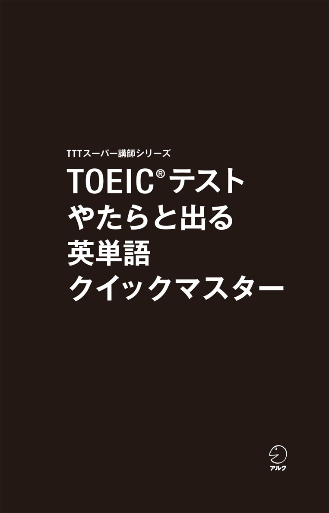
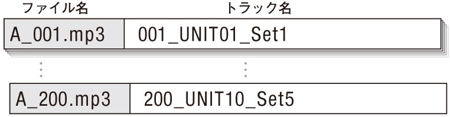
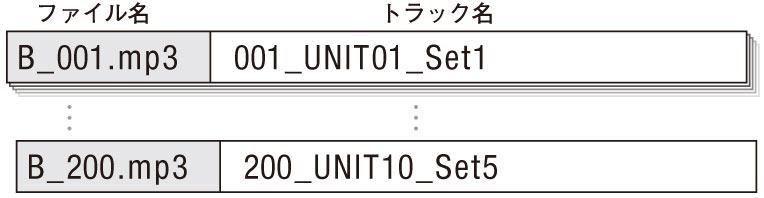
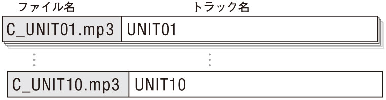
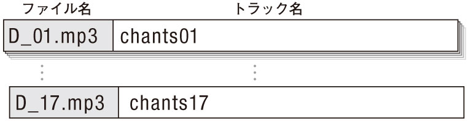
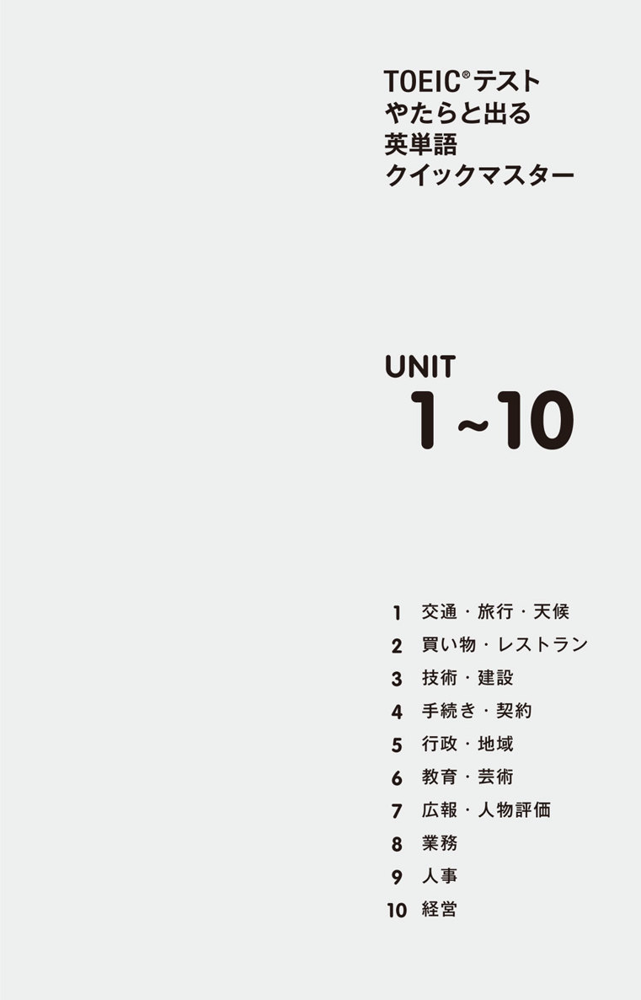
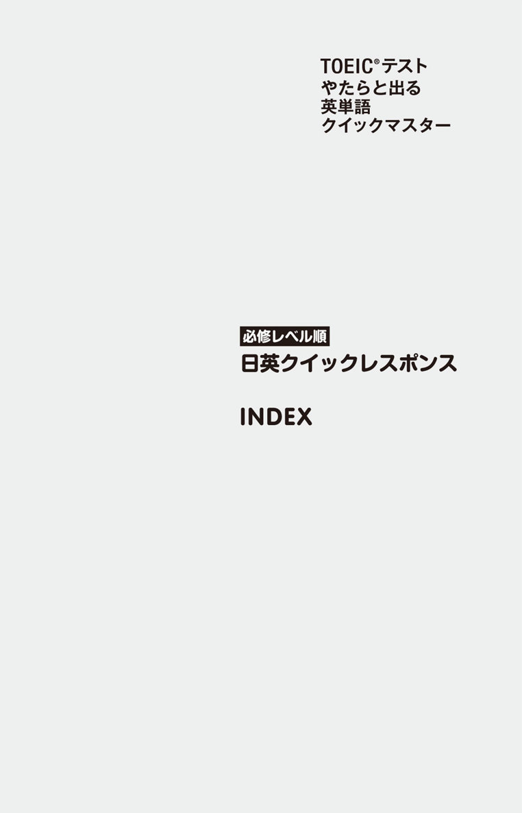

| [新形式問題対応／音声DL付] TOEIC(R)テスト やたらと出る英単語 クイックマスター TTTスーパー講師シリーズ | |
| テッド寺倉 & 上原ちとせ | |
| (2013) | |

参照項目から元の箇所に戻るには、お使いのビューワーの仕様に従ってください。または一旦目次を表示し、戻りたい箇所の近くの見出しをタップして戻ってください。
は じ め に
TOEICの講師として最もよく受ける質問の一つが「単語はどうすれば覚えられるか」というものです。この答えは学習者によって若干変わってくるのですが、共通の方法論が幾つかあります。
・単語だけで覚えようとせず、文のイメージと共に覚える。
・文字だけに頼るのではなく、音声も聞いて記憶を強化する。
・反復はやはり大切。何度も見て聞いて音読して定着させる。
・日本語を見て英単語が言えるレベルを目指す。
・既知の情報や身近な事柄、関連語等とひも付けて覚える。
本書はこれらを実現し、語彙習得の効率をアップするための5つの特長を備えています。
1. 1つの例文で3つ以上の「出る語」をマスター
1単語を覚えるために1文を読まなくてはいけないのは非効率。そこで本書では、1例文中に最低3つのTOEIC頻出語・重要語を盛り込みました。さらに、見出し語以外の部分にもできるだけ頻出語を取り入れることで、より効率性を高めました。
2. 絶対必要な語を6人の講師がレベル判定
必須語彙は目標とするスコアに応じて変わってきます。本書では、TTTの講師仲間である西嶋愉一、早川幸治、横川綾子、さらに師であるヒロ前田の各氏に協力いただき、各見出し語の「必修レベル」を判定しました。★★★は470点、★★は600点、★は730点を目標とする受験者が知っておくべき語句です。
3. リアルな情報・用例が満載の生講義＆解説
各例文に音声講義、各見出し語に解説を付け、リアルな出題パターンや用例など、本番で即戦力となる知識を多数盛り込みました。これは著者と講師仲間が実際にテストを受験し続けて得た生の情報です。また暗記を助けるヒントも紹介しています。
4. 例文・見出し語を英語と日本語で収録
「車の運転中に音声を聞いているときに、例文が英語だけだと意味が分からなくて困る」という初学者が抱える問題を、例文の日本語訳も音声収録することで解消しました。また、全見出し語をリズムに乗せたクイックレスポンス方式（日→英順）で総復習できる「チャンツ音声」も収録しています。
5. 覚えやすいテーマ別のUNIT構成
TOEIC語彙本には珍しい、テーマ別のUNIT構成にしました。同じ分野の語句はまとめて覚えた方がイメージがつながり、記憶に残りやすくなります。各UNITの終わりにある実戦問題はPart 5形式で、学んだ単語の知識が実際のテストでどのように問われるかが分かります。
本書が皆さんの日々の学習の良きパートナーとなり、目標スコア達成のお役に立てることを願っています。
テッド寺倉・上原ちとせ
TTTスーパー講師シリーズ
TOEIC界のベスト＆ロングセラー、『新TOEIC®テスト 直前の技術』（アルク）を生み出したヒロ前田とロバート・ヒルキがトレーナーを務めるアルクの「TOEIC®テストスコアアップ指導者養成講座」(Teacher Training for the TOEIC® Test=TTT)。2005年の開講以来参加者は250人を超え、企業研修・大学・高校・専門学校で活躍するTOEIC講師や教材執筆者を多数輩出しています。"TTTスーパー講師シリーズ"は、TOEICテストに関する深い知識と卓越した指導力を誇るTTT卒業生が、単独／チームで執筆する教材シリーズです。
TOEIC®テスト
やたらと出る
英単語
クイックマスター
CONTENTS
UNIT 1 交通・旅行・天候
UNIT 2 買い物・レストラン
UNIT 3 技術・建設
UNIT 4 手続き・契約
UNIT 5 行政・地域
UNIT 6 教育・芸術
UNIT 7 広報・人物評価
UNIT 8 業務
UNIT 9 人事
UNIT 10 経営
本 書 の 構 成 と 使 い 方
全体の構成
● TOEICの頻出語・重要語を凝縮した「200の例文」と、それに対応する「600の見出し語」が、テーマ別に1～10のUNITに分類されて掲載されています。
● 各UNITの終わりに、復習リストと実戦問題があります。
● 本書に対応する無料ダウンロード音声が4種類用意されています。
各UNITの構成
UNITは、それぞれに例文4つを含む「Set 1～5」と、復習と演習のための「Get Back! 復習リスト」「Time to Play! 実戦問題」で構成されています。
Set 1～5
例文とそれに対応する見出し語を、関連情報と共に掲載しています。例文4つで1 Setなので、「1日1 Set」などと決めて計画的に取り組むとよいでしょう。
本書で使われている
記号
他：他動詞 自：自動詞 名：名詞
形：形容詞 副：副詞 接：接続詞
前：前置詞
同：同義語 類：類義語 反：反意語
コ：コロケーション 関：関連する語
1例文の
構成
Set 1
001
【例文番号音声ファイルの名称もこの数字に対応しています。】
Passengers withbaggage to check in should waitinline.
【例文見出し語に当たる部分が太字になっています。】
預け荷物のある乗客は、一列に並んで待たなければならない。
【例文の訳例文の太字に当たる部分を下線で示しています。】
★★★
【必修レベル表示
見出し語の「必修レベル」を示したもの。★★★／★★／★はそれぞれ、目標スコアが470点／600点／730点の人が必ず身に付けるべき語句を表します。】
001
□ passenger
[pǽsəndʒər]
【見出し語・発音記号・語義・関連語
関連語は、TOEICでよく問われる派生語と「同義語」「類義語」「反意語」「コロケーション」「関連する語」を掲載しています。】
名乗客
コ transit passenger乗り継ぎ客
「pass（通り過ぎる、移動する）する客」と覚えるとよい。
【解説
見出し語について「押さえるべきポイント」「出題パターン」「覚えやすくなるヒント」などを解説しています。】
Get Back! 復習リスト
UNITで学習した全ての見出し語とその訳語を、品詞ごとに一覧にしたもの。見出し語の意味をすぐに言えるかどうか、確認しましょう。
Time to Play! 実戦問題
UNITで学習した語句に関する、Part 5 形式の実戦問題。本番でどのように問われるのかの例を知り、実戦力を付けましょう。
本 書 の 構 成 と 使 い 方
音声ファイルの種類と使い方
本書に対応する音声ファイル（mp3）は、用途別に4種類あります。
音声Ａ
耳だけでらくらく学習 ⇨ 「例文／見出し語／講義」音声
例文➡例文の訳➡［見出し語➡見出し語の訳➡見出し語➡ポーズ］×3語➡例文➡講義
●本書に取り組む際に初めに聞いてほしい音声です。本を見ながらでも、本なしで聞くだけでもOK。
●「講義」には、本に書かれていない重要ポイントも収録。
●「ポーズ」では、聞こえた通りにまねて言う練習（リピーティング）を行いましょう。
音声Ｂ
何度も聞いてマスター ⇨ 「例文／見出し語」音声
例文➡例文の訳➡［見出し語➡見出し語の訳➡見出し語➡ポーズ］×3語➡例文
●音声Aから「講義」を除いたものです。
●例文／見出し語を日本語と共に繰り返し聞きたい人に。
音声Ｃ
例文をリピーティング＆総復習 ⇨ 「例文／ポーズ」音声
［例文➡ポーズ］×20例文
●ポーズの部分でリピーティングを繰り返し行うことで、例文の定着度がさらに高まり、リスニング力も身に付きます。
●例文を聞いて意味が分かるかどうかを確認する総復習にも。
音声Ｄ
見出し語をチャンツで総復習 ⇨ 「日英クイックレスポンス」音声
［見出し語の訳➡ポーズ➡見出し語］×36語 （音楽入り）
●巻末付録「必修レベル順 日英クイックレスポンス」に対応したチャンツです。
●音楽に合わせて、全ての見出し語を日本語→英語の順に総復習することができます。
無料音声ダウンロード
本書に対応する音声は、全て無料でダウンロードいただけます。下記リンクにアクセスし『TOEIC®テスト やたらと出る英単語 クイックマスター』を選択、フォームに必要事項をご記入のうえ送信いただくと、ダウンロードページURLのご案内メールが届きます。
ALC Download Center
ダウンロードセンター
http://www.alc.co.jp/dl/
フォルダ構成・ファイル名等の詳細は次ページをご覧ください。
本 書 の 構 成 と 使 い 方
●フォルダ構成とファイルの名称
ダウンロードセンターにあるmp3ファイルは、前述の音声Ａ～音声Ｄに対応する４つのフォルダ（アルバム）に分かれています。
音声Ａ
やたらと出る英単語QM_例文／見出し語／講義
全200ファイル

音声Ｂ
やたらと出る英単語QM_例文／見出し語
全200ファイル

音声Ｃ
やたらと出る英単語QM_例文／ポーズ
全10ファイル

音声Ｄ
やたらと出る英単語QM_日英クイックレスポンス
全17ファイル

※音声A、音声Bのファイル名、トラック名に付いている3桁の数字は、本書の例文番号に対応しています。

UNIT１ 交通・旅行・天候
Set 1
001
Passengers withbaggage to check in should waitinline.
預け荷物のある乗客は、一列に並んで待たなければならない。
★★★
001
□ passenger
[pǽsəndʒər]
名乗客
コ transit passenger乗り継ぎ客
「pass（通り過ぎる、移動する）する客」と覚えるとよい。
★★★
002
□ baggage
[bǽɡidʒ]
名荷物、旅行かばん（類）
同 luggage
baggageとluggageは共に不加算名詞。
★★★
003
□ in line
一列に並んで
関 line up並ぶ
Part 1には並んだ人や物が登場する。
002
Ms. Page asked hersecretary toarrange train tickets to Paris as shepreferred not to fly.
ペイジさんは、飛行機での移動を好まないので、秘書にパリ行きの列車の切符を手配するように頼んだ。
★★★
004
□ secretary
[sékrətèri]
名秘書
類 administrative assistant秘書、管理アシスタント
TOEICではsecretaryが男性であることも多いので、先入観は禁物。
★★★
005
□ arrange
[əréindʒ]
他～を手配する
類 prepare～を用意する
反 cancel～を取り消す
Part 1ではもっぱら椅子などを「並べる」の意味で出る。
★★★
006
□ prefer
[prifə́ːr]
他むしろ～を好む
名 preference好み
類 be in favor of 〜～に賛成している
求人広告の条件にpreferredとあれば「より好ましい」の意。
003
If the seat belt is too loose, pull on the end andadjust itslength beforedeparture.
シートベルトが緩すぎる場合は、出発前に、端を引っ張り長さを調整してください。
★★★
007
□ adjust
[ədʒʌ́st]
他～を調整する
自順応する
名 adjustment適応、適合
adjust to a new environmentは「新しい環境に慣れる」。
★★★
008
□ length
[léŋkθ]
名長さ
コ length and width縦と横（の長さ）
「深さ」はdepthという。
★★★
009
□ departure
[dipɑ́ːrtʃər]
名出発
自 depart出発する
反 arrival到着
Part 4の空港のアナウンスや、itinerary（旅程）にも頻出する。
004
Novehicles arepermitted to park onsidewalks.
いかなる車両も歩道の上に駐車することは許可されていない。
★★★
010
□ vehicle
[víːikl]
名車両
類 automobile自動車
SUVはsport utility vehicle（スポーツ汎用車、RV車）の略。
★★★
011
□ permit
他[pərmít] 名[pə́ːrmit]
他～を許可する
名許可証
名 permission許可
be permittedと受け身で使われることが多い。
★★★
012
□ sidewalk
[sáidwɔ̀ːk]
名歩道
同 walkway
curb（縁石）も併せて覚えておこう。
Set 2
005
The passengers on Flight 273 werecompensated withvouchers for a free meal or otherrefreshments.
273便の乗客は、無料の食事か軽食のクーポンで補償された。
★★★
013
□ compensate
[kɑ́mpənsèit]
他～（人）に補償する
名 compensation補償
compensate for 〜＝make up for 〜（～の埋め合わせをする）。
★★★
014
□ voucher
[váutʃər]
名クーポン
同 coupon
Part 4では、飛行機の遅延をわびるためのクーポン配布が定番。
★★★
015
□ refreshments
[rifréʃmənts]
名軽食
他 refresh～の元気を回復させる
「軽食」の意味では通常複数形で使われる。
006
When Highway 66 iscongested, it is quicker to take smaller roads andavoid thetraffic.
ハイウェイ66が混んでいるときは、より細い道を通って交通渋滞を避ける方が早い。
★★★
016
□ congested
[kəndʒéstid]
形混雑した
名 congestion渋滞、混雑
traffic congestion＝traffic jam（交通渋滞）。
★★★
017
□ avoid
[əvɔ́id]
他～を避ける
「～しないようにする」はavoiddoingで、todoは使わない。
★★★
018
□ traffic
[trǽfik]
名交通（量）
コ traffic report交通情報
trafficの状態が良くない場合はheavy、slow、badで表現する。
007
Bybooking around-tripticket and hotel together, travelers can enjoysubstantial discounts.
往復切符とホテルを併せて予約することで、旅行者はかなりの値引きを受けられる。
★★★
019
□ book
[búk]
他～を予約する
コ book a flight飛行機を予約する
品詞に注意して「本」なのか「～を予約する」なのか判断しよう。
★★★
020
□ round-trip ticket
往復切符
関 one-way/single ticket片道切符
「往復切符」はreturn ticketとも言う。
★★★
021
□ substantial
[səbstǽnʃəl]
形かなりの
同 considerable、significant
副詞はsubstantially（かなり、実質的には）。
008
Drivers arewarned toexpect icyconditions on the roads in Sheffield over the weekend.
この週末の間に運転する人は、シェフィールドでは道の凍結状態を予期するよう警告されている。
★★★
022
□ warn
[wɔ́ːrn]
他～に警告する
同 alert
例文はwarn 〜 todo（～に...するよう警告する）の受動態。
★★★
023
□ expect
[ikspékt]
他～を予期する
同 anticipate
I'm expecting to see 〜. なら「私は～と会う予定です」の意。
★★★
024
□ condition
[kəndíʃən]
名状態、条件
類 circumstance状況
be in good conditionは「調子・状態が良い」。
Set 3
009
The weatherforecast said it would berelatively humid fortherestof the week.
天気予報によれば、週の後半は、比較的湿度が高いらしい。
★★★
025
□ forecast
[fɔ́ːrkæ̀st]
名予報
関 weather report天気予報
接頭辞のfor(e)- は「前」を意味する。
★★★
026
□ relatively
[rélətivli]
副比較的に、相対的に
形 relative相互の、相対的な
relativeは名詞なら「親戚」の意。
★★★
027
□ the rest of 〜
後の～、残りの～
remainderもrest同様「残り」の意。
010
EasyTravel offers a tour of thehistoricalauditorium and thewheelbarrow factory in Govinda.
イージートラベル社は、ゴヴィンダの歴史的な公会堂や手押し車工場を訪れる観光ツアーを提供している。
★★★
028
□ historical
[histɔ́ːrikəl]
形歴史的な
名 history歴史
形 historic歴史的に重要な
historian（歴史学者）はTOEICに登場する職業の一つ。
★★★
029
□ auditorium
[ɔ̀ːditɔ́ːriəm]
名公会堂、講堂
会社や学校の中の講堂、ホールも指す。
★★★
030
□ wheelbarrow
[hwíːlbæ̀rou|wíːl-]
名手押し車
コ push a wheelbarrow手押し車を押す
Part 1でなぜか頻出の語。
011
We need tosecureaccommodations near theconvention hall.
私たちはその会議場の近くに宿を確保する必要がある。
★★★
031
□ secure
[sikjúər]
他～を確保する
形確保された、安全な
名 security安全
securityとsafety（安全）は共に名詞。形容詞と間違えないよう注意。
★★★
032
□ accommodation
[əkɑ̀mədéiʃən]
名宿泊施設
他 accommodate～を収容できる
accommodateには「～（要求など）に応じる」の意もある。
★★★
033
□ convention
[kənvénʃən]
名会議、大会
同 conference
「代表者会議」というニュアンスがあるが、TOEICでは「会議」でよい。
012
We arecommitted toproviding tailored holidays tosuit any requirements.
私たちは、どのような要望にも合うよう、オーダーメードの休日を提供することに全力を傾ける。
★★★
034
□ committed
[kəmítid]
形全力を傾けた
同 dedicated
例文はbe committed todoing（～することに全力を傾ける）の形。
★★★
035
□ provide
[prəváid]
他～を提供する
同 supply
Internet provider（プロバイダー）はネット接続を「提供」している。
★★★
036
□ suit
[súːt]
他～に合わせる、～に似合う
同 match
「よくお似合いのsuit（スーツ）ですね」と覚えてもいいだろう。
Set 4
013
Passengers mayclaimmeal coupons and help themselves topastries and coffee.
乗客は食事券を引き取り、パン菓子とコーヒーをもらうことができる。
★★★
037
□ claim
[kléim]
他～を引き取る、～を主張する
名要求、主張
make a claimは「請求する、主張する」。
★★★
038
□ meal
[míːl]
名食事
コ have a meal食事をする
three meals a dayは「１日３度の食事」。
★★★
039
□ pastry
[péistri]
名パン菓子
類 baked goods焼いたパンやお菓子
パイやタルトなどの焼き菓子のこと。
014
Thecommitteeelaboratedon the options for the trip and asked everyone to choose his or her preferreddestination.
委員会は旅行のオプションの詳細を述べ、皆に好みの行き先を選ぶよう求めた。
★★★
040
□ committee
[kəmíti]
名委員会
JOC＝Japanese Olympic Committee（日本オリンピック委員会）
★★★
041
□ elaborate
自[ilǽbərèit] 形[ilǽbərət]
自詳細を述べる
形複雑な、精巧な
名 elaboration念入りに作られたもの
elaborate equipmentは「精巧な装置」。
★★★
042
□ destination
[dèstənéiʃən]
名行き先、目的地
コ final destination最終目的地
「（列車などが）～行きの」を表すのはbound for 〜。
015
During the flight,inclementweather caused anexcessiveamount of turbulence.
飛行中、悪天候により過度な量の乱気流が発生した。
★★★
043
□ inclement weather
悪天候
反 fine/mild weather好天
交通機関の遅れの原因になる。inclement[inklémənt]は強勢に注意。
★★★
044
□ excessive
[iksésiv]
形過度な
名 excess超過
excess baggage chargeは「超過手荷物料金」。
★★★
045
□ amount
[əmáunt]
名量
同 quantity
a fair amount of 〜 は「かなりの量の～」。
016
The low pressureled to a drop intemperatures and a blizzard in theregion.
低気圧がその地域に気温の低下と大吹雪をもたらした。
★★★
046
□ lead to 〜
～を引き起こす
同 cause、result in 〜
leadの過去形はled。Part 1では「～に通じる」の意味で出る。
★★★
047
□ temperature
[témpərətʃər]
名気温
関 humidity湿度
湿度をもたらす「水分、水蒸気」はmoisture。
★★★
048
□ region
[ríːdʒən]
名地域
形 regional地域の
類 district地区
regional manager（地域担当マネジャー）は上級管理職だ。
Set 5
017
Employees at Balzary Securities areencouraged tocarpool to work as parking space is in shortsupply.
駐車スペースの供給が不足しているので、バルザリー証券の従業員は、相乗り通勤するよう促されている。
★★★
049
□ encourage
[inkə́ːridʒ]
他～を促す、～を勇気づける
名 courage勇気
例文はencourage 〜 todo（～を...するよう励ます・促す）の受動態。
★★★
050
□ carpool
[kɑ́ːrpùːl]
自相乗りする
駐車場が改修中でスペースが足りないなどの際の対策として出る。
★★★
051
□ supply
[səplái]
名供給
コ office supplies事務用品
be in short supplyに関連し、be short of 〜（～が足りない）も押さえる。
018
The innnot only has a gourmetcatering service,but the hospitality is trulyexceptional.
その宿屋はグルメなケータリングサービスをするだけでなく、手厚いもてなしも大変素晴らしい。
★★★
052
□ not only 〜 but (also) ...
～だけでなく...も
同 not just ~ but (also) ...
Part 5の小さい接続詞を問う問題の選択肢として登場する。
★★★
053
□ catering
[kéitəriŋ]
名ケータリング、配膳業
自他 cater料理の仕出しをする、～を満たす
cater to 〜は「～（要求など）に応じる」。
★★★
054
□ exceptional
[iksépʃənl]
形素晴らしい、例外的な
名 exception例外
前 except～を除いて
接尾辞の -alが付く語は形容詞の場合が多い。
019
The passengers were asked to fill out aquestionnaire after boarding thespaciousvessel.
広々とした船に乗り込んだ後、乗客はアンケートに答えることを求められた。
★★★
055
□ questionnaire
[kwèstʃənɛ́ər]
名アンケート
名 question質問、疑問
類義語のsurvey（アンケート、調査）も併せて覚えよう。
★★★
056
□ spacious
[spéiʃəs]
形広々とした
名 space場所、空間
接尾辞の -iousが付く語は形容詞の場合が多い。
★★★
057
□ vessel
[vésəl]
名（大型の）船
同 ship
類 boat（小型の）船、ボート
cruiserは「寝泊まりする設備の備わった船」。
020
We have a prettyintensiveitinerary lined up, but it does includeoccasional stopovers in Asia.
私たちはかなり過密な旅程を組んでいるが、時々アジアでの途中降機がある。
★★★
058
□ intensive
[inténsiv]
形集中的な
形 intense強烈な、激しい
反 extensive幅広い
intensive courseは「集中講座」。
★★★
059
□ itinerary
[aitínərèri]
名旅程（表）
類 timetable時刻表、予定表
類 schedule予定（表）
旅行代理店からのitinerary confirmation（旅程確認）のメールは定番。
★★★
060
□ occasional
[əkéiʒənəl]
形時々の、たまの
副 occasionally時々、たまに
「臨時の、不定期の」の意味のcasualと言い換え可能。
UNIT１ Get Back!
復習リスト このUNITで学んだ単語を、品詞別にチェック！
動詞
| □ arrange | ～を手配する |
| □ prefer | むしろ～を好む |
| □ adjust | ～を調整する、順応する |
| □ permit | ～を許可する（名詞：許可証） |
| □ compensate | ～（人）に補償する |
| □ avoid | ～を避ける |
| □ book | ～を予約する |
| □ warn | ～に警告する |
| □ expect | ～を予期する |
| □ secure | ～を確保する |
| □ provide | ～を提供する |
| □ suit | ～に合わせる、～に似合う |
| □ claim | ～を引き取る、～を主張する（名詞：要求、主張） |
| □ elaborate | 詳細を述べる（形容詞：複雑な、精巧な） |
| □ encourage | ～を促す、～を勇気づける |
| □ carpool | 相乗りする |
名詞
| □ passenger | 乗客 |
| □ baggage | 荷物、旅行かばん（類） |
| □ secretary | 秘書 |
| □ length | 長さ |
| □ departure | 出発 |
| □ vehicle | 車両 |
| □ sidewalk | 歩道 |
| □ voucher | クーポン |
| □ refreshments | 軽食 |
| □ traffic | 交通（量） |
| □ condition | 状態、条件 |
| □ forecast | 予報 |
| □ auditorium | 公会堂、講堂 |
| □ wheelbarrow | 手押し車 |
| □ accommodation | 宿泊施設 |
| □ convention | 会議、大会 |
| □ meal | 食事 |
| □ pastry | 菓子パン |
| □ committee | 委員会 |
| □ destination | 行き先、目的地 |
| □ amount | 量 |
| □ temperature | 気温 |
| □ region | 地域 |
| □ supply | 供給 |
| □ catering | ケータリング、配膳業 |
| □ questionnaire | アンケート |
| □ vessel | 船、船舶 |
| □ itinerary | 旅程（表） |
形容詞
| □ congested | 混雑した |
| □ substantial | かなりの |
| □ historical | 歴史的な |
| □ committed | 全力を傾けた |
| □ excessive | 過度な |
| □ exceptional | 素晴らしい、例外的な |
| □ spacious | 広々とした |
| □ intensive | 集中的な |
| □ occasional | 時々の、たまの |
副詞
| □ relatively | 比較的に、相対的に |
熟語ほか
| □ in line | 一列に並んで |
| □ round-trip ticket | 往復切符 |
| □ the rest of 〜 | 後の～、残りの～ |
| □ inclement weather | 悪天候 |
| □ lead to 〜 | ～を引き起こす |
| □ not only 〜 but (also) ... | ～だけでなく...も |
UNIT１ Time to Play!
実践問題 Part 5形式の問題で実戦力をつけよう。
選択肢(A)～(D)の中から空所に入る最も適切なものを選んでください。
1. This ------- is known to have heavy snow in the winter and exceedingly high temperatures in the summer.
(A) region
(B) regions
(C) regional
(D) regionally
2. The airline company will ------- the passengers for the delay by issuing complimentary meal vouchers.
(A) warn
(B) secure
(C) introduce
(D) compensate
3. We decided to take a different route due to the ------- on Winwood Road because we could not afford to be late for the meeting with Mr. Brown.
(A) congestion
(B) expectation
(C) destination
(D) accommodation
4. The tourists were pleased with the ------- vehicle the car rental company provided for them.
(A) loose
(B) spacious
(C) relevant
(D) miscellaneous
解答・解説は次のページ
解答・解説
1.出題分野：品詞
訳：この地域は冬は雪が多く、夏は非常に気温が上がることで知られている。
解説：空所のすぐ後にbe動詞が来ているので主語が欲しい。名詞は(A)か(B)だが、be動詞がisなので単数形の(A)が正解だと分かる。
正解：(A)
2.出題分野：語彙
訳：航空会社は無料食事クーポンを発行することで遅れを乗客に補償する。
解説：「～に補償する」を意味する(D)が正解。(A)「～に警告する」、(B)「～を確保する」、(C)「～を紹介する」も頻出語だ。voucher（クーポン）の同義語のcouponや、complimentary（無料の）の同義語のfreeもPart 4によく出る。
正解：(D)
3.出題分野：語彙
訳：ブラウンさんとの打ち合わせに遅れるわけにはいかなかったので、ウィンウッド通りの渋滞を避けるために違う道順を選んだ。
解説：選択肢は全て -tionで終わる名詞。文意から(A)「渋滞」を選ぶ。(B)は「期待、予想」、(C)は「目的地」、(D)は「宿泊施設」。
正解：(A)
4.出題分野：語彙
訳：観光客はレンタカー会社が用意した広い車に満足した。
解説：全て形容詞だが、どのようなレンタカーなら客が満足するか考えよう。(A)「緩い」は洋服が「ゆったりした」の場合は使えるが、車がゆったりと「広い」場合は(B)が適切。(C)は「関連する」、(D)は「その他もろもろの」。
正解：(B)
UNIT２ 買い物・レストラン
Set 1
021
Ingeneral, high-end restaurants usually require that guests makereservationsinadvance.
一般的には、高級レストランはたいてい事前に予約することを顧客に求める。
★★★
061
□ in general
一般的に
同 generally、normally
generally speakingは「一般的に言うと」。
★★★
062
□ reservation
[rèzərvéiʃən]
名 予約
他 reserve～を予約する
コ make a reservation予約する
reserveはbook、reservationはbookingがそれぞれ同義語。
★★★
063
□ in advance
事前に
同 beforehand、earlier
advanceは「進歩」、advancedは「上級の」。
022
At Restaurant Bono, malediners arerequired towear a jacket.
レストラン・ボノでは、男性の食事客はジャケットを着用するよう求められる。
★★★
064
□ diner
[dáinər]
名 食事をする客
自 dine食事を取る
「食堂」の意味もある。
★★★
065
□ require
[rikwáiər]
他 ～を要求する
名 requirement必要条件
例文はrequire ～ todo（～に...するよう要求する）の受動態。
★★★
066
□ wear
[wɛ́ər]
他 ～を着用している
関 put on 〜～を着る、～を身に着ける
Part 1で、服を着用した状態の人の描写ではwearingを使う。
023
Menza's Pizza has afriendlyatmosphere andseparate dining sections.
メンザズ・ピザは親しみやすい雰囲気と個別の食事スペースを持っている。
★★★
067
□ friendly
[fréndli]
形 親しみやすい
類 favorable好意的な
類 pleasant気持ちの良い
-lyが付く語は副詞が多いが、名詞＋-lyだと形容詞になる。
★★★
068
□ atmosphere
[ǽtməsfìər]
名 雰囲気
コ cozy atmosphereくつろいだ雰囲気
unpleasant atmosphere（嫌な雰囲気）は苦情の原因になる。
★★★
069
□ separate
[sépərət]
形 個別の、分かれた
類 divided分けられた
separate[sépərèit] 〜 from ...（～を...から分ける）という動詞用法も。
024
The waitressconfirmed theorder and quickly returned to the kitchen to get theutensils.
ウェートレスは注文を確認し、（食事のための）器具を取りに急いで厨房に戻った。
★★★
070
□ confirm
[kənfə́ːrm]
他 ～を確認する
名 confirmation確認
Part 3や7では、注文や会議の日時を確認する場面が多い。
★★★
071
□ order
[ɔ̀ːrdər]
名 注文、注文品
コ place an order注文する
コ take an order注文を取る
動詞用法もあり、order onlineは「ネットで注文する」。
★★★
072
□ utensils
[juːténsəlz]
名 器具、用具
Part 1の台所の写真に調理器具があったらこの語を思い出そう。
Set 2
025
RAT Technologies hasmanagedto releaserevolutionary products for over adecade.
ＲＡＴテクノロジーズは10年を超える期間、革命的な製品をどうにか発売してきた。
★★★
073
□ manage todo
どうにか～する
関 attempt todo～しようとする
to 不定詞とセットで覚えて、Part 5、6の空所補充問題に備えよう。
★★★
074
□ revolutionary
[rèvəlúːʃənèri]
形 革命的な
名 revolution革命
最新の技術や製品について語られているときに登場する語。
★★★
075
□ decade
[dékeid, dikéid]
名 10年間
コ for decades何十年もの間
10 yearsとの言い換え表現として頻出。half a decadeなら「5年間」。
026
NirvanaFurnitureguarantees the lowest prices and will match anyadvertised price.
ニルヴァーナ家具は最低価格を保証し、どんな広告価格にも応じる。
★★★
076
□ furniture
[fə́ːrnitʃər]
名 家具
関 fixture取り付け備品
家具一式を指してfurnitureと言うので不可算名詞。
★★★
077
□ guarantee
[ɡæ̀rəntíː]
他 ～を保証する
名 保証、保証書
類 warranty保証、保証書
「ギャラ」は「最低保証料金」という意味に由来する。
★★★
078
□ advertise
[ǽdvərtàiz]
他 ～を広告する
名 advertisement広告
What is being advertised?（何が宣伝されていますか）はよく出る。
027
Beck Supplies offersrepair and maintenance services forphotocopiers ataffordable prices.
ベック事務用品店は、コピー機の修理や保守サービスをお求めやすい価格で提供する。
★★★
079
□ repair
[ripɛ́ər]
名 修理
同 fix
repair person（修理工）もよく登場する職業。
★★★
080
□ photocopier
[fóutəkɑ̀piər]
名 コピー機
同 copy machine
関 make a copyコピーを取る
TOEICではしばしばout of paper（紙切れ）になることでおなじみだ。
★★★
081
□ affordable
[əfɔ́ːrdəbl]
形 お求めやすい
類 reasonable手頃な
広告宣伝では、cheap（安い、安っぽい）とは言わずこの語を用いる。
028
Mercury Mediapublishes a monthly magazinefeaturing recipes forformal occasions.
マーキュリー・メディアは、格式ばった場面向けのレシピを売りにした月刊誌を出版している。
★★★
082
□ publish
[pʌ́bliʃ]
他 ～を出版する
名 publisher出版社
「出版社」はpublishing companyとも言う。
★★★
083
□ feature
[fíːtʃər]
他 ～を売りにする
名 特徴
発音はfuture（未来）と混同しないように。
★★★
084
□ formal
[fɔ́ːrməl]
形 格式ばった、正式の
コ formal dress正装、フォーマルドレス
formal noticeは「正式通知」。
Set 3
029
You can returnmerchandise for a fullrefund within two weeks ofpurchase.
購入から2週間以内であれば、全額返金で返品可能です。
★★★
085
□ merchandise
[mə́ːrtʃəndàiz]
名 商品
同 goods
merchantは「商人」の意。
★★★
086
□ refund
[ríːfʌnd]
名 返金、払い戻し
類 reimbursement返済、償還
full refundは「全額返金」。
★★★
087
□ purchase
[pə́ːrtʃəs]
名 購入（物）、仕入れ
他 ～を購入する
名 purchaser購買者
original purchaserは「当初購買者」。
030
Please findattached the newquote withcorrections for out-of-stock items.
在庫切れの商品について訂正した新たな見積書を添付します。
★★★
088
□ attach
[ətǽtʃ]
他 ～を添付する
名 attachment添付ファイル
関 enclose～を同封する
Please find attached ~（～を添付します）はメールの定型表現。
★★★
089
□ quote
[kwóut]
名 見積書
同 estimate
estimateは他動詞「～を見積もる」としても使われる。
★★★
090
□ correction
[kərékʃən]
名 訂正
他 correct～を訂正する
形 correct正しい
collection（コレクション、収集物）と混同しないように。
031
A wideselection ofpharmaceutical products will be on themarket starting next month.
豊富な品ぞろえの医薬品が来月から市場に出るだろう。
★★★
091
□ selection
[silékʃən]
名 品ぞろえ
他自 select（～を）選ぶ
形 selective選択的な
selection board（選定委員会）のように形容詞的にも使われる。
★★★
092
□ pharmaceutical
[fɑ̀ːrməsúːtikəl]
形 薬剤の
名 pharmacy薬局
名 pharmacist薬剤師
発音注意。会社名に "~ pharma" とあれば製薬会社。
★★★
093
□ market
[mɑ́ːrkit]
名 市場
コ stock market株式市場
コ market prices市場価格
「市場で取引する、～を売る」の意味の動詞としても使われる。
032
Meat, dairy andproduce are usuallyshelved around the outer walls ingrocerystores.
肉や乳製品、農産物は、たいてい食料雑貨店の外周の壁の辺りに陳列されている。
★★★
094
□ produce
名[prɑ́djuːs] 他[prədjúːs|-djúːs]
名 農産物
他 ～を生産する
コ fresh produce新鮮な農作物
強勢は、名詞用法では第1音節、動詞用法では第2音節。
★★★
095
□ shelve
[ʃélv]
他 ～を棚に置く
名 shelf棚板、棚
shelving unitでも「（収納）棚」の意。
★★★
096
□ grocery store
食料雑貨店
同 grocery
関 groceries食料雑貨類
TOEICではgrocery (store) はsupermarketと同義。
Set 4
033
Traditional Chinesemedicines are said totreatsymptoms in a holistic way.
伝統的な中国の薬は、包括的に症状を治療するといわれている。
★★★
097
□ medicine
[médəsin]
名 薬
形 medical医療の
関 pharmacy薬局
medical professionalは「医療専門職」。
★★★
098
□ treat
[tríːt]
他 ～を治療する
名 treatment治療、処理
「～を扱う」を軸に「～を待遇する」「～を処理する」の意味もある。
★★★
099
□ symptom
[símptəm]
名 症状
関 cure治療
良くないことの「兆候、兆し」を意味することもある。
034
Positivereviews are one of the best ways toearnpotential customers' trust.
肯定的なレビューは、潜在顧客の信頼を得るのに最も良い方法の一つだ。
★★★
100
□ review
[rivjúː]
名 レビュー、論評
他 ～を見直す
関 critic評論家
ユーザーの感想や評価内容を表す「レビュー」は日本語でもおなじみ。
★★★
101
□ earn
[ə́ːrn]
他 ～を得る
同 gain
「～（お金）を稼ぐ」の意味もある。
★★★
102
□ potential
[pəténʃəl]
形 潜在的な
同 prospective
名詞だと「潜在能力、ポテンシャル」の意味。
035
Toinquire about theproperty in the advertisement, please contact therelevant agent.
広告の物件についてお尋ねになる際は、関連の業者に連絡してください。
★★★
103
□ inquire
[inkwáiər]
自 尋ねる
名 inquiry質問
askと違い、人を目的語にとらないことに注意。
★★★
104
□ property
[prɑ́pərti]
名 物件
関 real estate不動産
「空き物件」は分譲ならproperty for sale、賃貸ならproperty for rent。
★★★
105
□ relevant
[réləvənt]
形 関連する
反 irrelevant無関係の
類 related関係のある
relevant to 〜（～に関連する）の形でもよく使われる。
036
Salesclerks at Total Comp are advised torecommend an extendedwarranty for computers as aprecaution.
トータルコンプ社の販売員は事前の対策として、コンピューターの延長保証を薦めるように指示されている。
★★★
106
□ recommend
[rèkəménd]
他 ～を薦める
名 recommendation推薦
類 suggest～を提案する
highly（大いに）やstrongly（強く）で強調される。
★★★
107
□ warranty
[wɔ́ːrənti]
名 保証、保証書
同 guarantee
保証書にはclause（条項）がたくさん記載されている。
★★★
108
□ precaution
[prikɔ́ːʃən]
名 事前の対策、用心
同 preventive measure
pre-（＝before）＋caution（注意、警戒）という構造だ。
Set 5
037
Hudson Tradingdeals with desktops andlaptops as well as computerworkstations.
ハドソン貿易はデスクトップパソコン、ノート型パソコンと共に、パソコン用デスクも扱っている。
★★★
109
□ deal with 〜
～を取り扱う、～に対処する
同 handle
dealは「取引、契約」、dealerは「販売業者、ディーラー」。
★★★
110
□ laptop
[lǽptɑ̀p]
名 ノート型パソコン
関 on one's lap膝の上で
膝（lap）の上で使えることから。laptop computerとも言う。
★★★
111
□ workstation
[wə́ːrkstèiʃən]
名 作業用机
Part 1ではオフィス用のデスクもworkstationと呼ばれることがある。
038
We willreimburse the cost ofpostageregardlessof when the item was shipped.
私たちは、商品がいつ出荷されたかにかかわらず、郵送料を返金します。
★★★
112
□ reimburse
[rìːimbə́ːrs]
他 ～を返済する
名 reimbursement返済、償還
立て替え払いや出張旅費の精算に用いられる語。
★★★
113
□ postage
[póustidʒ]
名 郵便料金、送料
コ postage stamp郵便切手
shipping feeは送料全般を指す。
★★★
114
□ regardless of 〜
～にかかわらず
コ regardless of the weather天気にかかわらず
regarding（～に関して）はofを伴わないので注意。
039
Besides beingsufficientlydurable, the new Aero Pillow has anappealing design.
十分に丈夫なことに加え、新しいエアロピロウは魅力的なデザインを持つ。
★★★
115
□ sufficiently
[səfíʃəntli]
副 十分に
形 sufficient十分な
enoughも「十分に」を意味するが、形容詞の後に置かれる。
★★★
116
□ durable
[djúərəbl]
形 丈夫な
名 durability耐久性
類 resistant耐性のある
be durable（丈夫だ）＝last long（長持ちする）という言い換えも可能。
★★★
117
□ appealing
[əpíːliŋ]
形 魅力的な
同 attractive
appealing offerは「魅力的な申し出・売り物」。
040
Mamma Mia is anemerging restaurant chain that servesauthentic Italiancuisine.
マンマ・ミーアは、本格イタリア料理を提供する新興レストランチェーンだ。
★★★
118
□ emerging
[imə́ːrdʒiŋ]
形 新興の
自 emerge現れる、明らかになる
new（新しい）やgrowing（成長する）で言い換え可能。
★★★
119
□ authentic
[ɔːθéntik]
形 本格派の
類 genuine本物の
料理や美術品などを形容するポジティブな語。
★★★
120
□ cuisine
[kwizíːn]
名 料理
同 cooking
フランス語からの借用語。発音注意。
UNIT２ Get Back!
復習リスト このUNITで学んだ単語を、品詞別にチェック！
動詞
| □ require | ～を要求する |
| □ wear | ～を着用している |
| □ confirm | ～を確認する |
| □ guarantee | ～を保証する（名詞：保証、保証書） |
| □ advertise | ～を広告する |
| □ publish | ～を出版する |
| □ feature | ～を売りにする（名詞：特徴） |
| □ attach | ～を添付する |
| □ shelve | ～を棚に置く |
| □ treat | ～を治療する |
| □ earn | ～を得る |
| □ inquire | 尋ねる |
| □ recommend | ～を薦める |
| □ reimburse | ～を返済する |
名詞
| □ reservation | 予約 |
| □ diner | 食事をする客 |
| □ atmosphere | 雰囲気 |
| □ order | 注文、注文品 |
| □ utensils | 器具、用具 |
| □ decade | 10年間 |
| □ furniture | 家具 |
| □ repair | 修理 |
| □ photocopier | コピー機 |
| □ merchandise | 商品 |
| □ refund | 返金、払い戻し |
| □ purchase | 購入（物）、仕入れ（動詞：～を購入する） |
| □ quote | 見積書 |
| □ correction | 訂正 |
| □ selection | 品ぞろえ |
| □ market | 市場 |
| □ produce | 農産物（動詞：～を生産する） |
| □ medicine | 薬 |
| □ symptom | 症状 |
| □ review | レビュー、論評（動詞：～を見直す） |
| □ property | 物件 |
| □ warranty | 保証、保証書 |
| □ precaution | 事前の対策、用心 |
| □ laptop | ノート型パソコン |
| □ workstation | 作業用机 |
| □ postage | 郵便料金、送料 |
| □ cuisine | 料理 |
形容詞
| □ friendly | 親しみやすい |
| □ separate | 個別の、分かれた |
| □ revolutionary | 革命的な |
| □ affordable | お求めやすい |
| □ formal | 格式ばった、正式の |
| □ pharmaceutical | 薬剤の |
| □ potential | 潜在的な |
| □ relevant | 関連する |
| □ durable | 丈夫な |
| □ appealing | 魅力的な |
| □ emerging | 新興の |
| □ authentic | 本格派の |
副詞
| □ sufficiently | 十分に |
熟語ほか
| □ in general | 一般的に |
| □ in advance | 事前に |
| □ manage todo | どうにか～する |
| □ grocery store | 食料雑貨店 |
| □ deal with 〜 | ～を取り扱う、～に対処する |
| □ regardless of 〜 | ～にかかわらず |
UNIT２ Time to Play!
実践問題 Part 5形式の問題で実戦力をつけよう。
選択肢(A)～(D)の中から空所に入る最も適切なものを選んでください。
1. That seafood restaurant by the shore is always extremely crowded, regardless ------- the time of day.
(A) at
(B) in
(C) of
(D) to
2. I ------- the itinerary with the travel agent again before we leave for Taipei Friday morning.
(A) confirm
(B) confirming
(C) confirmed
(D) will confirm
3. The Thomson brothers jointly own a restaurant in New York, which is famous for its exotic atmosphere and deliciously prepared authentic Mediterranean ------- .
(A) chef
(B) cuisine
(C) cutlery
(D) cookware
4. The customer service department deals ------- over 500 consumers on any given day.
(A) on
(B) for
(C) from
(D) with
解答・解説は次のページ
解答・解説
1.出題分野：コロケーション
訳：あの海岸沿いのシーフードレストランは、いつも一日中非常に混んでいる。
解説：regardless of 〜は「～にかかわらず」で、「一日の時間にかかわらず」＝「一日中」となる。ofは弱形の音なので、リスニングに登場してもしっかり聞き取れるよう注意しよう。
正解：(C)
2.出題分野：時制
訳：金曜の朝台北に発つ前に、旅行代理店の人と旅程をもう一度確認するつもりだ。
解説：before we leave ...という時を表す副詞節の中が現在形で、未来のことを言っている文意から、空所には未来形が必要と分かる。before we left ...と過去形であれば(C)が正解。時制の問題は理屈で解けるものが多いので全問正解したい。
正解：(D)
3.出題分野：語彙
訳：トムソン兄弟は、エギゾチックな雰囲気と本格地中海料理がおいしく提供されることで有名なレストランを、ニューヨークで共同経営している。
解説：選択肢は全てcで始まるレストラン・料理関連語だが、deliciously以下の語句に修飾された空所には(B)「料理」が適切。(A)は「シェフ」、(C)は「切る（cut）」ときに使う「刃物類」、(D)は「調理器具」。
正解：(B)
4.出題分野：コロケーション
訳：お客様窓口は来る日も来る日も、500人を超える消費者の対応をしている。
解説：deal with 〜は「～を取り扱う、～に対処する」の意味で、頻出間違いなしのフレーズ。dealを名詞として用いたgood dealsは「良い契約・値段」という意味になる。
正解：(D)
UNIT３ 技術・建設
Set 1
041
Theplumberestimates the leaky faucet will takeatleast two hours to fix.
配管工は、水漏れする蛇口を修理するのに少なくとも2時間はかかると見積もっている。
★★★
121
□ plumber
[plʌ́mər]
名 配管工
名 plumbing配管工事、排水設備
TOEICによく登場する職業の一つ。bは発音しない。
★★★
122
□ estimate
他[éstəmèit] 名[éstəmət]
他 ～を見積もる
名 見積もり（額・書）、概算
「見積書」の意味ではquoteと同義。
★★★
123
□ at least
少なくとも
反 at most多くとも、良くても
at least a week in advanceは「少なくとも１週間前には」。
042
Power surges cancause electronicdevices tomalfunction, so make sure to unplug them during a storm.
電力サージ（電圧・電流の急増）は、電子機器を誤作動させることがあるので、嵐の間は電源を抜くことを忘れずに。
★★★
124
□ cause
[kɔ́ːz]
他 ～を引き起こす
名 原因
同 lead to 〜、result in 〜
例文はcause 〜 todo（～に...させる［原因となる］）の形。
★★★
125
□ device
[diváis]
名 機器
類 appliance電化製品
広く「装置」を意味するが、特に「電子機器」のイメージ。
★★★
126
□ malfunction
[mælfʌ́ŋkʃən]
自 誤作動する
名 誤作動
類 break down故障する
mal- は「悪い」という意味を持つ接頭辞。
043
Weareafraid thestorage room is not designed to store andmaintain precision machinery.
残念ながら、その収納室は精密機械の保管や維持をするようには設計されていない。
★★★
127
□ be afraid
残念ながら、申し訳ないが
コ be afraid of 〜～を怖がる
類 be sorry残念に思う
Part 2で誘いを断るときの決まり文句。
★★★
128
□ storage
[stɔ́ːridʒ]
名 収納、貯蔵（所）
他 store～を保管する
接尾辞の -ageは名詞を表す。例：shortage（不足）
★★★
129
□ maintain
[meintéin]
他 ～を維持する
名 maintenance維持
maintenanceは機械などの機能を「維持・保守」する作業。
044
Thewarehouse managerhired amechanic to examine the damaged machinery.
その倉庫の管理者は、故障した機械を調べるために整備士を雇った。
★★★
130
□ warehouse
[wɛ́ərhàus]
名 倉庫
類 storage収納、貯蔵（所）
Part 1に頻出のlighthouse（灯台）も覚えておこう。
★★★
131
□ hire
[háiər]
他 ～を雇う
コ hire additional employeesさらに従業員を雇う
コンサルタントなどに仕事を委託する場合にも用いられる。
★★★
132
□ mechanic
[məkǽnik]
名 整備士
形 mechanical機械（上）の、工具の
TOEICの世界ではよく機械類が壊れるので、大活躍している。
Set 2
045
Thesafety manual clearlyindicates that chemicals in thelaboratory should be labeled and sealed.
安全マニュアルは、実験室の化学物質にはラベルを貼り密封しなければならないとはっきり示している。
★★★
133
□ safety
[séifti]
名 安全
形 safe安全な
コ for your safety安全のために
工場ではsafety rules（安全規則）を説明するシーンも。
★★★
134
□ indicate
[índikèit]
他 ～を示す
名 indication指示、指摘、印
What is indicated about 〜? はPart 7の設問として登場。
★★★
135
□ laboratory
[lǽbərətɔ̀ːri]
名 実験室
コ laboratory equipment実験器具
lab coatは「実験用白衣」。
046
Theconstruction crew built three housessidebyside tomaximize the use of the property.
建設チームは、土地を最大活用するため3軒の家を並べて建てた。
★★★
136
□ construction
[kənstrʌ́kʃən]
名 建設、建設工事
他 construct[kənstrʌ́kt]～を建設する
名 construct[kɑ́nstrʌkt]組み立てたもの
TOEICの世界ではunder construction（建設中）の建物が多い。
★★★
137
□ side by side
横に並んで
類 next to each other / next to one another隣同士に
working side by sideは「横に並んで仕事をしている」。
★★★
138
□ maximize
[mǽksəmàiz]
他 ～を最大にする、～を極限まで広げる
反 minimize～を最小限にする
maximize profitsは「利益を最大化する」。
047
Installing another lamp would be onemethod of improving thelighting system.
もう一つランプを取り付けることは、その照明システムを改善する一つの方法だろう。
★★★
139
□ install
[instɔ́ːl]
他 ～を取り付ける
名 installation取り付け、設置
installation fee（設置費）の有無も問題になりやすい。
★★★
140
□ method
[méθəd]
名 方法、手段
類 procedure手順
conventional methodは「従来の方法」。
★★★
141
□ lighting
[láitiŋ]
名 照明
コ indoor lighting室内照明
traffic lightsは「交通信号」。
048
Thepacket contains theresults and a detailed analysis of thechemical lab tests.
その小包には化学的な実験室テストの結果と詳細にわたる分析が含まれている。
★★★
142
□ packet
[pǽkit]
名 小包、小さな荷物
同 package、parcel
「pack（～を包む、～を詰める）されたもの」の意。
★★★
143
□ result
[rizʌ́lt]
名 結果
類 outcome結果、成果
コ study results研究結果
動詞ならresult in 〜で「～という結果になる」。
★★★
144
□ chemical
[kémikəl]
形 化学的な、化学の
名 chemistry化学
名 chemist化学者
名詞なら「化学物質」の意。
Set 3
049
Thedefective engine of the vehicle has been temporarilyfixed but will notlast long.
その車の不具合のあるエンジンは、一時的に修理されてはいるが、長く持たないだろう。
★★★
145
□ defective
[diféktiv]
形 不具合のある
名 defect欠陥
out of orderやnot workingと言い換え可能。
★★★
146
□ fix
[fíks]
他 ～を修理する
同 repair
work on 〜（～に取り組む）には「～を修理する」の意味もある。
★★★
147
□ last
[lǽst]
自 持ちこたえる、続く
類 continue続く
形容詞、副詞のlast（最後の、最後に）だけでなく動詞も覚えよう。
050
It is critical to acquireequipment that canaccurately measure andanalyze samples.
サンプルを正確に計測し分析することのできる装置を入手することが重要だ。
★★★
148
□ equipment
[ikwípmənt]
名 装置、器具
他 equip 〜 （with ...）～に（...を）装備する
tool、instrument、gear、hardwareなど類義語多数。
★★★
149
□ accurately
[ǽkjurətli]
副 正確に
形 accurate正確な
反 inaccurately不正確に
接頭辞in- が付くと反対の意味になる語は多い。
★★★
150
□ analyze
[ǽnəlàiz]
他 ～を分析する
名 analysis分析
cost-benefit analysis（費用便益分析）というフレーズは重要語の塊だ。
051
The RHC phone systemallows you to automaticallyallocateextension numbers to all your new employees.
ＲＨＣフォンシステムは、全ての新しい社員に内線番号を自動的に割り当てることを可能にする。
★★★
151
□ allow
[əláu]
他 ～を可能にする、～を許す
同 enable
例文はallow 〜 todo（～が...することを可能にする）の形。
★★★
152
□ allocate
[ǽləkèit]
他 ～を割り当てる
類 distribute～を割り当てる、～を配る
funds（資金）やresources（資源）と相性が良い。
★★★
153
□ extension
[iksténʃən]
名 内線、拡張、延期
他 extend～を延長する、～を伸ばす
内線番号は代表番号に数桁追加して伸ばすからextension。
052
If youlack someingredients, look forsubstitutes for them.
もし幾つかの材料がなければ、代用品を探しなさい。
★★★
154
□ lack
[lǽk]
他 ～を欠く
名 不足
類 be out of 〜～を切らしている
due to lack of fundsは「資金不足のために」。
★★★
155
□ ingredient
[inɡríːdiənt]
名 材料、要素
関 component構成要素、部品
料理の材料はingredients。機械の中身はcomponents。
★★★
156
□ substitute
[sʌ́bstətjùːt]
名 代用品、代役
他 substitute 〜 （for ...）～を（...の）代わりにする
サッカーの「サブプレーヤー」はsubstituteのこと。
Set 4
053
Thereliabletechnician who had always repaired our householdappliances retired after 40 years of service.
いつも私たちの家電を直してくれていた信頼できる技術者は、40年働いた後、引退した。
★★★
157
□ reliable
[riláiəbl]
形 信頼できる、頼れる
類 dependable頼りがいのある
rely on 〜、depend on 〜は「～に頼る」。
★★★
158
□ technician
[tekníʃən]
名 技術者、（工業系の）専門家
名 techniqueテクニック、技術
laboratory technicianは「検査技師」。
★★★
159
□ appliance
[əpláiəns]
名 電化製品、電気器具
TOEICではapplianceがよく壊れ、repair（～を直す）が必要になる。
054
Moreover, the new systemverifies customers' identities, making onlinetransactions even safer.
さらに、その新システムは顧客の身元を証明し、オンライン取引をより一層安全なものにする。
★★★
160
□ moreover
[mɔːróuvər]
副 さらに
同 furthermore
Part 5、6で頻出。
★★★
161
□ verify
[vérəfài]
他 ～を証明する
名 verification証明、証拠
-fyは動詞の接尾辞。
★★★
162
□ transaction
[trænzǽkʃən]
名 取引
他自 transact（～［業務、取引など］を）行う
transaction feeは「取引手数料」。
055
The representativeapologized andreplaced the computer so that it would becompatible with the printer.
代表者は謝罪し、プリンターと互換性があるようにコンピューターを取り換えた。
★★★
163
□ apologize
[əpɑ́lədʒàiz]
自 謝罪する、謝る
名 apology謝罪
apologize for the inconvenienceは「不便をもたらしたことを謝る」。
★★★
164
□ replace
[ripléis]
他 ～を取り換える
名 replacement置き換え、交代
人が目的語なら「～の後任となる」。
★★★
165
□ compatible
[kəmpǽtəbl]
形 互換性のある、適合している
反 incompatible不適合な
考えや方法が「矛盾しない、両立できる」の意味もある。
056
The Woodstock Lab provided its scientists withstate-of-the-artmicroscopes and otherinstruments.
ウッドストック研究所は、最新の顕微鏡と他の器具を自社の科学者に提供した。
★★★
166
□ state-of-the-art
形 最新の
同 cutting-edge
modern（最新式の）やadvanced（先進の）とも言い換え可能。
★★★
167
□ microscope
[máikrəskòup]
名 顕微鏡
Part 1などで頻出の装置だ。
★★★
168
□ instrument
[ínstrəmənt]
名 器具、精密機器
コ musical instrument楽器
musical instrumentを演奏している写真はPart 1で頻出。
Set 5
057
Toreduce thequantity of paper waste, most internalcorrespondence is now digitized.
大量の紙ごみを減らすために、ほとんどの内部通信は、現在デジタル化されている。
★★★
169
□ reduce
[ridjúːs]
他 ～を減らす
名 reduction縮小、削減
TOEICの世界にもごみを減らそうというエコの取り組みは登場する。
★★★
170
□ quantity
[kwɑ́ntəti]
名 大量、量
関 quality品質
order quantity（発注数）の間違いもよく出るトラブル。
★★★
171
□ correspondence
[kɔ̀ːrəspɑ́ndəns]
名 通信
名 correspondent通信員、記者
correspondは自動詞で「一致する、通信する」の意。
058
The Batterseaplant willundergo a majorrenovation starting this summer.
バタシー工場は、この夏から本格的な改修工事を施される。
★★★
172
□ plant
[plǽnt]
名 工場
同 factory
plantは「植物」の意味でも出るので文脈に応じて判断しよう。
★★★
173
□ undergo
[ʌ̀ndərɡóu]
他 ～を受ける
同 experience、go through 〜
undergo-underwent-undergoneと活用する。
★★★
174
□ renovation
[rènəvéiʃən]
名 改修、改築
他 renovate～を改装する
re- (back again) + nov (new) という構造の語。
059
The researcherspersistently continued experimenting andultimately made a breakthrough in theirfield.
研究員たちは根気強く実験を続け、最終的には彼らの分野で大発見をした。
★★★
175
□ persistently
[pərsístəntli]
副 根気強く、持続して
形 persistent持続する、しつこい
never giving up（絶対諦めない）のイメージ。
★★★
176
□ ultimately
[ʌ́ltəmətli]
副 最終的に
同 finally、eventually
形 ultimate最終的な、究極の
同義語の中でも、特に「究極さ」が含まれる語。
★★★
177
□ field
[fíːld]
名 分野
コ medical field医療分野
fieldのもう一つの意味である「野原、野」と関連付けて覚えよう。
060
We havecommissioned a consultant to advise us onimplementing energy-savingmeasures in our building.
当社ビルへの省エネ対策実施についてアドバイスをしてもらうようコンサルタントに委託した。
★★★
178
□ commission
[kəmíʃən]
他 ～に委託する
名 手数料、歩合給
例文はcommission 〜 todo（～に...するよう委託・注文する）の形。
★★★
179
□ implement
[ímpləmènt]
他 ～を実施する
同 execute、carry out 〜
implementの方が句動詞のcarry out ~ よりも堅い表現。
★★★
180
□ measure
[méʒər]
名 対策
同 step
コ take a measure対策を取る
measure against 〜は「～に対する対策」。
UNIT３ Get Back!
復習リスト このUNITで学んだ単語を、品詞別にチェック！
動詞
| □ estimate | ～を見積もる（名詞：見積もり［額・書］、概算） |
| □ cause | ～を引き起こす（名詞：原因） |
| □ malfunction | 誤作動する（名詞：誤作動） |
| □ maintain | ～を維持する |
| □ hire | ～を雇う |
| □ indicate | ～を示す |
| □ maximize | ～を最大にする、～を極限まで広げる |
| □ install | ～を取り付ける |
| □ fix | ～を修理する |
| □ last | 持ちこたえる、続く |
| □ analyze | ～を分析する |
| □ allow | ～を可能にする、～を許す |
| □ allocate | ～を割り当てる |
| □ lack | ～を欠く（名詞：不足） |
| □ verify | ～を証明する |
| □ apologize | 謝罪する、謝る |
| □ replace | ～を取り換える |
| □ undergo | ～を受ける |
| □ reduce | ～を減らす |
| □ commission | ～に委託する（名詞：手数料、歩合給） |
| □ implement | ～を実施する |
名詞
| □ plumber | 配管工 |
| □ device | 機器 |
| □ storage | 収納、貯蔵（所） |
| □ warehouse | 倉庫 |
| □ mechanic | 整備士 |
| □ safety | 安全 |
| □ laboratory | 実験室 |
| □ construction | 建設、建設工事 |
| □ method | 方法、手段 |
| □ lighting | 照明 |
| □ packet | 小包、小さな荷物 |
| □ result | 結果 |
| □ equipment | 装置、器具 |
| □ extension | 内線、拡張、延期 |
| □ ingredient | 材料、要素 |
| □ substitute | 代用品、代役 |
| □ technician | 技術者、（工業系の）専門家 |
| □ appliance | 電化製品、電気器具 |
| □ transaction | 取引 |
| □ microscope | 顕微鏡 |
| □ instrument | 器具、精密機器 |
| □ quantity | 大量、量 |
| □ correspondence | 通信 |
| □ plant | 工場 |
| □ renovation | 改修、改築 |
| □ field | 分野 |
| □ measure | 対策 |
形容詞
| □ chemical | 化学的な、化学の |
| □ defective | 不具合のある |
| □ reliable | 信頼できる、頼れる |
| □ compatible | 互換性のある、適合している |
| □ state-of-the-art | 最新の |
副詞
| □ accurately | 正確に |
| □ moreover | さらに |
| □ persistently | 根気強く、持続して |
| □ ultimately | 最終的に |
熟語ほか
| □ be afraid | 残念ながら、申し訳ないが |
| □ at least | 少なくとも |
| □ side by side | 横に並んで |
UNIT３ Time to Play!
実践問題 Part 5形式の問題で実戦力をつけよう。
選択肢(A)～(D)の中から空所に入る最も適切なものを選んでください。
1. The procedures to follow in case of ------- of the system are listed in the owner's manual.
(A) exception
(B) malfunction
(C) guarantee
(D) feature
2. In consideration of his dedicated service, Mr. Osbourne was ------- an extension of his current contract with Randall Electric.
(A) allowed
(B) denied
(C) applied
(D) reduced
3. Downtown Manchester intersections have been ------- construction for several months.
(A) during
(B) in
(C) under
(D) at
4. With its optical detection system, the Dio Printer can cut the most delicate paper forms absolutely -------.
(A) frequently
(B) accurately
(C) initially
(D) productively
解答・解説は次のページ
解答・解説
1.出題分野：語彙
訳：システムの誤作動の場合に従うべき手順は、取扱説明書に記載されている。
解説：取扱説明書に書かれている手順に従うべきなのはどんな場合かを考える。文意から(B) malfunction（誤作動）が正解。(A)は「例外」、(C)は「保証」、(D)は「特徴」。
正解：(B)
2.出題分野：語彙
訳：献身的な仕事が考慮され、オズボーン氏はランドル電気との現契約の延長を許された。
解説：文の形だけであれば(A)も(B)も可能。dedicated（献身的な）という肯定的な語がカギとなり、(A)のallowed（～を許されて）が正解になる。(B)は「～を与えられない」、(C)は「適用されて」、(D)は「縮小されて」。
正解：(A)
3.出題分野：コロケーション
訳：マンチェスター中心街の交差点は数カ月間工事中だ。
解説：under construction（工事中で）というフレーズを知っていれば数秒で解答できる問題。under consideration（検討中で）なども同じunderの用法だ。
正解：(C)
4.出題分野：語彙
訳：光学式検知装置を使うことにより、ディオ・プリンターは最も繊細な紙製型枠も極めて正確に切ることができる。
解説：どのように切ることができるのかを考えると、(B)の「正確に」がぴったりくる。(A)は「頻繁に」、(C)は「初めに」、(D)は「生産的に」。副詞は副詞を修飾することもできる。
正解：(B)
UNIT４ 手続き・契約
Set 1
061
Pleaseturnin thesurvey at the front desk aftercompleting it.
アンケートは記入後にフロントデスクに提出してください。
★★★
181
□ turn in 〜
～を提出する
同 submit、hand in 〜
submit、turn in 〜、hand in ～は「提出」三兄弟。
★★★
182
□ survey
名[sə́ːrvei] 他[sərvéi]
名 アンケート、調査
他 ～を調査する
類 questionnaireアンケート
surveyに記入すると割引等の特典が得られるのも一つのパターン。
★★★
183
□ complete
[kəmplíːt]
他 ～に記入する
同 fill out 〜
「～を完成させる」が元の意味。
062
Pleasecontact us by e-mail if you have anyconcernsregarding the medical exam.
健康診断に関して気になる点があれば、メールで連絡してください。
★★★
184
□ contact
[kɑ́ntækt]
他 ～に連絡する
コ contact information連絡先
get in touch with 〜 も同じ意味。
★★★
185
□ concern
[kənsə́ːrn]
名 心配、不安
類 worry心配、心配する
be concerned about 〜（～について心配する・案じる）の形も重要。
★★★
186
□ regarding
[riɡɑ́ːrdiŋ]
前 ～に関して
同 concerning、with regard to 〜
aboutより堅い、ビジネス的な表現。
063
Expense reports must befilledout completely and sent to thedivision head.
経費報告書は、全ての項目を記入し、部長に送られなければならない。
★★★
187
□ expense
[ikspéns]
名 経費、費用
形 expensive高価な
accounting（会計・経理）絡みのやりとりはよく出る。
★★★
188
□ fill out 〜
～に記入する
同 complete
fill in 〜も使われるが、TOEICではもっぱらfill out 〜。
★★★
189
□ division
[divíʒən]
名 部署
関 department（会社、政府の）部門、局、課
divisionとdepartmentの定義・訳は組織によって異なる。
064
Since your trial license hasexpired, please purchase a fullcommercial license orremove the software.
試用ライセンスの期限が切れたので、完全な商用ライセンスを購入するか、ソフトウエアを削除してください。
★★★
190
□ expire
[ikspáiər]
自 期限が切れる
名 expiration満了、失効
expiration dateは「有効期限」。
★★★
191
□ commercial
[kəmə́ːrʃəl]
形 商用の、商業的な
名 commerce商業
テレビのコマーシャルは「商売のための」放送ということ。
★★★
192
□ remove
[rimúːv]
他 ～を取り除く
形 removable取り外し可能な
類 detach～を取り外す
removeとdetachはattach（～を取り付ける）の反意語。
Set 2
065
Both parties'signatures are needed to make thecontractvalid.
その契約を有効とするためには、両団体の署名が必要だ。
★★★
193
□ signature
[síɡnətʃər]
名 署名
他自 sign（～に）署名する
名 sign看板、掲示
official document （公式文書）にはsignatureが必要だ。
★★★
194
□ contract
[kɑ́ntrækt]
名 契約
コ sign a contract契約にサインする、契約を結ぶ
「（契約の）概要、覚書」はmemorandum。
★★★
195
□ valid
[vǽlid]
形 有効な、正当な
反 invalid無効の、根拠のない
valid driver's licenseは「有効な運転免許証」。
066
Submit two copies of theblueprint when youapplyfor the building permit.
建築許可を申請する際は、計画書を2部提出してください。
★★★
196
□ submit
[səbmít]
他 ～を提出する
同 hand in 〜、turn in 〜
submit 〜 to ... は「...に～を提出する」。
★★★
197
□ blueprint
[blúːprìnt]
名 詳細な計画、青写真
関 drawing図面
layout（レイアウト）、draft（設計図、下書き）も関連語。
★★★
198
□ apply for 〜
～を申し込む
名 application申込書
名 applicant応募者
apply onlineは「ネットで応募する」。
067
An annualsubscriptionfee will bedue in January of each year.
年間購読料は毎年1月が支払期限だ。
★★★
199
□ subscription
[səbskrípʃən]
名 （予約）購読
自 subscribe (to 〜)（～を）（予約）購読する
新聞社や出版社はsubscriber（購読者）を増やしたい。
★★★
200
□ fee
[fíː]
名 料金
乗り物の運賃はfare、報酬等はfee、一泊の宿泊料金はrate。
★★★
201
□ due
[djúː]
形 支払期日の来た
コ due date締め切り日
コ annual dues年会費
annual duesの場合、dueは名詞で「会費、手数料」。
068
Students who wish toobtain theircertificates must follow the followingprocedures.
証明書を取得することを希望する学生は、以下の手続きに従わなければならない。
★★★
202
□ obtain
[əbtéin]
他 ～を得る
同 get
日本語訳ではなく、obtain = getで覚えよう。
★★★
203
□ certificate
[sərtífikət]
名 証明書
形 certified認定された
米国の公認会計士はCertified Public Accountant (CPA)。
★★★
204
□ procedure
[prəsíːdʒər]
名 手続き、手順
policies and procedures（方針と手続き）といえば組織内の「規定書」。
Set 3
069
Signupfor a membership to receive our weekly newsletters andalerts forupcoming sales.
週刊ニュースレターと次回のセールのお知らせを受け取るために、会員登録してください。
★★★
205
□ sign up for 〜
～に登録する、～に申し込む
類 register for 〜～に登録する、～を申請する
会員登録すると割引などの特典が得られることも。
★★★
206
□ alert
[ələ́ːrt]
名 お知らせ、警告
類 caution警告、注意
動詞ならalert 〜 to ...で「～（人）に...に対する注意を呼び掛ける」。
★★★
207
□ upcoming
[ʌ́pkʌ̀miŋ]
形 次回の、やがて起こる
類 next次回の、次の
接頭辞のup- は「何かの上、先」というイメージ。
070
Johnathan Mayer in Operations isinchargeofprocessinginsurance claims.
業務部のジョナサン・メイヤーは、保険請求の処理を担当している。
★★★
208
□ in charge of 〜
～を担当して
同 responsible for 〜
Who's in charge of 〜?（誰が～の担当ですか）はPart 2の定番。
★★★
209
□ process
[prɑ́ses]
他 ～を処理する
名 過程
be unable to process your requestは「依頼を処理できない」。
★★★
210
□ insurance
[inʃúərəns]
名 保険
他 insure～に保険をかける、～を保証する
「sure（確実）にするもの」という語源。
071
Since you have noprior knowledge of the subject, do nothesitate to ask for anexplanation.
その事柄についての予備知識を持っていないのだから、説明を求めることを躊躇してはいけない。
★★★
211
□ prior
[práiər]
形 （時間・順序が）前の、優先的な
類 previous前の、以前の
「前の、先の」の意味ではpreviousと置き換え可能。
★★★
212
□ hesitate
[hézətèit]
自 躊躇する、ためらう
名 hesitation躊躇、ためらい
without hesitationは「躊躇なく、遠慮なく」。
★★★
213
□ explanation
[èksplənéiʃən]
名 説明、弁明
他 explain～を説明する
good explanationは「良い説明、十分な理由」。
072
Weregret to inform you that theregistration form you submitted wasincomplete.
残念ながらお知らせしますが、あなたが提出した登録用紙には記入漏れがありました。
★★★
214
□ regret
[riɡrét]
他 ～を残念に思う
自 後悔する
形 regrettable残念な
regretしないよう、十分prepare（準備する）して本番に備えよう！
★★★
215
□ registration
[rèdʒistréiʃən]
名 登録
他 register～を登録する
cash registerは「レジ」。ちなみに「レジ係」はcashierと言う。
★★★
216
□ incomplete
[ìnkəmplíːt]
形 不完全な、不十分な
反 complete完全な、十分な
halfway（中途半端な）やmissing（欠けている）の状態。
Set 4
073
All vacationleave must beapproved by the department head or adesignated representative.
全ての休暇は部門長か指定された代理人によって承認されなければならない。
★★★
217
□ leave
[líːv]
名 休暇
コ paid leave有給休暇
コ sick leave病気休暇
職場を少しの間「去る」からleaveと覚えよう。
★★★
218
□ approve
[əprúːv]
他 ～を承認する
名 approval承認
上司が書類にハンコを押すイメージだ。名詞もPart 5で頻出。
★★★
219
□ designate
[déziɡnèit]
他 ～を指定する
関 appoint～を任命する
designated parking spaceは「指定駐車場」。
074
Appointments that occurona regularbasis can be scheduleduponrequest.
定期的に発生する予約は、申し込みによって予定に入れることができる。
★★★
220
□ appointment
[əpɔ́intmənt]
名 （面会の）予約
関 reservation予約
日本語の「アポ」はappointmentから。
★★★
221
□ on a 〜 basis
～ベースで、～制で
コ on a first-come, first-served basis先着順で
ルールについて述べているので、Part 7でキーになりやすい表現。
★★★
222
□ upon request
申し込みあり次第
関 on arrival到着次第
uponはonと同じ。
075
Ms. Torres, the vice president,suggested proceeding to avote, as long as there were nofurther questions.
副会長のトーレスさんは、それ以上質問がなければ投票に移ろうと提案した。
★★★
223
□ suggest
[səɡdʒést]
他 ～を提案する
名 suggestion提案
suggestdoing（動名詞）の用法も押さえよう。todoは使わない。
★★★
224
□ vote
[vóut]
名 投票
自 vote (for 〜)（～に）投票する
shareholders' meeting（株主総会）などでの投票もまれに出る。
★★★
225
□ further
[fə́ːrðər]
形 それ以上の
同 additional、extra、more
for further informationは「詳細が必要な場合は」。
076
Lostitems can beretrieved from the lost-and-found center withproper presentation of identification.
きちんと身分証明書を提示すれば、紛失物は遺失物取扱所で回収することができる。
★★★
226
□ item
[áitəm]
名 物、項目
コ valuable item価値のある品
商品、製品を抽象的に表現するときに用いられる語。
★★★
227
□ retrieve
[ritríːv]
他 ～を回収する、～を取り戻す
コ retrieve dataデータを取り込む
獲物を回収しに行く犬がretriever（レトリーバー）だ。
★★★
228
□ proper
[prɑ́pər]
形 きちんとした、正規の
反 improper不適切な、誤った
類 appropriate適切な
副詞はproperlyで、function properlyは「正常に作動する」。
Set 5
077
The amount of money you canwithdraw isdetermined by thestatus of your account.
引き出せる金額は口座の状況によって決まる。
★★★
229
□ withdraw
[wiðdrɔ́ː]
他 ～を引き出す
名 withdrawal（預金、出資金などの）引き出し、回収
「～を預金する、預金」はdeposit。
★★★
230
□ determine
[ditə́ːrmin]
他 ～を決定する、～を決心する
名 determination決意
decideとほぼ同義。
★★★
231
□ status
[stéitəs]
名 状況、地位
コ social status社会的地位
status of the orderは「注文の状況」。
078
Inaccordancewith our policy, we keepduplicates of allinvoices for five years.
わが社の規則に従い、全ての送り状の写しは5年間保存する。
★★★
232
□ in accordance with 〜
～に従って
関 according to 〜～によると
ルールや基準が「～」に来ることが多い。
★★★
233
□ duplicate
名[djúːplikət] 他[djúːpləkèit]
名 写し、複製
他 ～を複製する
同 copy
double（２倍の）と語源が同じ。
★★★
234
□ invoice
[ínvɔis]
名 送り状、インボイス
関 bill請求書
商品名や個数、金額が記載された明細記入請求書のこと。
079
Patrons are asked toadhereto their responsibilities in theappropriate use of the Internet.
利用者は、インターネットの適切な利用に対する責任を順守するよう求められている。
★★★
235
□ patron
[péitrən]
名 利用者、お得意さま
名 patronageご愛顧
類 customer顧客
図書館などの利用者はpatronと呼ばれる。
★★★
236
□ adhere to 〜
～を順守する、～にくっ付く
類 comply with 〜～に従う
adhesiveは名詞で「接着剤」の意。
★★★
237
□ appropriate
[əpróupriət]
形 適切な
類 properきちんとした、正規の
反 inappropriate不適切な
「希望や条件に合った」という意味でも使われる。
080
Monthly accountmaintenance fees arewaived if the dailybalance does not fall below $1,000.
毎日の残高が1000ドルを下回らなければ、毎月の口座維持手数料は免除される。
★★★
238
□ maintenance
[méintənəns]
名 維持
他 maintain～を維持する
「メンテナンス、保守」の意味もある。発音注意。
★★★
239
□ waive
[wéiv]
他 ～を免除する、～を差し控える
関 waiver clause免責事項
顧客の立場なら、支払うべき料金がwaiveされるのは良い知らせ。
★★★
240
□ balance
[bǽləns]
名 残高、収支
コ outstanding balance未払い金
未払い金はsettle（～を清算する）しなければならない。
UNIT４ Get Back!
復習リスト このUNITで学んだ単語を、品詞別にチェック！
動詞
| □ complete | ～に記入する |
| □ contact | ～に連絡する |
| □ expire | 期限が切れる |
| □ remove | ～を取り除く |
| □ submit | ～を提出する |
| □ obtain | ～を得る |
| □ process | ～を処理する（名詞：過程） |
| □ hesitate | 躊躇する、ためらう |
| □ regret | ～を残念に思う、後悔する |
| □ approve | ～を承認する |
| □ designate | ～を指定する |
| □ suggest | ～を提案する |
| □ retrieve | ～を回収する、～を取り戻す |
| □ withdraw | ～を引き出す |
| □ determine | ～を決定する、～を決心する |
| □ waive | ～を免除する、～を差し控える |
名詞
| □ survey | アンケート、調査（動詞：～を調査する） |
| □ concern | 心配、不安 |
| □ expense | 経費、費用 |
| □ division | 部署 |
| □ signature | 署名 |
| □ contract | 契約 |
| □ blueprint | 詳細な計画、青写真 |
| □ subscription | （予約）購読 |
| □ fee | 料金 |
| □ certificate | 証明書 |
| □ procedure | 手続き、手順 |
| □ alert | お知らせ、警告 |
| □ insurance | 保険 |
| □ explanation | 説明、弁明 |
| □ registration | 登録 |
| □ leave | 休暇 |
| □ appointment | （面会の）予約 |
| □ vote | 投票 |
| □ item | 物、項目 |
| □ status | 状況、地位 |
| □ duplicate | 写し、複製（動詞：～を複製する） |
| □ invoice | 送り状、インボイス |
| □ patron | 利用者、お得意さま |
| □ maintenance | 維持 |
| □ balance | 残高、収支 |
形容詞
| □ commercial | 商用の、商業的な |
| □ valid | 有効な、正当な |
| □ due | 支払期日の来た |
| □ upcoming | 次回の、やがて起こる |
| □ prior | （時間・順序が）前の、優先的な |
| □ incomplete | 不完全な、不十分な |
| □ further | それ以上の |
| □ proper | きちんとした、正規の |
| □ appropriate | 適切な |
前置詞
| □ regarding | ～に関して |
熟語ほか
| □ turn in 〜 | ～を提出する |
| □ fill out 〜 | ～（用紙など）に記入する |
| □ apply for 〜 | ～を申し込む |
| □ sign up for 〜 | ～に登録する、～に申し込む |
| □ in charge of 〜 | ～を担当して |
| □ on a 〜 basis | ～ベースで、～制で |
| □ upon request | 申し込みあり次第 |
| □ in accordance with 〜 | ～に従って |
| □ adhere to 〜 | ～を順守する、～にくっ付く |
UNIT４ Time to Play!
実践問題 Part 5形式の問題で実戦力をつけよう。
選択肢(A)～(D)の中から空所に入る最も適切なものを選んでください。
1. Guests need to ------- a permit from the visitor center to park their cars in the designated areas.
(A) obtain
(B) remain
(C) entertain
(D) maintain
2. Ms. Gibson learned that her passport ------- last month when she went to renew it yesterday.
(A) expired
(B) expiring
(C) had expired
(D) will expire
3. Details of the purchased items listed on your ------- can be obtained upon request.
(A) invoice
(B) résumé
(C) voucher
(D) certificate
4. Because living expenses were on the rise, Mr. Rogers decided to end his ------- to his monthly gardening magazine.
(A) inscription
(B) prescription
(C) subscription
(D) transcription
解答・解説は次のページ
解答・解説
1.出題分野：語彙
訳：来客は指定された場所に車を停めるために、許可証をビジターセンターで取得する必要がある。
解説：語尾が同じ単語が選択肢に並んでいる。(A)は「～を得る」、(B)は「残る、～のままである」、(C)は「～を楽しませる」、(D)は「～を維持する」。(C)は即削除できても、各語の意味を覚えていないと解けない。
正解：(A)
2.出題分野：時制
訳：ギブソンさんは昨日パスポートを更新しに行った際、それが先月期限切れになっていたことを知った。
解説：期限が切れていた、というだけなら過去形の(A)が正解だが、「昨日知った」時点で「すでに期限は切れていた」ので、(C)の過去完了形が正解。
正解：(C)
3.出題分野：語彙
訳：送り状に記載された購入品の詳細は申し出があれば取得できる。
解説：購入品が記載されている可能性のあるものはどれかを考えよう。(A)「送り状、インボイス」ならぴったりくる。(B)「履歴書」、(C)「クーポン」、(D)「証明書」も覚えておこう。
正解：(A)
4.出題分野：語彙
訳：生活費が上がってきたので、ロジャーズさんはガーデニングの月刊誌購読を停止することを決めた。
解説：選択肢は全て-scriptionで終わる名詞で、この接尾辞は「書かれたもの」を意味する。直後にtoがありmonthly magazineが続くので、(C)「購読」が正解。(A)「碑文」、(B)「処方箋」、(D)「複写」の中では(B)が重要。
正解：(C)
UNIT５ 行政・地域
Set 1
081
A widerange of programs willtakeplace to celebrate theanniversary of Baker City's incorporation.
ベイカー市の合併記念日を祝うため、幅広いプログラムが行われる。
★★★
241
□ range
[réindʒ]
名 幅、範囲
関 variety種類
コ a wide range of 〜幅広い～
range from 〜 to ...（～から...に及ぶ）という動詞用法もある。
★★★
242
□ take place
行われる
同 be held
take placeの主語はイベントやプログラムであり、主催者ではない。
★★★
243
□ anniversary
[æ̀nəvə́ːrsəri]
名 記念日
the 10th anniversary（10周年記念）のような表現はPart 7で要注目。
082
Tourism is the mainsource ofincome for the locals in this area.
観光業はこの地域の住民にとって主な収入源だ。
★★★
244
□ tourism
[túərizm]
名 観光業
名 tourツアー、旅行
名 tourist旅行者
guided tourは「ガイド付きツアー」。
★★★
245
□ source
[sɔ́ːrs]
名 源、元になるもの
コ water source水源
sauce（ソース）と発音が似ているので、引っ掛けに注意。
★★★
246
□ income
[ínkʌm]
名 （個人の）収入、所得
コ annual income年収、年俸
反意語のように思えるoutcomeは「結果」を意味する。
083
Residents'complaints to Chester Council over noise have reached arecord number.
騒音をめぐるチェスター郡議会への住民の苦情は、記録的な数に達した。
★★★
247
□ resident
[rézədənt]
名 居住者、住民
形 residential住宅の
名 residence住宅
residential areaは「住宅街」。
★★★
248
□ complaint
[kəmpléint]
名 苦情、不満
自 complain (about 〜)（～に）不満を言う
make/register/address a complaintは「苦情を申し立てる」。
★★★
249
□ record
[rikɔ́ːrd]
形 記録的な
名 記録、経歴
名詞ではdocument（書類、記録）、history（歴史、経歴）などが類義語。
084
The BrownstoneConference Center isconvenientlylocated in the downtown business district.
ブラウンストーン会議場は、中心街の商業地区という便利な場所にある。
★★★
250
□ conference
[kɑ́nfərəns]
名 会議
同 convention
定期的な「協議会」というニュアンスだが、TOEICでは「会議」でよい。
★★★
251
□ conveniently
[kənvíːnjəntli]
副 便利に、好都合に
名 convenience便利さ
空港や駅に近い＝conveniently locatedという言い換えパターンあり。
★★★
252
□ locate
[lóukeit]
他 ～を設置する
名 location場所、位置
「～を見つける、～を捜し出す」の意味もある。
Set 2
085
Please note that our Londonbranch willshortly berelocated to Abbey Street.
当社のロンドン支店は、間もなくアビー通りに移転することに注意してください。
★★★
253
□ branch
[brǽntʃ]
名 支店
関 head office、headquarters本社
branchの元々の「枝」という意味から「支店」を表すようになった。
★★★
254
□ shortly
[ʃɔ́ːrtli]
副 間もなく
同 soon
形容詞のshortは「短時間の」の意味がある。
★★★
255
□ relocate
[riːloukéit]
他 ～を移転させる
自 移転する
同 move
locate（～を設置する）にre-（し直す）が付いて「移転」の意。
086
Clients are welcome toobserve developments at thesite provided that a representative from the company is present.
社の代表が同行するのであれば、顧客は用地の開発を自由に見学してよい。
★★★
256
□ client
[kláiənt]
名 顧客
コ client liaisonお客様窓口
「（弁護士・会計士などへの）依頼人」の意味でも使われる。
★★★
257
□ observe
[əbzə́ːrv]
他 ～を見学する、～を観察する
名 observation観察、所見
「～（祝祭日・誕生日など）を祝う」の意味もある。
★★★
258
□ site
[sáit]
名 用地、場所
コ construction site建設現場
on-siteは「現場で（の）」、off-siteは「現場を離れた（て）」。
087
Mostoverseas visitors consider the aquarium by theshore to be alandmark of the island.
海外の訪問者は海岸のそばの水族館を島の名所と捉えている。
★★★
259
□ overseas
[óuvərsíːz]
形 海外の
類 abroad外国で、海外で
類 foreign外国の、異質の
「国内の」はdomestic。
★★★
260
□ shore
[ʃɔ́ːr]
名 海岸、沿岸
関 bay湾
関 port港
seashoreとも言う。
★★★
261
□ landmark
[lǽndmɑ̀ːrk]
名 名所、目印、史跡
自 land着陸する
名 land土地、陸
観光のトピックで出る。
088
The grand opening of Yamana Electronics willdefinitelycreate employmentopportunities for the residents.
ヤマナ電機の華々しい開店は、間違いなく住人に雇用の機会をもたらすだろう。
★★★
262
□ definitely
[défənitli]
副 間違いなく、絶対に
他 define～を定義する
形 definite間違いなく
absolutely（まったく）、undoubtedly（疑いなく）などが類義語。
★★★
263
□ create
[kriéit]
他 ～を創造する
形 creative創造性のある
名 creativity創造性
create interestは「興味を生じさせる」。
★★★
264
□ opportunity
[ɑ̀pərtjúːnəti]
名 機会、好機
類 chanceチャンス、機会
Don't miss this opportunity!は「この機会をお見逃しなく！」。
Set 3
089
Asidefromsouvenirs, the small shop sellsdaily necessities and other miscellaneous goods.
土産物の他に、その小さな店は日常必需品やその他種々雑多な商品を扱っている。
★★★
265
□ aside from 〜
～の他に、～に加えて
同 besides 〜
Part 5に似たような選択肢と共に出題されることが多い。
★★★
266
□ souvenir
[sùːvəníər]
名 土産物
関 memorabilia記念品、思い出の品
見学ツアーの最後にgift shopに立ち寄るパターンが多い。
★★★
267
□ daily
[déili]
形 毎日の、日々の
副 毎日
コ daily schedule日課表
weekly（毎週の）、monthly（毎月の）、annual（毎年の）。
090
A group ofretailers whohandle domestic cars visit therural villages once a year.
国産車を取り扱う小売業者団体はその地方の村を年に一度訪れる。
★★★
268
□ retailer
[ríːtèilər]
名 小売業者
他 retail～を小売りする
名 retail小売り
retailには形容詞用法もあり、retail store/shopは「小売店」。
★★★
269
□ handle
[hǽndl]
他 ～を扱う
名 取っ手、ハンドル
handle issuesは「問題に対応する」。
★★★
270
□ rural
[rúərəl]
形 田舎の
反 urban都会の
urban developmentは「都市開発」。
091
Authorizedphysicians will give you a prescriptionfreeofcharge if you are over 60.
公認医師は60歳を超える人に無料で処方薬を出す。
★★★
271
□ authorized
[ɔ́ːθəràizd]
形 認定された
他 authorize～に権限を与える
名 authority権力、権力者
authorized dealerは「認定販売店」。
★★★
272
□ physician
[fizíʃən]
名 医師、内科医
形 physical肉体的な
「体育」のことをP.E.＝physical educationという。
★★★
273
□ free of charge
無料で
同 for free
類 complimentary無料の
chargeは「料金」。「（～を）請求する」という動詞用法も。
092
The residents of Cork areconvinced that the revival of thetraditional custom willenhance their lives.
コークの住民たちは伝統的な風習の復活が自分たちの生活をより良いものにすると確信している。
★★★
274
□ convince
[kənvíns]
他 ～を確信させる
形 convincing説得力がある
類 persuade～を説得する
I am convinced that ... は「私は...と確信している」。
★★★
275
□ traditional
[trədíʃənl]
形 伝統的な
名 tradition伝統
conventional（慣習的な、従来の）は類義語。
★★★
276
□ enhance
[inhǽns]
他 ～を高める
類 strengthen～を強化する
increaseやimproveと言い換え可能。
Set 4
093
The governmentacknowledges that construction of ahuge duty-free shop isunderconsideration.
政府は大規模な免税店の建設が検討中であることを認めている。
★★★
277
□ acknowledge
[æknɑ́lidʒ]
他 ～を認める、～を評価する
名 acknowledgement承認、許容、認知
acknowledge ~'s contributionは「～の寄付に礼を言う」。
★★★
278
□ huge
[hjúːdʒ]
形 巨大な
同 enormous、vast
反 tinyごく小さい
huge、enormous、vastとも「量」についても使える。
★★★
279
□ under consideration
検討中で
underは「～中」の意味もある。例：under construction（建設中で）
094
There are severalvacancies in thecondominium building because there are not any shops in thesurrounding area.
周辺地域に店がないために、その分譲マンションには空き部屋がある。
★★★
280
□ vacancy
[véikənsi]
名 空き
形 vacant空いている
vacant の反意語はoccupied（ふさがっている）。
★★★
281
□ condominium
[kɑ̀ndəmíniəm]
名 分譲マンション（の一室）
関 apartmentアパートの一室
「マンション」は和製英語。英語のmansionは「大邸宅」の意。
★★★
282
□ surrounding
[səráundiŋ]
形 周辺の
他 surround～を囲む
類 neighboring近隣の
surrounded by walls（壁に囲まれた）という用法との違いに注意。
095
It is said thatrent iscomparatively cheaper inremote and rural areas.
辺ぴな田舎の地域の家賃は比較的安いといわれている。
★★★
283
□ rent
[rént]
名 家賃
他 ～を賃借りする
形 rentalレンタルの
For Rent（空室あり）は賃貸広告でおなじみ。
★★★
284
□ comparatively
[kəmpǽrətivli]
副 比較的に
名 comparison比較
他 compare～と比較する
派生語が多いのでPart 5の設問になりやすい。
★★★
285
□ remote
[rimóut]
形 辺ぴな、遠隔の
コ remote place辺ぴな場所
「遠隔」から操作可能なremote control（リモコン）で覚えよう。
096
Most of theagricultural produce in this area isconsumedlocally.
この地域のほとんどの農作物は地元で消費されている。
★★★
286
□ agricultural
[æ̀ɡrikʌ́ltʃərəl]
形 農業の
名 agriculture農業
「農場」はfarm。
★★★
287
□ consume
[kənsúːm]
他 ～を消費する
名 consumer消費者
名 consumption消費
consumer surveyは「消費者調査」。
★★★
288
□ locally
[lóukəli]
副 地元で、地域で
形 local地元の、近所の
名 location場所、位置
local business（地元企業）や地元の人物は多く登場する。
Set 5
097
Thetenants gathered in thehallway to discuss the recent increases in theirutilitybills.
入居者たちは最近の公共料金の増加について話し合うために廊下に集まった。
★★★
289
□ tenant
[ténənt]
名 賃借人、住人
関 resident居住者、住民
landlord（大家）、superintendent（建物の管理人）も一緒に覚えよう。
★★★
290
□ hallway
[hɔ́ːlwèi]
名 廊下
類 corridor廊下、通路
接尾辞の -wayは「道、通り」。例： expressway（高速道路）
★★★
291
□ utility bill
公共料金
コ includes utility bills公共料金を含む
utility billが家賃に含まれているか否かが話題になりやすい。
098
Fairfax City plans to improve itslandscaping andpermanentpaving.
フェアファクス市は造園と恒久舗装を改善しようと計画している。
★★★
292
□ landscaping
[lǽndskèipiŋ]
名 造園
名 landscape風景
名 landscaper造園業者
landscaping company（造園会社）とのやりとりはよく出る。
★★★
293
□ permanent
[pə́ːrmənənt]
形 恒久的な
反 temporary一時的な
パーマ（perm）はこの語から来ている。
★★★
294
□ paving
[péiviŋ]
名 舗装
他 pave～を舗装する
paved road（舗装された道）はPart 1に出る。
099
Asfaras we know, the conferencevenue has space for 300vendors.
私たちが知る限りでは、その会議場には300人の納入業者を収容するスペースがある。
★★★
295
□ as far as 〜
～の限り
類 as long as 〜～の限り、～さえすれば
as far as ～は範囲を、as long as ～は条件を表す。
★★★
296
□ venue
[vénjuː]
名 会場、開催地
類 site場所、位置
会議やコンサート、スポーツなどの「会場」。
★★★
297
□ vendor
[véndər]
名 納入業者、行商人
類 supplier供給者、納入業者
vending machineは「自動販売機」。
100
The city authorities canaudit andinspect thepayroll records of local businesses.
市当局は地元企業の給与記録を監査し、調査することができる。
★★★
298
□ audit
[ɔ́ːdit]
他 ～を監査する
名 auditor会計検査官
監査は聞き取り調査をする仕事なのでaudio（音）が語源になっている。
★★★
299
□ inspect
[inspékt]
他 ～を調査する
名 inspection調査
名 inspector調査官
inspectされる対象は、plant（工場）やpackage（小包）など。
★★★
300
□ payroll
[péiròul]
名 給与台帳、給料
コ payroll department給与課
受け取る側から見た「給料」はsalary、wage、payなど。
UNIT５ Get Back!
復習リスト このUNITで学んだ単語を、品詞別にチェック！
動詞
| □ locate | ～を設置する |
| □ relocate | ～を移転させる、移転する |
| □ observe | ～を見学する、～を観察する |
| □ create | ～を創造する |
| □ handle | ～を扱う（名詞：取っ手、ハンドル） |
| □ convince | ～を確信させる |
| □ enhance | ～を高める |
| □ acknowledge | ～を認める、～を評価する |
| □ consume | ～を消費する |
| □ audit | ～を監査する |
| □ inspect | ～を調査する |
名詞
| □ range | 幅、範囲 |
| □ anniversary | 記念日 |
| □ tourism | 観光業 |
| □ source | 源、元になるもの |
| □ income | （個人の）収入、所得 |
| □ resident | 居住者、住民 |
| □ complaint | 苦情、不満 |
| □ conference | 会議 |
| □ branch | 支店 |
| □ client | 顧客 |
| □ site | 用地、場所 |
| □ shore | 海岸、沿岸 |
| □ landmark | 名所、目印、史跡 |
| □ opportunity | 機会、好機 |
| □ souvenir | 土産物 |
| □ retailer | 小売業者 |
| □ physician | 医師、内科医 |
| □ vacancy | 空き |
| □ condominium | 分譲マンション（の一室） |
| □ rent | 家賃（動詞：～を賃借りする） |
| □ tenant | 賃借人、住人 |
| □ hallway | 廊下 |
| □ landscaping | 造園 |
| □ paving | 舗装 |
| □ venue | 会場、開催地 |
| □ vendor | 納入業者、行商人 |
| □ payroll | 給与台帳、給料 |
形容詞
| □ record | 記録的な（名詞：記録、経歴） |
| □ overseas | 海外の |
| □ daily | 毎日の、日々の（副詞：毎日） |
| □ rural | 田舎の |
| □ authorized | 認定された |
| □ traditional | 伝統的な |
| □ huge | 巨大な |
| □ surrounding | 周辺の |
| □ remote | 辺ぴな、遠隔の |
| □ agricultural | 農業の |
| □ permanent | 恒久的な |
副詞
| □ conveniently | 便利に、好都合に |
| □ shortly | 間もなく |
| □ definitely | 間違いなく、絶対に |
| □ comparatively | 比較的に |
| □ locally | 地元で、地域で |
熟語ほか
| □ take place | 行われる |
| □ aside from 〜 | ～の他に、～に加えて |
| □ free of charge | 無料で |
| □ under consideration | 検討中で |
| □ utility bill | 公共料金 |
| □ as far as 〜 | ～の限り |
UNIT５ Time to Play!
実践問題 Part 5形式の問題で実戦力をつけよう。
選択肢(A)～(D)の中から空所に入る最も適切なものを選んでください。
1. ------- far as the residents are concerned, keeping the local area safe and clean is all that matters to them.
(A) As
(B) By
(C) Not
(D) Too
2. Over half of the rooms in this building have been ------- since a new apartment complex was recently built in the neighborhood.
(A) vacant
(B) extensive
(C) certified
(D) suitable
3. Mr. Gabriel has ------- the employees to work overtime to keep up with the heavy workload.
(A) authority
(B) authorized
(C) authorizing
(D) authorization
4. The factory chief mentioned that the hourly rate is ------- good for this line of work in the area.
(A) compared
(B) comparing
(C) comparison
(D) comparatively
解答・解説は次のページ
解答・解説
1.出題分野：コロケーション
訳：住人に関して言えば、気に掛けている唯一のことは地元を安全かつ清潔に保つことである。
解説：as 〜 as ...は、as long as ...、as much as ...のように幾つかのバリエーションがあるので、意味の違いにも注意しよう。as far as 〜 is concernedは「～に関する限り」。
正解：(A)
2.出題分野：語彙
訳：最近近隣に新しいマンションが建設されたので、この建物の半数超は空き部屋である。
解説：be動詞の前が長く分かりにくいが、主語は「この建物の半数超の部屋」なので、文意から（A）「空いている」が適切。(B)は「広範囲にわたる」、(C)は「認定された」、(D)は「適した、合った」。
正解：(A)
3.出題分野：品詞
訳：ゲイブリエルさんは仕事量の多さに追い付けるように、従業員が残業することを許可した。
解説：後ろに〈名詞＋todo〉が続くので、名詞の(A)「権限」と(D)「許可、承認」は不可。authorize 〜 todoで「～に...する権限を与える・許可する」となり、直前のhasから、現在完了形を作る過去分詞(B)が必要と分かる。
正解：(B)
4.出題分野：品詞
訳：工場長は、時給は地域のこの業種では比較的良いと述べた。
解説：空所の前後はbe動詞と形容詞なので、「時給が良い」の間に「どのように」という副詞が必要。-lyで終わる単語は副詞であることが多いので、「比較的」簡単に解ける問題である。
正解：(D)
UNIT６ 教育・芸術
Set 1
101
Professor Springsteen'slectureseries was so popular thateven his current students sometimes could not get in.
スプリングスティーン教授の講義シリーズは大変な人気で、時には彼の現役の学生でさえ受けられないほどだった。
★★★
301
□ lecture
[léktʃər]
名 講義
コ lecture hall講堂
接尾辞の -(e)rを付ければ、lecturer（講演者）になる。
★★★
302
□ series
[síəriːz]
名 シリーズ、連続したもの
形 serial直接的な
コ series of 〜一連の～
serial numberは「通し番号」。
★★★
303
□ even
[íːvən]
副 ～でさえも
コ even though 〜～にもかかわらず
広告で、サービスや価格を強調するときによく使われる。
102
Themanagement of NelsonGallery decided toloan some of its portraits to foreign exhibitions.
ネルソン・ギャラリーの運営管理者は、海外の展示会に肖像画を数点貸し出すことを決定した。
★★★
304
□ management
[mǽnidʒmənt]
名 管理者、管理団体
他 manage～を管理する
形 managerial管理（者）の
property managementは「財産管理」。
★★★
305
□ gallery
[gǽləri]
名 ギャラリー、画廊
コ art gallery画廊
museumの中にもあるし、作品を販売する「画廊」も指す。
★★★
306
□ loan
[lóun]
他 ～を貸す、～を融資する
コ loan money金を貸す
「ローン、貸付金」の意味より、他動詞としての登場が多い。
103
Anumberofsculptures areondisplay in the Royal Museum.
ロイヤル博物館には多くの彫刻が展示されている。
★★★
307
□ a number of 〜
多くの～
同 a lot of 〜
the number of 〜 だと「～の数」の意味になるので要注意。
★★★
308
□ sculpture
[skʌ́lptʃər]
名 彫刻
painting（絵画）と共にmuseumにあったり、街の広場にあったりする。
★★★
309
□ on display
展示されて
他 display～を陳列する
関 exhibition展示、展覧会
前置詞とセットで覚えて、空所補充問題に対応しよう。
104
Gilbert School of Medicine isseekingvolunteers for anextensive research study.
ギルバート医科大学は、大規模な研究のために志願者を募集している。
★★★
310
□ seek
[síːk]
他 ～を探し求める
同 look for 〜
他動詞で直後に目的語を取るので、forなどの前置詞は不要。
★★★
311
□ volunteer
[vɑ̀ləntíər]
名 志願者
形 voluntary任意の
日本語の「ボランティア」と同じ意味もある。
★★★
312
□ extensive
[iksténsiv]
形 大規模な、幅広い
類 comprehensive総合的な
extension（内線、拡張）同様、extend（～を拡張する）の派生語。
Set 2
105
The university providesscholarships for students who needfinancialassistance.
大学は財政的支援の必要な学生のために奨学金を用意している。
★★★
313
□ scholarship
[skɑ́lərʃìp]
名 奨学金
名 scholar学者
類 grant助成金、奨学金
financial aid（学資援助）で言い換え可能。
★★★
314
□ financial
[fainǽnʃəl]
形 財政的な
他自 finance（～の）資金を出す
名 finance財政
副詞はfinancially（財政的に）。
★★★
315
□ assistance
[əsístəns]
名 支援、援助、手伝い
他 assist～を支援する
名 assistant助手
provide assistance（援助をする）はhelpの言い換え表現。
106
Attendees will be given a training manualpriorto theannualworkshop.
参加者は年次研修会に先立って、研修マニュアルを渡される。
★★★
316
□ prior to〜
～に先立って
関 up to 〜～まで
prior（前の）は形容詞だが、prior to 〜 は前置詞として使う。
★★★
317
□ annual
[ǽnjuəl]
形 年次の、年に1回の
関 monthly毎月の
annual = once a yearという言い換え表現は定番。
★★★
318
□ workshop
[wə́ːrkʃɑ̀p]
名 研修会
類 seminarセミナー、研究集会
workshopとshopはどちらも「作業場、工場」の意味もある。
107
Mr. Taylorrepeatedly stated thatgraduating at the top of his class was his No.1priority.
テイラーさんは学年一番の成績で卒業することを最優先していると何度も口にした。
★★★
319
□ repeatedly
[ripíːtidli]
副 何度も
他自 repeat（～を）繰り返す
形 repeated繰り返された
over and overやagain and againも同じ意。
★★★
320
□ graduate
[ɡrǽdʒuèit]
自 卒業する
名 graduation卒業式
graduate studentは「大学院生」。
★★★
321
□ priority
[praiɔ́ːrəti]
名 優先順位
コ high priority高い優先順位
関 prior to 〜～に先立って
priority mailは「（アメリカの）優先扱い郵便」。
108
One review hasdescribed thearchitect's latest work as the perfectexample of modern design.
ある論評は、その建築家の最新作を、現代デザインの最高の手本だと表現している。
★★★
322
□ describe
[diskráib]
他 ～を表現する、～を描写する
名 description描写
企業の方針などを「説明する」という意味でも使われる。
★★★
323
□ architect
[ɑ́ːrkətèkt]
名 建築家
名 architecture建築物
design buildings（建築物を設計する）との関連で出る。
★★★
324
□ example
[iɡzǽmpl]
名 手本、例、見本
コ for example例えば
for exampleはPart 6の文を修飾する副詞句として出る。
Set 3
109
Severalaudience members rushed to theaisle to try to get the singer'sautograph.
何人かの聴衆が、歌手のサインをもらおうと通路に押し掛けた。
★★★
325
□ audience
[ɔ́ːdiəns]
名 聴衆、観客
関 spectator観客、見物人
集合的な意味を表す。a large audienceで「大勢の聴衆」。
★★★
326
□ aisle
[áil]
名 通路
類 corridor廊下、通路
発音注意。スーパーマーケットでAisle 3（3番通路）などと案内される。
★★★
327
□ autograph
[ɔ́ːtəɡræ̀f]
名 （有名人の記念のための）サイン
関 signature署名
「（本の）サイン会」はbook signing。
110
Specialized training at the Floydfacility prepares andentitles students to perform specific research.
フロイド施設での専門化したトレーニングは、生徒に特定の研究を行う準備をさせ資格を与える。
★★★
328
□ specialized
[spéʃəlàizd]
形 専門化した
自 specialize (in 〜)（～を）専門に扱う
We specialize in 〜.という表現は設問に関係する可能性大。
★★★
329
□ facility
[fəsíləti]
名 施設
関 amenity快適にする設備
施設全体を指すことも、その中の個別の設備を指すこともある。
★★★
330
□ entitle
[intáitl]
他 ～に資格を与える
関 eligible資格がある
例文はentitle 〜 todo（～に...する資格を与える）の形。
111
Afterexamining Mike'ssummary paper, the professor asked him torevise it.
マイクの要約書を検討した後、教授は彼にそれを修正するよう依頼した。
★★★
331
□ examine
[iɡzǽmin]
他 ～を検討する、～を調査する
同 look into 〜、check
類 inspect～を検査する
視力検査から中古品の状態チェックまで幅広く使われる。
★★★
332
□ summary
[sʌ́məri]
名 要約
他 summarize～を要約する
in summary＝in shortで「要約すると」という意味の副詞句。
★★★
333
□ revise
[riváiz]
他 ～を修正する、～を改訂する
類 amend～を修正する
revised editionは「改訂版」。
112
Racespectators mustrefrainfrom passing anything to theathletes.
レースの観客は、競技者に何も手渡してはならない。
★★★
334
□ spectator
[spékteitər]
名 観客、見物人
形 spectacular壮観な
類 viewer視聴者
スポーツ観戦者はspectator、コンサートや講演の客はaudience。
★★★
335
□ refrain from 〜
～を控える
類 avoid～を避ける
refrain from using mobile phonesなら「携帯電話の使用を控える」。
★★★
336
□ athlete
[ǽθliːt]
名 運動競技者、運動選手
形 athletic運動競技の
運動好きで活発な人をathleticと形容できる。
Set 4
113
For studentsenrolling in the art class, it ismandatory toparticipatein the required group projects.
美術の授業に登録する学生は、必修の集団プロジェクトに参加することが義務付けられている。
★★★
337
□ enroll
[inróul]
自 登録する、入学する
他 ～を登録させる、～を入学させる
登場人物は学生だという正解のキーワードだったことがある。
★★★
338
□ mandatory
[mǽndətɔ̀ːri]
形 義務的な、必須の
同 obligatory、compulsory
反 optional任意の
会議や研修への参加について述べる文でよく使われる。
★★★
339
□ participate in 〜
～に参加する
同 take part in〜
participate in 〜 の方がtake part in 〜 よりも堅い表現だ。
114
Students who are familiar with our schoolfunctions areeligible fortemporary work as event facilitators.
当校の行事に精通している学生は、行事の進行役として一時的に働く資格がある。
★★★
340
□ function
[fʌ́ŋkʃən]
名 行事、会合
コ function room大会場
「役割、機能」という意味もある。
★★★
341
□ eligible
[élidʒəbl]
形 資格がある
同 entitled、qualified
be eligible todoなら「～する資格がある」。
★★★
342
□ temporary
[témpərèri]
形 一時的な、短期間の
コ temporary position臨時の職
permanent workerは「正社員」。
115
The museum, which was built over a century ago, has afinecollection ofcontemporary art.
1世紀以上前に建てられたその博物館は、現代美術品の素晴らしいコレクションを所有している。
★★★
343
□ fine
[fáin]
形 素晴らしい、立派な
反 poor不十分な、劣った
コ fine arts美術品、芸術品
fine customer serviceは「素晴らしい顧客サービス」。
★★★
344
□ collection
[kəlékʃən]
名 コレクション、収集（物）
他 collect～を集める
名 collector収集家
antique shop（骨董品店）はcollectionを売買する。
★★★
345
□ contemporary
[kəntémpərèri]
形 現代の、同期の
類 modern現代的な
contemporary designは「現代的なデザイン」。
116
Patricia Smith is known as one of the mostprominent andinfluentialauthors of her generation.
パトリシア・スミスは、彼女の世代において最も著名で影響力のある作家の一人として知られている。
★★★
346
□ prominent
[prɑ́mənənt]
形 著名な
類 outstanding傑出した
原義の「突き出した」のイメージから「著名な」の意味に。
★★★
347
□ influential
[ìnfluénʃəl]
形 影響力のある
名 influence影響（力）
類 dominant支配的な
influenza（インフルエンザ）の猛威を連想して覚えよう。
★★★
348
□ author
[ɔ́ːθər]
名 作家、著者
同 writer
established authorは「定評のある作家」。
Set 5
117
Theprestigious Wale University is known for itsacademic excellence andreasonable tuition.
名門のウェール大学は学問の功績と良心的な学費で知られている。
★★★
349
□ prestigious
[prestídʒiəs]
形 名門の、一流の
名 prestige名声、敬意
prestigious awardは「栄誉ある賞」。
★★★
350
□ academic
[æ̀kədémik]
形 学問的な
名 academy学校、学術団体
学校名として"〜 Academy"が登場する場合がある。
★★★
351
□ reasonable
[ríːzənəbl]
形 良心的な、妥当な
名 reason理由、道理
reasonable priceは「理にかなった・納得のいく価格」の意。
118
Evans Studiorestores andpreservesroughly 5,000 antique photos a year.
エヴァンズ写真館は毎年およそ5000もの古い写真を修復、そして保管している。
★★★
352
□ restore
[ristɔ́ːr]
他 ～を修復する、～を回復させる
名 restoration復元、回復
データや誤った処理を「元に戻す」という文脈でも使われる。
★★★
353
□ preserve
[prizə́ːrv]
他 ～を保管する、～を保存する
名 preservation保管、貯蔵
自然環境や遺産のトピックで使われる。
★★★
354
□ roughly
[rʌ́fli]
副 大体、大ざっぱに
形 roughざらざらした、大ざっぱな
同 about、approximately
more or less（多かれ少なかれ、およそ）も類義語。
119
Adam Friedman has written a number ofbiographies ofacclaimedentrepreneurs.
アダム・フリードマンは高く評価された起業家の伝記を多く書いている。
★★★
355
□ biography
[baiɑ́ɡrəfi]
名 伝記
関 autobiography自伝
autobiographyのauto- は「自身の、自動の」の意の接頭辞。
★★★
356
□ acclaimed
[əkléimd]
形 高く評価された
類 acknowledged認められた
「あの人はスゴイ」とclaim（～を主張する）されているイメージ。
★★★
357
□ entrepreneur
[ɑ̀ːntrəprənə́ːr]
名 起業家
関 enterprise企業
強勢と発音に注意。business ownerと言い換え可能。
120
J.C. Marshall, adistinguished British writer, wasadmitted to the hall of famesubsequentto his blockbuster play.
著名なイギリス人作家、Ｊ．Ｃ．マーシャルは、大ヒット劇の後で殿堂入りを認められた。
★★★
358
□ distinguished
[distíŋɡwiʃt]
形 著名な、際立った
同 famous、renowned、prominent
「有名な」の意味の形容詞はセットで覚えておこう。
★★★
359
□ admit
[ædmít]
他 ～を入れることを許す、～を認める
名 admission入会、入学
日本のAO入試のAOはAdmissions Office（入学事務局）の略。
★★★
360
□ subsequent to〜
～の後で、～に続いて
同 following、after
前置詞的に使われるので、後ろには名詞を取る。
UNIT６ Get Back!
復習リスト このUNITで学んだ単語を、品詞別にチェック！
動詞
| □ loan | ～を貸す、～を融資する |
| □ seek | ～を探し求める |
| □ describe | ～を表現する、～を描写する |
| □ entitle | ～に資格を与える |
| □ examine | ～を検討する、～を調査する |
| □ revise | ～を修正する、～を改訂する |
| □ enroll | （～を）登録する（させる）、（～を）入学する（させる） |
| □ restore | ～を修復する、～を回復させる |
| □ preserve | ～を保管する、～を保存する |
| □ admit | ～を入れることを許す、～を認める |
| □ graduate | 卒業する |
名詞
| □ lecture | 講義 |
| □ series | シリーズ、連続したもの |
| □ management | 管理者、管理団体 |
| □ gallery | ギャラリー、画廊 |
| □ sculpture | 彫刻 |
| □ volunteer | 志願者 |
| □ scholarship | 奨学金 |
| □ assistance | 支援、援助、手伝い |
| □ workshop | 研修会 |
| □ priority | 優先順位 |
| □ architect | 建築家 |
| □ example | 手本、例、見本 |
| □ audience | 聴衆、観客 |
| □ aisle | 通路 |
| □ autograph | （有名人の記念のための）サイン |
| □ facility | 施設 |
| □ summary | 要約 |
| □ spectator | 観客、見物人 |
| □ athlete | 運動競技者、運動選手 |
| □ function | 行事、会合 |
| □ collection | コレクション、収集（物） |
| □ author | 作家、著者 |
| □ biography | 伝記 |
| □ entrepreneur | 起業家 |
形容詞
| □ extensive | 大規模な、幅広い |
| □ financial | 財政的な |
| □ annual | 年次の、年に1回の |
| □ specialized | 専門化した |
| □ mandatory | 義務的な、必須の |
| □ eligible | 資格がある |
| □ temporary | 一時的な、短期間の |
| □ fine | 素晴らしい、立派な |
| □ contemporary | 現代の、同期の |
| □ prominent | 著名な |
| □ influential | 影響力のある |
| □ prestigious | 名門の、一流の |
| □ academic | 学問的な |
| □ reasonable | 良心的な、妥当な |
| □ acclaimed | 高く評価された |
| □ distinguished | 著名な、際立った |
副詞
| □ even | ～でさえも |
| □ repeatedly | 何度も |
| □ roughly | 大体、大ざっぱに |
熟語ほか
| □ a number of 〜 | 多くの～ |
| □ on display | 展示されて |
| □ prior to 〜 | ～に先立って |
| □ refrain from 〜 | ～を控える |
| □ participate in 〜 | ～に参加する |
| □ subsequent to 〜 | ～の後で、～に続いて |
UNIT６ Time to Play!
実践問題 Part 5形式の問題で実戦力をつけよう。
選択肢(A)～(D)の中から空所に入る最も適切なものを選んでください。
1. The ------- received an award for her innovative and revolutionary design of the city hall.
(A) author
(B) auditor
(C) attorney
(D) architect
2. Applications for ------- aid for the fall term can be obtained in the student services office.
(A) finance
(B) financial
(C) financing
(D) financially
3. The ------- ceremony is one of the many annual events students at Columbus College look forward to.
(A) graduate
(B) graduation
(C) congratulation
(D) congratulations
4. The ------- at Wired Science Lab is ideal for conducting experiments and analyzing our products since it has state-of-the-art equipment.
(A) facility
(B) facilitation
(C) facilitate
(D) facilitator
解答・解説は次のページ
解答・解説
1.出題分野：語彙
訳：その建築家は、創造性豊かで革新的な市庁舎のデザインが評価され、賞を取った。
解説：(A)「作家、著者」、(B)「監査人」、(C)「弁護士」、(D)「建築家」と、全てaで始まる職業なので正確に覚えよう。登場人物の職業を問う問題はよく出題される。
正解：(D)
2.出題分野：品詞
訳：秋学期の学資援助の申込書は、学生サービス事務局で入手できる。
解説：forの後には名詞（句）が必要。aidが名詞（援助、支援）だと見抜けば、その前に来るのは形容詞の(B)だと判断できる。financial aidはよく使われるコロケーションだ。
正解：(B)
3.出題分野：コロケーション
訳：卒業式はコロンバス大学の学生が楽しみにしているたくさんの年間行事の一つだ。
解説：(B)を入れたgraduation ceremonyで「卒業式」の意を表す。(A)は後にstudentが来ると「大学院生」を表す。(C)は「おめでとう」という意味だが、常に-sの付いた形で用いられる。
正解：(B)
4.出題分野：品詞・語彙
訳：ワイアード科学ラボは最新の機材が完備されているので、実験を行って私たちの製品を分析するのには理想的だ。
解説：(A)「施設」、(B)「増進」、(D)「進行役、助ける人」はいずれも名詞だが、文意から(A)を選択する。(C)は「～を容易にする」という意味の他動詞。
正解：(A)
UNIT７ 広報・人物評価
Set 1
121
Before the press conference started, arepresentative of the associationhanded out informationbrochures.
記者会見が始まる前に、その団体の代表者が、情報を掲載している小冊子を配った。
★★★
361
□ representative
[rèprizéntətiv]
名 代表者、担当者
名 representation象徴、肖像
コ sales representative販売員
会社を代表して営業に回るので「担当者」の意味にもなる。
★★★
362
□ hand out 〜
～を配る
同 pass out 〜、distribute
hand over 〜は「～を引き渡す」。hand back 〜は「～を返す」。
★★★
363
□ brochure
[brouʃúər]
名 小冊子、パンフレット
同 pamphlet、booklet
関 leafletちらし
brochureにはfacts（事実）とfigures（数字）が載っている。
122
Asignificant number of visitorsattended the opening of the newexhibition.
かなりの数の客が、新しい展示のお披露目会に出席した。
★★★
364
□ significant
[siɡnífikənt]
形 かなりの、特筆すべき
類 remarkable注目すべき、著しい
「かなりの」の意味ではconsiderable、substantialが同義語。
★★★
365
□ attend
[əténd]
他 ～に出席する
名 attendance出席
名 attendee出席者
attendantは「接客係」。
★★★
366
□ exhibition
[èksəbíʃən]
名 展示、展覧会
他 exhibit～を披露する、～を展示する
フィギュアスケートのエキシビションは演技を「披露」する。
123
At the trade show, there was adiverse variety ofoffice supplies on display.
見本市では、多様な種類の事務用品が展示されていた。
★★★
367
□ diverse
[divə́ːrs]
形 多様性のある
名 diversity相違（点）、多様性
a diverse group of peopleは「さまざまな人々」。
★★★
368
□ variety
[vəráiəti]
名 種類
形 variousいろいろな、異なった
a variety of 〜で「いろいろな～」。
★★★
369
□ office supplies
事務用品
類 stationery文房具
suppliesは「必需品、消耗品」を指す。
124
Tocelebrate 50 years in business, thereal estate agency will put on acomplimentary concert.
創業50周年を祝って、その不動産業者は無料の音楽会を開催する予定だ。
★★★
370
□ celebrate
[séləbrèit]
他 ～（特別な日など）を祝う
名 celebration祝祭、祝い事
歓迎パーティーや記念行事のトピックで出る。
★★★
371
□ real estate agency
不動産業者
関 real estate不動産
agency（代理店）で働く人をagent（代理人）という。
★★★
372
□ complimentary
[kɑ̀mpləméntəri]
形 無料の
名 compliment褒め言葉、儀礼的な挨拶
free (of charge) とよく言い換えられる。
Set 2
125
At theawards ceremony, the host sincerelycongratulated the winners for theirachievements.
授賞式で、主催者は受賞者の功績に心からの祝いの言葉を掛けた。
★★★
373
□ awards ceremony
授賞式
関 receptionレセプション、歓迎会
社員功労賞の受賞者を紹介するスピーチなどが出る。
★★★
374
□ congratulate
[kənɡrǽtʃulèit]
他 ～（人）を祝福する
類 celebrate～（特別な日など）を祝う
congratulate 〜 for/on/upon ...で「～（人）を...のことで祝福する」。
★★★
375
□ achievement
[ətʃíːvmənt]
名 功績
他 achieve～を達成する
lifetime achievement award（生涯功績賞）という賞が各方面にある。
126
At the entrance to ABC'sheadquarters, there is anenormousstatue of the company's founder.
ＡＢＣ本社の入り口には、社の創設者の巨大な像がある。
★★★
376
□ headquarters
[hédkwɔ̀ːrtərz]
名 本社、本部
他 headquarter～の本部を置く
類 head office本社、本店
be headquartered in 〜は「～に本部を置いている」。
★★★
377
□ enormous
[inɔ́ːrməs]
形 巨大な
同 gigantic、huge、vast
「大きい」を意味するさまざまな表現は頻出。
★★★
378
□ statue
[stǽtʃuː]
名 像
Part 1に出る像、オブジェなどはstatue。
127
Thehighly motivated staff at the South California Hotel have beencontributing to the company's success.
サウスカリフォルニアホテルの非常にやる気のあるスタッフが、会社の成功に貢献している。
★★★
379
□ highly
[háili]
副 非常に
類 exceptionally例外的に
highly experiencedは「非常に経験豊富な」。
★★★
380
□ motivate
[móutəvèit]
他 ～をやる気にさせる
motivate 〜 todoは「～を...する気にさせる」。
★★★
381
□ contribute
[kəntríbjuːt]
自 貢献する
名 contribution貢献
他動詞ならcontribute 〜 to ...で「～を...に寄付する」という意味。
128
Known as anoutstanding executive,
Ms. Richards is highly respected for herexpertise.
傑出した重役として知られるリチャーズさんは、その専門技術で非常に尊敬されている。
★★★
382
□ outstanding
[àutstǽndiŋ]
形 傑出した
類 excellent非常に優れた
類 superior相手を上回る
「未払いの、未解決の」という意味もある。
★★★
383
□ executive
[iɡzékjutiv]
名 重役
コ executive board重役会、理事会
director（取締役）やvice president（副社長）などが該当する。
★★★
384
□ expertise
[èkspərtíːz]
名 専門技術、専門知識
名 expert[ékspəːrt]専門家
形 expert[ékspəːrt, ikspə́ːrt]熟練した
expert（専門家）にはexpertise（専門知識）がある。
Set 3
129
DW Inc.released preliminary information on itslatest line of vacuum cleaners.
ＤＷ社は掃除機の最新ラインアップの事前情報を発表した。
★★★
385
□ release
[rilíːs]
他 ～を発表する
同 announce
release a new bookは「新刊本を発売する」。
★★★
386
□ preliminary
[prilímənèri]
形 事前の、予備の
類 tentative仮の
preliminary testは「予備試験」。
★★★
387
□ latest
[léitist]
形 最新の
同 newest、state-of-the-art
the latest lineは「最新の製品ラインアップ」。
130
Ace Corporation, aleading manufacturer of consumer electronics,unveiled a new mobile phone this week.
家庭用電化製品の一流メーカーであるエース社は、今週新しい携帯電話を発表した。
★★★
388
□ leading
[líːdiŋ]
形 一流の
類 prime主要な
コ leading company一流企業
会社を形容する語としてPart 5などでよく登場する。
★★★
389
□ manufacturer
[mæ̀njufǽktʃərər]
名 メーカー
同 maker
他 manufacture～を製造する
assemble（～を組み立てる）は製造工程の一つ。
★★★
390
□ unveil
[ʌ̀nvéil]
他 ～を公表する
同 reveal、disclose
ベール（veil）を取って発表するのでunveil。
131
The veteran pilot began hislong-termcareer by flying for a budgetcarrier to and from South Korea.
その熟練したパイロットは韓国を往復する格安航空会社のパイロットとして長い職歴をスタートさせた。
★★★
391
□ long-term
形 長期の
反 short-term短期の
termは「期間、任期」の意。midtermは「中間（の）」。
★★★
392
□ career
[kəríər]
名 職歴、職業
類 profession職業
end one's career = retireで「退職する」。
★★★
393
□ carrier
[kǽriər]
名 航空会社、運搬（業）者
他 carry～を運搬する、～を持ち運ぶ
careerとの発音の違いに注意。
132
Gordon Sumner is anaccomplished andsuccessful individual, who has led his company for many years.
ゴードン・サムナーは洗練された成功者で、何年もの間自社を率いてきた。
★★★
394
□ accomplished
[əkɑ́mpliʃt, əkʌ́m-]
形 洗練された、教養のある
他 accomplish～を成し遂げる
名 accomplishment実績、偉業
努力によって成し遂げた、達成したというポジティブなイメージ。
★★★
395
□ successful
[səksésfəl]
形 成功した
名 success成功
自 succeed成功する
succeedは「～の後を継ぐ」という他動詞の用法もある。
★★★
396
□ individual
[ìndəvídʒuəl]
名 人物、個人
形 個々の
副 individually個人的に
individual investorは「個人投資家」。
Set 4
133
Theproceeds from Lenny G'scharity event weresurprisingly low, considering his popularity.
レニーＧの慈善イベントの収益は、彼の人気を考えると驚くほど低かった。
★★★
397
□ proceeds
[prəsíːdz]
名 収益
自 proceed進む、始める
名詞用法では常に複数形で使われる。
★★★
398
□ charity
[tʃǽrəti]
名 慈善（団体）
関 volunteerボランティア、進んで申し出る
make a donation to charityは「慈善事業に寄付をする」。
★★★
399
□ surprisingly
[sərpráiziŋli]
副 驚くほど、意外にも
他自 surprise～を驚かせる、驚く
amazingly （驚くほど、非常に）とセットで覚えよう。
134
Thereception after the golf tournamentturned out to be areunion for former employees.
ゴルフの試合後のレセプションは、元従業員たちにとって再会の集いになった。
★★★
400
□ reception
[risépʃən]
名 レセプション、歓迎会
コ reception partyレセプションパーティー
reception following the speechは「スピーチの後のレセプション」。
★★★
401
□ turn out (to be) 〜
（結果的に）～になる
コ turn out well良い結果になる
that節を目的語に取ることもある。
★★★
402
□ reunion
[rìːjúːnjən]
名 再会の集い、同窓会
他 reunite～を再結成する
コ high school reunion高校の同窓会
unionは「労働組合」。
135
Thepublic relations department wascredited for improving the company's image.
広報部は、会社のイメージを改善した功績を認められた。
★★★
403
□ public relations
広報（活動）、広報部
同 PR（略語）
日本語の「～をPRする」に当たるのはpromote。
★★★
404
□ credit
[krédit]
他 ～に功績があるとする
名 credit功績、信用
give 〜 credit for ... は「...を～の功績とする」。
★★★
405
□ improve
[imprúːv]
他 ～を改善する
名 improvement改善
make improvements（改善する）という表現もある。
136
Despite their efforts, the public relations staff could notprevent the mediafrom releasing theextremely sensitive information.
努力もむなしく、広報部の職員はマスコミが極めて機密度の高い情報を公開するのを防げなかった。
★★★
406
□ despite
[dispáit]
前 ～にもかかわらず
同 in spite of 〜
Part 5の接続詞と前置詞の違いを問う問題に頻出。
★★★
407
□ prevent 〜 fromdoing
～が...するのを防ぐ・邪魔する
名 prevention妨害、予防
Part 5ではfromやその後の動名詞（doing）が空所になる。
★★★
408
□ extremely
[ikstríːmli]
副 極めて、極端に
名 extreme極端
形 extreme極端な
veryと同じように使われるが、程度はより甚だしい。
Set 5
137
Ms. Young'spersuasive demonstration after thekeynote address was highlyappreciated.
基調講演後のヤングさんの説得力のある実演が高く評価された。
★★★
409
□ persuasive
[pərswéisiv]
形 説得力のある
他 persuade～を説得する
同 convincing、compelling
スピーチやプレゼンテーションを形容する語。
★★★
410
□ keynote address
基調講演
同 keynote speech
動詞のaddressは「～に向けて演説する」で、speak to 〜と言い換え可。
★★★
411
□ appreciate
[əpríːʃièit]
他 ～を高く評価する、～を感謝する
名 appreciation感謝
highlyやgreatly、(very) muchなどで強調できる。
138
It has been agenuine privilege to work with ourcolleague, Ray Vaughan.
私たちの同僚、レイ・ヴォーンと一緒に仕事ができたことは心からの名誉だ。
★★★
412
□ genuine
[dʒénjuin]
形 心からの、本物の
同 sincere
「本物の」の意味ならauthenticが同義語だ。
★★★
413
□ privilege
[prívəlidʒ]
名 名誉、特権
類 honor名誉
他人に対する敬意を表す。
★★★
414
□ colleague
[kɑ́liːɡ]
名 同僚
同 coworker
発音注意。co-はtogetherの意味の接頭辞。
139
The group has beenapplauded for itsdiligent efforts toestablish a children's charity.
そのグループは、子どもたちのための慈善団体を設立した熱心な努力を称賛されている。
★★★
415
□ applaud
[əplɔ́ːd]
他 ～を称賛する、～に拍手を送る
名 applause拍手
give ～ a round of applauseは「～（人）に拍手喝采を送る」。
★★★
416
□ diligent
[dílədʒənt]
形 熱心な、勤勉な
名 diligence勤勉、努力
同 hardworking、industrious
diligent workerは「勤勉な働き手、勤勉家」。
★★★
417
□ establish
[istǽbliʃ]
他 ～を設立する
名 establishment設立された組織・施設
establishmentは「店舗」の意味でよく用いられる。
140
At thebanquet, Mr. Phillips'sportfolio of industrial designs was handed to each businessassociate.
宴会の場で、それぞれのビジネスパートナーにフィリップスさんの工業デザインの作品集が手渡された。
★★★
418
□ banquet
[bǽŋkwit]
名 宴会
コ banquet hall宴会場
banquet hallは、ceremony（式典）やlecture（講演）の会場になる。
★★★
419
□ portfolio
[pɔːrtfóuliòu]
名 作品集
類 work record経歴
「運用資産の組み合わせ」「書類かばん」の意味もある。
★★★
420
□ associate
[əsóuʃiət]
名 仲間、提携者
同 partner
共同事業などの仲間を表し、社外のパートナーを指すことも。
UNIT７ Get Back!
復習リスト このUNITで学んだ単語を、品詞別にチェック！
動詞
| □ attend | ～に出席する |
| □ celebrate | ～（特別な日など）を祝う |
| □ congratulate | ～（人）を祝福する |
| □ motivate | ～をやる気にさせる |
| □ contribute | 貢献する |
| □ release | ～を発表する |
| □ unveil | ～を公表する |
| □ credit | ～に功績があるとする |
| □ improve | ～を改善する |
| □ appreciate | ～を高く評価する、～を感謝する |
| □ applaud | ～を称賛する、～に拍手を送る |
| □ establish | ～を設立する |
名詞
| □ representative | 代表者、担当者 |
| □ brochure | 小冊子、パンフレット |
| □ exhibition | 展示、展覧会 |
| □ variety | 種類 |
| □ achievement | 功績 |
| □ headquarters | 本社、本部 |
| □ statue | 像 |
| □ executive | 重役 |
| □ expertise | 専門技術、専門知識 |
| □ manufacturer | メーカー |
| □ career | 職歴、職業 |
| □ carrier | 航空会社、運搬（業）者 |
| □ individual | 人物、個人（形容詞：個々の） |
| □ proceeds | 収益 |
| □ charity | 慈善（団体） |
| □ reception | レセプション、歓迎会 |
| □ reunion | 再会の集い、同窓会 |
| □ privilege | 名誉、特権 |
| □ colleague | 同僚 |
| □ banquet | 宴会 |
| □ portfolio | 作品集 |
| □ associate | 仲間、提携者 |
形容詞
| □ significant | かなりの、特筆すべき |
| □ diverse | 多様性のある |
| □ complimentary | 無料の |
| □ enormous | 巨大な |
| □ outstanding | 傑出した |
| □ preliminary | 事前の、予備の |
| □ latest | 最新の |
| □ leading | 一流の |
| □ long-term | 長期の |
| □ accomplished | 洗練された、教養のある |
| □ successful | 成功した |
| □ persuasive | 説得力のある |
| □ genuine | 心からの、本物の |
| □ diligent | 熱心な、勤勉な |
副詞
| □ highly | 非常に |
| □ surprisingly | 驚くほど、意外にも |
| □ extremely | 極めて、極端に |
前置詞
| □ despite | ～にもかかわらず |
熟語ほか
| □ hand out 〜 | ～を配る |
| □ office supplies | 事務用品 |
| □ real estate agency | 不動産業者 |
| □ awards ceremony | 授賞式 |
| □ turn out (to be 〜) | （結果的に）～になる |
| □ public relations | 広報（活動）、広報部 |
| □ prevent 〜 fromdoing | ～が...するのを防ぐ・邪魔する |
| □ keynote address | 基調講演 |
UNIT７ Time to Play!
実践問題 Part 5形式の問題で実戦力をつけよう。
選択肢(A)～(D)の中から空所に入る最も適切なものを選んでください。
1. In the age of the Internet, people have access to ------- sources of information from around the world.
(A) scarce
(B) diligent
(C) fiscal
(D) diverse
2. After several revisions and edits, Ms. Moore's proposal became more -------.
(A) persuasive
(B) persuasion
(C) persuaded
(D) persuasively
3. Redevelopment in the West End shopping district will make a significant ------- to the employment of local communities.
(A) contributor
(B) contribute
(C) contribution
(D) contributed
4. Crimson Florist launched a promotional campaign in order to ------- strong brand recognition.
(A) establish
(B) congratulate
(C) undergo
(D) release
解答・解説は次のページ
解答・解説
1.出題分野：語彙
訳：インターネットの時代では、人々は世界中のさまざまな情報源にアクセスできる。
解説：sources of information（情報源）を修飾できる形容詞としては、(D)の「多様性のある、さまざまな」が適切。(A)は「不足した」、(B)は「勤勉な」、(C)は「会計の」。
正解：(D)
2.出題分野：品詞
訳：数回の修正・編集を経て、ムーアさんの提案書はより説得力のあるものになった。
解説：主語の「ムーアさんの提案書」がどのような状態になったかを考えると、(A)の「説得力のある」が適切。(C)は「～を説得する」の受身形なので「説得された」という意味になってしまう。
正解：(A)
3.出題分野：品詞
訳：ウェストエンド商業地区の再開発は、地域社会の雇用に多大な貢献をするだろう。
解説：〈a＋形容詞＋空所〉なので、名詞を入れよう。make a contribution to 〜で「～に貢献する」の意。再開発が多大な「貢献」をするという文意からも判断できる。(A)は「貢献者」。
正解：(C)
4.出題分野：語彙
訳：クリムゾン・フローリストは、高いブランド認知度を確立するために販売促進キャンペーンを開始した。
解説：brand recognition（ブランド認知度）という目的語との相性を考え、(A)の「～を確立する」を選ぼう。(B)は「～を祝福する」、(C)は「～を受ける」、(D)は「～を発表する」。florist（花屋）はTOEICに登場する職業の一つだ。
正解：(A)
UNIT８ 業務
Set 1
141
You arelikely to be moreeffective innegotiations if you ask more questions.
もっと質問をすれば、交渉においてより有力になれそうだ。
★★★
421
□ likely
[láikli]
形 ありそうな、見込みのある
反 unlikely～しそうもない
関 promising将来を見込める
例文のbe likely todo（～しそうだ）の形を覚えておこう。
★★★
422
□ effective
[iféktiv]
形 有力な、効果的な
名 effect効果
例文中の意味では、successful（成功した）に言い換え可能。
★★★
423
□ negotiation
[niɡòuʃiéiʃən]
名 交渉
自他 negotiate交渉する、（交渉などによって）～を取り決める
negotiateはdiscuss terms（条件について議論する）と言い換え可能。
142
Learning how toorganize your e-mail andempty your inbox can help you improve yourproductivity.
Eメールを整理し、受信箱を空にする方法を学ぶことは、生産性を向上させることを助ける。
★★★
424
□ organize
[ɔ́ːrɡənàiz]
他 ～を整理する、～を組織する
名 organization組織
「（グループやイベントなど）を取りまとめる」の意味でも使われる。
★★★
425
□ empty
[émpti]
他 ～を空にする
形 空っぽの
Part 1で、容器などの中身を捨てている写真の描写に使われる。
★★★
426
□ productivity
[pròudʌktívəti]
名 生産性
形 productive生産的な
productive meetingは「実りの多い会議」。
143
All employees,including interns and trainees, need to befamiliar with the company's rules andregulations.
インターンや研修生を含む全ての従業員は、会社の規則と規定に精通している必要がある。
★★★
427
□ include
[inklúːd]
他 ～を含む
反 exclude～を除外する
The attached documents include 〜は「添付書類は～を含む」。
★★★
428
□ familiar
[fəmíljər]
形 精通している、よく知られた
他 familiarize～を慣れさせる
be familiar/unfamiliar with 〜で「～に精通している／いない」。
★★★
429
□ regulations
[rèɡjuléiʃənz]
名 規定
他 regulate～を規制する
例文はrules and regulations（規則と規定）というコロケーション。
144
A brief meeting washeld toremind everyone about theroutine checkup.
短いミーティングは、いつもの健康診断を皆に思い出させるために開かれた。
★★★
430
□ hold
[hóuld]
他 ～を開催する、～を行う
コ hold a conference会議を開く
例文のように受動態で使われることが多い。過去分詞はheld。
★★★
431
□ remind
[rimáind]
他 ～に思い出させる
名 reminder思い出させるもの、（思い出させるための）注意
例文はremind 〜 of/about ...（～に...を思い出させる）の形。
★★★
432
□ routine
[ruːtíːn]
形 いつもの
名 決まってすること
名 route道筋
daily routineは「日課」。
Set 2
145
We had tosetaside everything we were doing and prepareadditionaldocuments for our boss.
私たちはやっていた全てのことを中断し、上司のために追加の書類を準備しなければならなかった。
★★★
433
□ set aside 〜
～をいったん中断する、～を確保しておく
同 put aside 〜
set aside a large budgetは「多額の予算を取っておく」。
★★★
434
□ additional
[ədíʃənl]
形 追加の、付加的な
他 add～を足す
名 addition追加、足し算
work additional hoursは「残業する、追加勤務する」。
★★★
435
□ document
名[dɑ́kjumənt] 他[dɑ́kjumènt]
名 書類、公文書
他 ～を記録する
review（～を見直す）やexamine（～を検討する）とのセットでよく出る。
146
The secretarypoured himself a cup of coffee and spent theentire morningreplying to e-mails.
秘書は自分でコーヒーを入れ、午前中ずっとメールの返信をしていた。
★★★
436
□ pour
[pɔ̀ːr]
他 ～（液体など）を注ぐ
コ pour in流れ込む、押し寄せる
pour tea into a cupは「お茶をカップに注ぐ」。
★★★
437
□ entire
[intáiər]
形 全ての
同 whole
名 entirety全体
in one's entiretyは「全体として」。
★★★
438
□ reply
[riplái]
自他 （～と）返事をする
名 返事
類 answer （～に）答える
prompt replyは「迅速な返事」。
147
An economistmentioned that the twofirms' marketing strategies were quitesimilar.
経済学者は、2社のマーケティング戦略はかなり類似していると述べた。
★★★
439
□ mention
[ménʃən]
他 ～と述べる、～に言及する
類 bring up 〜～（議題など）を持ち出す
Don't mention it. は「礼はいいよ」「どういたしまして」。
★★★
440
□ firm
[fə́ːrm]
名 会社、事務所
形 固い、揺るぎない
コ law firm法律事務所
accounting firmは「会計事務所」、design firmは「設計事務所」。
★★★
441
□ similar
[símələr]
形 類似した、同様の
名 similarity類似点
類 same同じ、同様の
alike（似た）も覚えよう。
148
Before leaving the office, thereceptioniststacks the cups and saucers back in thecupboard.
受付係はカップと皿を食器棚に積み重ねてから退社する。
★★★
442
□ receptionist
[risépʃənist]
名 受付係
関 secretary秘書
よく医院で予約の変更をしたり、道案内をしたりしてくれる。
★★★
443
□ stack
[stǽk]
他 ～を積み重ねる
類 pile～を積み上げる
Part 1でpileと共に受動態で出る。
★★★
444
□ cupboard
[kʌ́bərd]
名 食器棚、戸棚
関 shelves棚
cup（カップ）とboard（板）から成り立つ単語だが、pは発音しない。
Set 3
149
The workers mustfollow industrystandards whentransporting raw materials.
作業員たちは原材料を輸送する際、業界基準に従わなければならない。
★★★
445
□ follow
[fɑ́lou]
他 ～に従う、～についていく
コ follow procedures手順に従う
follow instructions（指示に従う）も頻出。
★★★
446
□ standard
[stǽndərd]
名 基準
コ high standard高基準
strict stndardsは「厳格な基準」。
★★★
447
□ transport
[trænspɔ́ːrt]
他 ～を輸送する、～を運ぶ
名 transportation交通手段
public transportationは「公共交通機関」。
150
Since the delivery trucks are temporarilyout of service, it may be faster to take theparcels directly to the client.
輸送トラックが一時的にサービスを中止しているので、直接顧客に小包を届けた方が速いかもしれない。
★★★
448
□ out of service
使用（運転）中止になって
関 out of order故障中で
関 out of stock在庫切れで
「～が足りない」場合は、lack of 〜 を使う。
★★★
449
□ parcel
[pɑ́ːrsəl]
名 小包
同 package、packet
小包を「送る」はsend、「受け取る」はreceive。
★★★
450
□ directly
[diréktli]
副 直接に
形 direct直接の、まっすぐな
反 indirectly間接的に
directly to 〜（～へ直接）のコロケーションで覚えよう。
151
Ourwholesaler guaranteesdelivery ofshipments within 48 hours of the order being placed.
わが社の卸売業者は、発注から48時間以内の積み荷の配達を保証している。
★★★
451
□ wholesaler
[hóulsèilər]
名 卸売業者
名 wholesale卸売り
形 wholesale卸売りの
distributorとほぼ同義。「小売業者」はretailer。
★★★
452
□ delivery
[dilívəri]
名 配達
他 deliver～を配達する、～を伝える
deliver a speechは「演説をする」。
★★★
453
□ shipment
[ʃípmənt]
名 積み荷、荷物
他 ship～を輸送する
荷物の配達に関するやりとりはよく出る。
152
First on theagenda, we need to find asolution to ourinventory problem.
第一議題として、在庫問題の解決策を考える必要がある。
★★★
454
□ agenda
[ədʒéndə]
名 議題
コ on top of the agenda最優先の
関 minutes議事録
ミーティングの前に配るのがagenda、後に配るのがminutes。
★★★
455
□ solution
[səlúːʃən]
名 解決策、解答
他 solve～を解く、～を解明する
optimal solutionは「最適な解決手段」。
★★★
456
□ inventory
[ínvəntɔ̀ːri]
名 在庫、在庫目録
類 stock在庫品
take inventoryは「棚卸しをする」。
Set 4
153
Mr. Yorke's presentationillustrated the characteristics andbenefits of the new data exchange systemindetail.
ヨークさんのプレゼンテーションは、新しいデータ交換システムの特徴と利点を詳細に説明した。
★★★
457
□ illustrate
[íləstrèit]
他 ～を説明する
同 explain
例や図、比較を使って「説明する」という意味。
★★★
458
□ benefit
[bénəfit]
名 利点、利益
関 profit利益、もうけ
profitはもっぱら金銭的な「利益」を意味する。
★★★
459
□ in detail
詳細に
類 meticulously綿密に
detailは「～を詳細に述べる」という他動詞としても使われる。
154
If our marketing team does notaddress the designissueimmediately, the launch will be suspended.
もしわが社のマーケティングチームが、すぐにそのデザインの問題に対処しなければ、発売は延期されるだろう。
★★★
460
□ address
[ədrés]
他 ～に対処する
同 deal with 〜、handle
「取り組む」三兄弟はaddress、deal with 〜、handle。
★★★
461
□ issue
[íʃuː]
名 問題、論点
同 matter
problemに近い意味で使われることもある。
★★★
462
□ immediately
[imíːdiətli]
副 すぐに
同 promptly、right away
right awayは口語的な表現。
155
Atentative work plan will beintroduced at everyphase of the project.
仮の作業プランはプロジェクトの全ての段階で導入される。
★★★
463
□ tentative
[téntətiv]
形 仮の、試験的な
類 temporary一時的な
コ tentative schedule仮の予定
tentative suggestionは「試案、たたき台の案」。
★★★
464
□ introduce
[ìntrədjúːs]
他 ～を導入する、～を紹介する
名 introduction紹介、導入
Part 4ではミーティングで新しいメンバーを紹介するシーンも。
★★★
465
□ phase
[féiz]
名 段階
類 stage段階、局面
phrase（フレーズ、成句）と間違えないように。
156
It took weeks for theaccountants toinvestigate andrefine the proposals.
会計士が企画書を調査し、洗練させるのに数週間かかった。
★★★
466
□ accountant
[əkáuntənt]
名 会計士
他自 count（～を）数える
「弁護士」はlawyer。
★★★
467
□ investigate
[invéstəɡèit]
他 ～を調査する
名 investigation調査、捜査
investigate other optionsは「他の選択肢を調べる」。
★★★
468
□ refine
[rifáin]
他 ～を洗練させる、～をさらに正確にする
形 refined洗練された
improve（～を改善する）、perfect（～を完全にする）の類義語。
Set 5
157
We do notanticipate anydelays, but we willnotify you if there are any.
遅延は見込んでいませんが、もしその場合にはお知らせします。
★★★
469
□ anticipate
[æntísəpèit]
他 ～を予想する、～を期待する
名 anticipation予期、期待
anticipated dateは「予定日」。
★★★
470
□ delay
[diléi]
名 遅延、延期
他 ～を遅らせる
コ without delay遅れのない、即刻
動詞はもっぱらbe delayedと受動態で使われる。
★★★
471
□ notify
[nóutəfài]
他 ～に通知する
名 notification通知（書）、告示（書）
informやlet 〜 knowで言い換えられる。
158
The schedule wasmodified so that the managers could handle theirincreasingworkload.
マネジャーたちが増え続ける仕事量に対処できるように、スケジュールは変更された。
★★★
472
□ modify
[mɑ́dəfài]
他 ～を変更する
同 change、alter
「部分的に」変更するという含意がある。
★★★
473
□ increase
自他[inkríːs] 名[ínkriːs]
自 増える
他 ～を増やす
名 増加
副 increasinglyますます
become increasingly difficultは「どんどん難しくなる」。
★★★
474
□ workload
[wə́ːrklòud]
名 仕事量
関 load荷物
日本語の「負荷」という語と同じく、荷物を抱えているイメージ。
159
We will need topostpone the productlaunch byapproximately one month.
私たちは約1カ月間、製品発売を延期する必要があるだろう。
★★★
475
□ postpone
[poustpóun]
他 ～を延期する
同 put off 〜
cancel（～を中止する）なら call off 〜 が同義。
★★★
476
□ launch
[lɔ́ːntʃ]
名 発売、投入
他 ～を売り出す
同 release
発射装置のランチャー（launcher）でイメージしよう。ただし発音注意。
★★★
477
□ approximately
[əprɑ́ksəmətli]
副 約、およそ
同 about、roughly
数字は名詞だが、副詞で修飾することができる。
160
Innovation does not requirecomingupwith a groundbreaking idea but just somethingslightly different.
革新には、画期的なアイデアを思い付くことは必要なく、ただ少し違う何かがあればいい。
★★★
478
□ innovation
[ìnəvéiʃən]
名 革新
形 innovative革新的な
他 innovate～を新しく取り入れる
inventionは「発明、発明品」。
★★★
479
□ come up with 〜
～を思い付く
関 occur（考えなどが）ふと浮かぶ
目的語にはideaやplan、new designなどが来ることが多い。
★★★
480
□ slightly
[sláitli]
副 少し
同 a little (bit)
形 slight少しの
slightlyよりもa little (bit)の方が口語的。
UNIT８ Get Back!
復習リスト このUNITで学んだ単語を、品詞別にチェック！
動詞
| □ organize | ～を整理する、～を組織する |
| □ empty | ～を空にする（形容詞：空っぽの） |
| □ include | ～を含む |
| □ hold | ～を開催する、～を行う |
| □ remind | ～に思い出させる |
| □ pour | ～（液体など）を注ぐ |
| □ reply | （～と）返事をする（名詞：返事） |
| □ mention | ～と述べる、～に言及する |
| □ stack | ～を積み重ねる |
| □ follow | ～に従う、～についていく |
| □ transport | ～を輸送する、～を運ぶ |
| □ illustrate | ～を説明する |
| □ address | ～に対処する |
| □ introduce | ～を紹介する、～を導入する |
| □ investigate | ～を調査する |
| □ refine | ～を洗練させる、～をさらに正確にする |
| □ anticipate | ～を予想する、～を期待する |
| □ notify | ～に通知する |
| □ modify | ～を変更する |
| □ increase | 増える、～を増やす（名詞：増加） |
| □ postpone | ～を延期する |
名詞
| □ negotiation | 交渉 |
| □ productivity | 生産性 |
| □ regulations | 規定 |
| □ document | 書類、公文書 |
| □ firm | 会社、事務所（形容詞：固い、揺るぎない） |
| □ receptionist | 受付係 |
| □ cupboard | 食器棚、戸棚 |
| □ standard | 基準 |
| □ parcel | 小包 |
| □ wholesaler | 卸売業者 |
| □ delivery | 配達 |
| □ shipment | 積み荷、荷物 |
| □ agenda | 議題 |
| □ solution | 解決策、解答 |
| □ inventory | 在庫、在庫目録 |
| □ benefit | 利点、利益 |
| □ issue | 問題、論点 |
| □ phase | 段階 |
| □ accountant | 会計士 |
| □ delay | 遅延、延期（動詞：～を遅らせる） |
| □ workload | 仕事量 |
| □ launch | 発売、投入 |
| □ innovation | 革新 |
形容詞
| □ likely | ありそうな、見込みのある |
| □ effective | 有力な、効果的な |
| □ familiar | 精通している、よく知られた |
| □ routine | いつもの（名詞：決まってすること） |
| □ additional | 追加の、付加的な |
| □ entire | 全ての |
| □ similar | 類似した、同様の |
| □ tentative | 仮の、試験的な |
副詞
| □ directly | 直接に |
| □ immediately | すぐに |
| □ approximately | 約、およそ |
| □ slightly | 少し |
熟語ほか
| □ set aside 〜 | ～をいったん中断する、～を確保しておく |
| □ out of service | 使用（運転）中止になって |
| □ in detail | 詳細に |
| □ come up with 〜 | ～を思い付く |
UNIT８ Time to Play!
実践問題 Part 5形式の問題で実戦力をつけよう。
選択肢(A)～(D)の中から空所に入る最も適切なものを選んでください。
1. Rowlands Consulting offers a comprehensive training program to help develop ------- in the workplace.
(A) productive
(B) producer
(C) productively
(D) productivity
2. A substantial portion of Les Paul City's budget was ------- for the construction of educational facilities.
(A) filled out
(B) signed up
(C) set aside
(D) made room
3. At REM Corporation, we are committed to ------- home appliances to cater to the needs of our customers.
(A) innovatively
(B) innovating
(C) innovation
(D) innovate
4. All the functions are explained ------- detail in the instruction manual that is provided with the machine.
(A) at
(B) in
(C) for
(D) to
解答・解説は次のページ
解答・解説
1.出題分野：品詞
訳：ローランズ・コンサルティングは、職場の生産性を育成することを助ける総合的な研修プログラムを提供する。
解説：空所にはdevelopという他動詞の目的語が必要で、目的語は必ず名詞だ。(B)の「生産者」では文意に合わないので、(D)「生産性」が正解。
正解：(D)
2.出題分野：語彙
訳：レスポール市の予算の相当な部分が、教育施設の建設のために確保された。
解説：予算が建設のためにどうされたのかという文意から、(C)の「確保された、取っておかれた」を選ぼう。
正解：(C)
3.出題分野：品詞
訳：ＲＥＭ社で、私たちは顧客のニーズに応えるために家電製品を革新することに全力を注いでいる。
解説：to不定詞との混同を狙った問題。be committed toの後には名詞か動名詞がくる。(C)にしてしまうとhome appliancesとのつながりがなくなるので、動名詞の(B)が正解。
正解：(B)
4.出題分野：コロケーション
訳：全ての機能は、機械に付属の取扱説明書で詳細に説明されている。
解説：in detailで「詳細に」というセットフレーズ。前置詞と名詞がセットになると副詞として働き、ここではexplainという動詞を修飾している。
正解：(B)
UNIT９ 人事
Set 1
161
Wearepleasedtoannounce Ms. Cooper'spromotion to marketing manager.
クーパーさんのマーケティングマネジャーへの昇進を発表できることを私たちはうれしく思う。
★★★
481
□ be pleased todo
～してうれしい
他 please～を喜ばせる
pleasedのように、過去分詞の形で人の感情を表す形容詞は多い。
★★★
482
□ announce
[ənáuns]
他 ～を発表する
名 announcement発表
日本語の「アナウンス」は名詞も兼ねるので、品詞に注意しよう。
★★★
483
□ promotion
[prəmóuʃən]
名 昇進
他 promote～を昇進させる
「昇進する」はbe promotedと受動態で表す。
162
We wouldbedelightedtorenew orextend Ms. Abdul's contract if she decides to stay.
私たちは、彼女が社に残ることを決断するのなら、喜んでアブドゥルさんの契約を更新、または延長する。
★★★
484
□ be delighted todo
喜んで～する
同 be happy todo、be glad todo
誘いへの返事でI'd be delighted to.（喜んで）と言う。
★★★
485
□ renew
[rinjúː]
他 ～を更新する
名 renewal更新、再開
定期購読を更新したり、図書館の本を再度借りたりする場面が多い。
★★★
486
□ extend
[iksténd]
他 ～を延長する、～を伸ばす
名 extension内線、拡張、延期
反 shorten～を短くする
extend a letterは「手紙を差し出す」。
163
All cover letters andrésumés should bedirected to thehuman resources manager.
全てのカバーレターと履歴書は人事部長宛てに送ること。
★★★
487
□ résumé
[rézumèi]
名 履歴書
「要約」の意味もあるが、TOEICではもっぱら「履歴書」。
★★★
488
□ direct
[dərékt]
他 ～を送る、～に宛名を書く
名 direction方向
「～（人）に道を教える」の意味も重要。
★★★
489
□ human resources
人事、人材
同 personnel
TOEICは略語を好まないが、現実にはHRと略すことが多い。
164
Mr. Harrisonis responsiblefor managingseveral largeaccounts of Appleton Pharma.
ハリソンさんは、アップルトン製薬の幾つかの大口取引先の管理を担当している。
★★★
490
□ be responsible for 〜
～を担当している、～に責任がある
同 be in charge of 〜
前置詞forの後に動名詞（doing）が来ることが多い。
★★★
491
□ several
[sévərəl]
形 幾つかの
関 a lot of 〜たくさんの～
a few 〜（少しの～）よりも多い数を指す。
★★★
492
□ account
[əkáunt]
名 取引先
関 client顧客、依頼人
「銀行の口座」もaccount（あるいはbank account）。
Set 2
165
Thejobopening posted on EVH Motors' website includes someadministrativeduties.
ＥＶＨモーターズのウェブサイトに掲載されている求人案件は、幾つかの事務的職務を含む。
★★★
493
□ job opening
求人、（職の）欠員
同 vacancy
Part 7の求人広告では募集要項を読み取れることが重要だ。
★★★
494
□ administrative
[ædmínəstrèitiv]
形 事務の、管理の
同 clerical
administrative feeは「事務管理料」。
★★★
495
□ duty
[djúːti]
名 職務、義務
同 responsibility
duty-free（免税の・で）のdutyは「関税」（tax）の意。
166
Ms. Wilde wasthrilled to receive a payraise three yearsinarow.
ワイルドさんは3年連続で昇給を受けることに大喜びした。
★★★
496
□ thrilled
[θríld]
形 興奮した、わくわくした
類 excited興奮した
良いニュースを伝えるスピーチの冒頭などでよく使われる。
★★★
497
□ raise
[réiz]
名 上げること、値上げ
他 ～を上げる
コ raise one's hand手を上げる
「～（資金など）を集める」の意味もある。
★★★
498
□ in a row
連続で、続けて
類 consecutively連続して
「一列に」の意味もある。例：sit in a row（一列に座る）。
167
Mr. Collinsofficiallyaccepted the offer and will bestationed in London starting next week.
コリンズさんは正式に申し出を受け入れ、来週からロンドンに駐在する。
★★★
499
□ officially
[əfíʃəli]
副 正式に、公に
形 official正式な、公の
反 unofficially非公式に
officialには「役人、公務員」の意味の名詞用法もある。
★★★
500
□ accept
[æksépt]
他 ～を受け入れる
名 acceptance受け入れ、合格
反 decline～を断る、～を辞退する
accept credit cardsは「（店などで）クレジットカードが使える」。
★★★
501
□ station
[stéiʃən]
他 ～を駐在させる、～を配置する
形 stationary静止した
stationed at a customer windowは「顧客窓口についている」。
168
Kayintends to apply for the librarianposition although she lacks the requiredexperience.
必要とされている経験を欠いているが、ケイはその図書館員の職に申し込むつもりだ。
★★★
502
□ intend
[inténd]
他 ～を意図する
名 intention意図
intend todoで「～するつもりだ」。that節を目的語に取ることもある。
★★★
503
□ position
[pəzíʃən]
名 職、仕事
類 post地位、職
open positionは「欠員」、current positionは「現在の職」。
★★★
504
□ experience
[ikspíəriəns]
名 経験
他 ～を経験する
形 experienced経験豊富な
求人広告のexperience preferredは「経験があればより好ましい」。
Set 3
169
For threeconsecutive years, ourpersonnel department has been praised for itsefficient operation.
3年連続で、人事部は効率的な運営をたたえられている。
★★★
505
□ consecutive
[kənsékjutiv]
形 連続した
副 consecutively連続して
類 in a row連続で、続けて
three consecutive yearsはthree years in a rowと言い換え可能。
★★★
506
□ personnel
[pə̀ːrsənél]
名 人事、人材
同 human resources
集合的に「職員、スタッフ」（= staff）の意味でも使われる。
★★★
507
□ efficient
[ifíʃənt]
形 効率的な
関 effective効果的な、有力な
「有能な」（= competent）の意味もある。
170
After aninterview, successful candidates will be asked to providereferences and take anassessment test.
面接の後、合格した候補者は照会状を提出し、評価テストを受けるように依頼される。
★★★
508
□ interview
[íntərvjùː]
名 面接
名 interviewer面接官
名 interviewee面接を受ける人
面接ではstrengths（強み）やexperience（経験）について質問される。
★★★
509
□ reference
[réfərəns]
名 照会状
自 refer (to 〜)（～を）参照する
欧米の企業が採用時に提出させる、前職の上司らからの推薦状。
★★★
510
□ assessment
[əsésmənt]
名 評価
同 appraisal, evaluation
他 assess～を評価する
assessment testは「評価テスト、適性試験」。
171
Holding a collegedegree is an importantqualification forcandidates for this position.
大学の学位を取得していることは、この職の志願者にとって重要な資格である。
★★★
511
□ degree
[diɡríː]
名 学位、度、程度
コ master's degree修士号
コ 80 degrees80度
to a certain degreeは「ある程度まで、幾分か」。
★★★
512
□ qualification
[kwɑ̀ləfikéiʃən]
名 資格
他自 qualify～に資格を与える、資格を得る
Part 7の求人広告に頻出。資格や職歴が問われる。
★★★
513
□ candidate
[kǽndidət]
名 志願者
類 applicant応募者
Candidates should ... とあれば、応募条件を述べる文だ。
172
Our boss, Peter Burns, has beennominated forsenior manager onnumerous occasions.
私たちの上司のピーター・バーンズは、何度も上級管理者に推薦されている。
★★★
514
□ nominate
[nɑ́mənèit]
他 ～を推薦する、～を指名する
名 nomination推薦、指名
名 nominee推薦・指名された人
役職などについて正式に推薦するときに使う。
★★★
515
□ senior
[síːnjər]
形 上級の、年上の
senior managerは「上級管理職」。
★★★
516
□ numerous
[njúːmərəs]
形 数多くの
類 countless数え切れない、無数の
number（数・数字）との関連付けで覚えよう。
Set 4
173
Mr. Stewart, anextraordinarysupervisor, is good atrecognizing the talents of his team members.
非凡な監督者のスチュアートさんは、彼のチームメンバーの適性を認めるのがうまい。
★★★
517
□ extraordinary
[ikstrɔ́ːrdənèri]
形 非凡な
同 remarkable、exceptional
ordinaryは「普通の、平凡な」。
★★★
518
□ supervisor
[súːpərvàizər]
名 監督者
他 supervise～を監督する
talk to a supervisorは「上司に相談する」。
★★★
519
□ recognize
[rékəɡnàiz]
他 ～を認める
名 recognition承認、認可
brand recognitionは「ブランド認知度」。
174
JF Technologies issued astatement that itsformer president, Marie Khan, will return to thepost.
ＪＦテクノロジーズは、前社長のマリー・カーンが地位に復帰するという声明を出した。
★★★
520
□ statement
[stéitmənt]
名 声明
同 announcement
他 state～を述べる
取引について「述べる」書類である「明細書」という意味もある。
★★★
521
□ former
[fɔ́ːrmər]
形 前の
同 ex-
副 formerly昔は、元は
ex-presidentはformer presidentと同義。
★★★
522
□ post
[póust]
名 地位、職
類 position職、仕事
「～を貼り出す」という動詞の意味も重要。
175
Ms. Simmons washonored with the employee award for herconsistent and reliableperformance.
シモンズさんは安定的かつ信頼できる業績により、優秀社員賞の栄誉を与えられた。
★★★
523
□ honor
[ɑ́nər]
他 ～に栄誉を与える
名 名誉
類 privilege名誉、特権
be honored todoは「～できて光栄だ」。
★★★
524
□ consistent
[kənsístənt]
形 安定した、一貫した
同 steady、stable
名 consistency一貫性
be consistent with 〜 は「～と整合性がある」。
★★★
525
□ performance
[pərfɔ́ːrməns]
名 業績
他 perform～を行う
「演技」の意味もあるが、ビジネスでは「業績」の意。
176
Ms. Pineda wasassigned tocoordinate divisions within theinstitution.
ピネダさんは機関内の部門を調整するよう任命された。
★★★
526
□ assign
[əsáin]
他 ～を任命する
名 assignment任命、任務
例文はassign 〜 todo（～を...するよう任命する）の受動態。
★★★
527
□ coordinate
[kouɔ́ːrdənèit]
他 ～を調整する
名 coordination調整
「調整役、まとめ役」はcoordinator。
★★★
528
□ institution
[ìnstətjúːʃən]
名 機関、協会
同 organization
instituteは「研究機関」や「学校」などを指す。
Set 5
177
Ourrevenue-sharing programensures bonuses, which gives employees theincentive to work harder.
弊社の歳入分与プログラムは、賞与を保証し、従業員たちに、より懸命に働く動機を与える。
★★★
529
□ revenue
[révənjùː]
名 （企業等の）歳入、収入
類 income（個人の）収入、所得
revenue（収入）－expenses（経費）＝profit（利益）。
★★★
530
□ ensure
[inʃúər]
他 ～を保証する、～を守る
関 reassure～を安心させる
insurance（保険）も同じ語源。
★★★
531
□ incentive
[inséntiv]
名 動機、報酬
類 motivation動機、意欲
financial rewards（金銭的報酬）と同じ意味でも使われる。
178
Mr. Gallagherfailedtoevaluate his subordinatesina timelymanner.
ギャラガーさんは時間通りに部下を評価することができなかった。
★★★
532
□ fail todo
～し損なう
名 failure失敗
「怠る」という意味でも使われる。
★★★
533
□ evaluate
[ivǽljuèit]
他 ～を評価する
名 evaluation評価
value（価値）という語が中に含まれている。
★★★
534
□ in a 〜 manner
～な方法で
コ in a professional mannerプロらしく、専門家らしく
in an informal mannerは「気さくな感じで」。
179
Although the coach wasdevoted to the team, heresignedfrom his postonaccountof its poor results.
そのコーチはチームに対して献身的だったが、残念な結果が理由で、その地位を辞することになった。
★★★
535
□ devoted
[divóutid]
形 献身的な
他 devote～に捧げる
be devoted to 〜（～に献身的である）の ～ は名詞か動名詞。
★★★
536
□ resign from 〜
～を辞める
同 leave
名 resignation辞任
同僚の退職に関するトピックはPart 3、4などで頻出。
★★★
537
□ on account of 〜
～の理由で
同 because of 〜、due to 〜、owing to 〜
同義語も含め全て前置詞として使うので、直後は名詞。
180
The regional managersobjectedto having toconduct so many appraisals on suchshort notice.
地域担当マネジャーたちは、そのような間際の通知でたくさんの人事評価を行わなければならないことに反対した。
★★★
538
□ object to 〜
～に反対する
同 be opposed to 〜
名 objection反対、異議
mind（～を嫌がる）で言い換えられる場合もある。
★★★
539
□ conduct
[kəndʌ́kt]
他 ～を行う
同 carry out 〜
tour conductor（ツアーコンダクター）はツアー「を行う人」だ。
★★★
540
□ short notice
間際の通知
コ Sorry for the short notice.急な話でごめんなさい。
「十分前もって」を表すのはwell in advance。
UNIT９ Get Back!
復習リスト このUNITで学んだ単語を、品詞別にチェック！
動詞
| □ announce | ～を発表する |
| □ renew | ～を更新する |
| □ extend | ～を延長する、～を伸ばす |
| □ direct | ～を送る、～に宛名を書く |
| □ accept | ～を受け入れる |
| □ station | ～を駐在させる、～を配置する |
| □ intend | ～を意図する |
| □ nominate | ～を推薦する、～を指名する |
| □ recognize | ～を認める |
| □ honor | ～に栄誉を与える（名詞：名誉） |
| □ assign | ～を任命する |
| □ coordinate | ～を調整する |
| □ ensure | ～を保証する、～を守る |
| □ evaluate | ～を評価する |
| □ conduct | ～を行う |
名詞
| □ promotion | 昇進 |
| □ résumé | 履歴書 |
| □ account | 取引先 |
| □ duty | 職務、義務 |
| □ raise | 上げること、値上げ（動詞：～を上げる） |
| □ position | 職、仕事 |
| □ experience | 経験（動詞：～を経験する） |
| □ personnel | 人事、人材 |
| □ interview | 面接 |
| □ reference | 照会状 |
| □ assessment | 評価 |
| □ degree | 学位、度、程度 |
| □ qualification | 資格 |
| □ candidate | 志願者 |
| □ supervisor | 監督者 |
| □ statement | 声明 |
| □ post | 地位、職 |
| □ performance | 業績 |
| □ institution | 機関、協会 |
| □ revenue | （企業等の）歳入、収入 |
| □ incentive | 動機、報酬 |
形容詞
| □ several | 幾つかの |
| □ administrative | 事務の、管理の |
| □ thrilled | 興奮した、わくわくした |
| □ consecutive | 連続した |
| □ efficient | 効率的な |
| □ senior | 上級の、年上の |
| □ numerous | 数多くの |
| □ extraordinary | 非凡な |
| □ former | 前の |
| □ consistent | 安定した、一貫した |
| □ devoted | 献身的な |
副詞
| □ officially | 正式に、公に |
熟語ほか
| □ be pleased todo | ～してうれしい |
| □ be delighted todo | 喜んで～する |
| □ human resources | 人事、人材 |
| □ be responsible for 〜 | ～を担当している、～に責任がある |
| □ job opening | 求人、（職の）欠員 |
| □ in a row | 連続で、続けて |
| □ fail todo | ～し損なう |
| □ in a 〜 manner | ～な方法で |
| □ resign from 〜 | ～を辞める |
| □ on account of 〜 | ～の理由で |
| □ object to 〜 | ～に反対する |
| □ short notice | 間際の通知 |
UNIT９ Time to Play!
実践問題 Part 5形式の問題で実戦力をつけよう。
選択肢(A)～(D)の中から空所に入る最も適切なものを選んでください。
1. Ann Lauper in Human Resources is responsible ------- conducting reference checks of candidates before their final interviews.
(A) for
(B) on
(C) at
(D) to
2. YMO Industries has recently ------- a job opening for an administrative assistant.
(A) posted
(B) contacted
(C) stored
(D) sealed
3. Greater efforts are being made at Mustaine Motors to promote a ------- and positive work environment.
(A) consistence
(B) consistency
(C) consistently
(D) consistent
4. Applicants' competence in English will be ------- during the interview.
(A) assess
(B) assessed
(C) assessing
(D) assesses
解答・解説は次のページ
解答・解説
1.出題分野：コロケーション
訳：人事部のアン・ローパーは、最終面接前の候補者の身元照会を担当している。
解説：be responsible for 〜で「～を担当している、～に責任がある」という意味。形容詞と前置詞、動詞と前置詞のようなセットの知識はよく問われる。
正解：(A)
2.出題分野：語彙
訳：ＹＭＯインダストリーズは最近、事務スタッフの求人を掲載した。
解説：job openingは「求人、欠員」の意味で、それをＹＭＯインダストリーズがどうしたのかを考える。(A)のpostedは「～を貼り出した、～を掲載した」なので意味が通る。(B)は「～に連絡した」、(C)は「～を保管した」、(D)は「～を密封した」。
正解：(A)
3.出題分野：品詞
訳：ムステイン・モーターズでは、一貫性のあるポジティブな職場環境を推進するためにさらなる努力が払われている。
解説：空所の語句がandやorなどの接続詞でつながれている場合、対になっている語句が解答のヒントになる。ここではpositive（ポジティブな）という形容詞と対なので、同様に形容詞を選ぼう。
正解：(D)
4.出題分野：動詞の形
訳：応募者の英語能力は面接中に評価される。
解説：空所の直前にbe動詞があるので、動詞の形は過去分詞か現在分詞のどちらかになる。competence（能力）はassess（～を評価する）される側なので、過去分詞を選ぼう。
正解：(B)
UNIT10 経営
Set 1
181
Shortly after the new line of Jay Men'sclothing becameavailable, the company's sales rosesharply.
ジェイメンズの新作衣料品が入ってきてすぐに、会社の売り上げは急激に上昇した。
★★★
541
□ clothing
[klóuðiŋ]
名 衣料品
類 clothes衣服
類 garment衣服（の一品）
protective clothingは「防護服」。
★★★
542
□ available
[əvéiləbl]
形 入手できる、利用できる
名 availability利用できること
「（手が空いて）都合がつく」の意味ではfreeの同義語。
★★★
543
□ sharply
[ʃɑ́ːrpli]
副 急激に、突然
同 suddenly
反 gradually徐々に
売り上げなどの業績報告でよく用いられる。
182
Mr. Rochaproposed abudget plan that included estimated officemoving costs.
ロチャさんはオフィスの引っ越し費用の見積もりを含んだ予算案を提案した。
★★★
544
□ propose
[prəpóuz]
他 ～を提案する
名 proposal提案
approve/reject a proposalで「提案を承認する／却下する」。
★★★
545
□ budget
[bʌ́dʒit]
名 予算
コ over budget予算を超えて
financial figures（財務の数字）と言い換えられることもある。
★★★
546
□ move
[múːv]
自 引っ越す
同 relocate
moving companyは「引っ越し業者」。
183
Accordingto theCEO, reaching the sales target will take longer thanpreviously expected.
最高経営責任者によると、売上目標に到達するのには、以前考えられていたよりも長い期間がかかるだろうとのことだ。
★★★
547
□ according to 〜
～によると
コ according to the results結果によると
in accordance with 〜 は「～に従って」。
★★★
548
□ CEO (chief executive officer)
高経営責任者
類 president社長、代表取締役
chiefは「長、主任」の意。
★★★
549
□ previously
[príːviəsli]
副 以前に
形 previous（時間、順序が）前の、以前の
previous customerは「以前利用したことがある顧客」。
184
Despite thecrowded market and changingenvironment, BB Confectionery hasrapidly grown over the last five years.
混雑した市場と変化する環境にもかかわらず、ＢＢ製菓は過去5年間にわたって急速に成長した。
★★★
550
□ crowded
[kráudid]
形 混雑した
名 crowd群衆
例文のthe crowded marketは「乱戦模様の市場」ということ。
★★★
551
□ environment
[inváiərənmənt]
名 環境
関 environmentally friendly環境にやさしい
working environmentは「職場環境」。
★★★
552
□ rapidly
[rǽpidli]
副 急速に
同 quickly
形 rapid速い、急な
rapid progressは「急速な進歩」。
Set 2
185
Overseas sales of our premiumbeveragescurrentlyaccountfor half of our yearly sales total.
わが社の高級飲料の海外売上は現在、年間売上総額の半分を占める。
★★★
553
□ beverage
[bévəridʒ]
名 飲み物
同 drink
complimentary beverages（無料の飲み物）はTOEICの定番。
★★★
554
□ currently
[kə́ːrəntli]
副 現在は
同 at the moment
シンプルにnowで言い換えることもできる。
★★★
555
□ account for 〜
～を占める
同 make up 〜
「～を説明する、～の原因となる」の意味もある。
186
To survive in theindustry, one needs tobeawareof certain social and economicfactors.
業界で生き残るためには、社会的、経済的要因を承知している必要がある。
★★★
556
□ industry
[índəstri]
名 業界、産業
形 industrial産業の、工業の
コ fashion industryファッション業界
industry expertは「業界の専門家、業界通」。
★★★
557
□ be aware of 〜
～を承知している、～に気付いている
be knowledgeable about 〜（～に精通している）が類義語。
★★★
558
□ factor
[fǽktər]
名 要因
名 fact事実
key factorは「主要な要因」。
187
Hetfield Corp. has signed anexclusivedistributionagreement with a retail chain in Brazil.
ヘットフィールド社は、ブラジルの小売りチェーンと独占販売契約を結んだ。
★★★
559
□ exclusive
[iksklúːsiv]
形 独占の、排他的な
副 exclusively独占的に
他 exclude～を除外する
exclusive tourは「会員限定のツアー」。
★★★
560
□ distribution
[dìstrəbjúːʃən]
名 販売、流通
他 distribute～を分配する
名 distributor販売代理店
distributorは第2音節に強勢。
★★★
561
□ agreement
[əɡríːmənt]
名 契約、合意
同 contract
service agreementは「利用規約」。
188
Recent changes to itsfrequent flyer program significantlyboosted Jet Air's revenue.
頻繁な利用客向けプログラムの最近の変更が、ジェットエアの収益を著しく押し上げた。
★★★
562
□ recent
[ríːsnt]
形 最近の
副 recently最近
recent workは「最近の仕事・作品」。
★★★
563
□ frequent
[fríːkwənt]
形 頻繁な
副 frequently頻繁に
frequent customerは「常連客」。
★★★
564
□ boost
[búːst]
他 ～を押し上げる、～を増加させる
類 increase、enhance～を増す
売り上げなどの業績の向上についてよく用いられる。
Set 3
189
The firm madeconsiderable progress during theinitial stages, but thefigures eventually began to drop.
その会社は初期段階ではかなりの前進があったが、結局数字が下降し始めた。
★★★
565
□ considerable
[kənsídərəbl]
形 かなりの、考慮すべき
同 significant、substantial
他 consider～を考慮する
副詞を使ったconsiderably more productsは「ずっと多くの製品」。
★★★
566
□ initial
[iníʃəl]
形 初期の、初めの
名 頭文字
コ initial letter頭文字
initial trainingは「導入訓練」。
★★★
567
□ figure
[fíɡjər]
名 数字、金額
コ sales figures売上高
動詞用法では、figure out 〜で「～を理解する、～を解決する」。
190
Thearticlerevealed that Belinda Houston became the biggestshareholder of C&C Designs last Monday.
その記事は、べリンダ・ヒューストンが先週月曜日にＣ＆Ｃデザイン社の筆頭株主になったことを明らかにした。
★★★
568
□ article
[ɑ́ːrtikl]
名 記事、論文
コ newspaper article新聞記事
「品物、１つ」の意味もある。article of clothingなら「衣服１点」。
★★★
569
□ reveal
[rivíːl]
他 ～を明らかにする
類 disclose～を発表する
新製品を「発表する」の意味でも使われる。
★★★
570
□ shareholder
[ʃɛ́ərhòuldər]
名 株主
同 stockholder
関 share株、出資、占有率
market shareは「市場占有率」。
191
Intermsof the factory's totaloutput, it hasrisen 13 percent this quarter.
その工場の総生産高に関して言えば、この四半期で13パーセント上昇した。
★★★
571
□ in terms of 〜
～に関して、～の観点から
termsには「条件」の意味もあり、terms of agreementは「契約条件」。
★★★
572
□ output
[áutpùt]
名 生産高
類 production生産高、製造
「放出、出力」の意味もある。
★★★
573
□ rise
[ráiz]
自 上がる
類 raise～を上げる
rising costsは「高騰するコスト」。
192
Ourstrategy is toexpand into China and start asubsidiary.
わが社の戦略は、中国に事業を拡大し、子会社を創設することだ。
★★★
574
□ strategy
[strǽtədʒi]
名 戦略
形 strategic戦略の
business strategiesは「事業戦略」。
★★★
575
□ expand
[ikspǽnd]
自他 （～を）拡大する
名 expansion拡大、膨張
expandが広さ、extend（～を伸ばす）が長さのイメージ。
★★★
576
□ subsidiary
[səbsídièri]
名 子会社
形 補助の、従属的な
「親会社」はparent/holding company。
Set 4
193
Bytaking advantage of its excellent shop locations, Premier Coffeeaims to increase itsprofits.
素晴らしい店の立地を利用することにより、プレミアコーヒーは利益を増大させることを目指している。
★★★
577
□ take advantage of 〜
～を利用する
advantage（有利、強み）とdisadvantage（不利）も一緒に覚えよう。
★★★
578
□ aim
[éim]
自 目指す、狙う
名 目的、狙い
例文はaim todo（～することを目指す）の形。
★★★
579
□ profit
[prɑ́fit]
名 利益、もうけ
自 利益を得る
形 profitableもうかる、有益な
profit from 〜は「～から利益を得る、～で得をする」の意。
194
We have seensteady growth indemand for ourstationery in South America.
南アメリカにおいて、わが社の文房具の需要の安定的な成長が見られる。
★★★
580
□ steady
[stédi]
形 安定した
同 consistent、constant、stable
副 steadily安定して、着実に
TOEICに登場する企業の売り上げはたいてい好調だというのが定説。
★★★
581
□ demand
[dimǽnd]
名 需要
他 ～を要求する
反 supply供給、～を供給する
demandingは「過度に要求する」から「きつい」という意味の形容詞。
★★★
582
□ stationery
[stéiʃənèri]
名 文房具
類 office supplies事務用品
stapler（ホチキス）やenvelope（封筒）は押さえておこう。
195
For most of our investing clients, stablestocks fromrenowned companies are usuallyideal.
わが社のほとんどの投資顧客にとって、有名な企業の安定した株がたいていの場合、理想的だ。
★★★
583
□ stock
[stɑ́k]
名 株
同 share
コ stock market株式市場
「～を在庫として持つ、在庫品」の意味も重要。
★★★
584
□ renowned
[rináund]
形 有名な、名高い
同 famous
レナウンという「有名な」会社がある。
★★★
585
□ ideal
[aidíːəl]
形 理想的な
同 perfect
idea（考え、像）が語源。発音注意。
196
From aprofessionalperspective, the board members knew they should leave thelumber business.
プロの観点から見ると、役員たちは材木業から撤退すべきだと分かっていた。
★★★
586
□ professional
[prəféʃənl]
形 プロの、専門職の
名 専門家
コ professional background職歴
medical professionalは「医療従事者、医療専門家」。
★★★
587
□ perspective
[pərspéktiv]
名 観点、視点
同 viewpoint
broad perspectiveは「幅広い視点」。
★★★
588
□ lumber
[lʌ́mbər]
名 材木、建材
類 timber材木、樹木
lumberをガーデニング用に購入するシーンが出たことがある。
Set 5
197
Alternative plans may be necessaryincase themerger does not go through.
合併が成立しなかった場合、代案が必要になるかもしれない。
★★★
589
□ alternative
[ɔːltə́ːrnətiv]
形 代わりの、別の
名 代わるもの
alternative routeは「代替経路」。
★★★
590
□ in case ...
...の場合には
関 in case of 〜～の場合は
in case ... は接続詞として、in case of 〜は前置詞として使う。
★★★
591
□ merger
[mə́ːrdʒər]
名 合併
自 merge（会社などが）合併する、（道路などが）合流する
merge with 〜で「～と合併する」。
198
Mr. Moffettdeclined toinvestin the sugar producer in Mexico due to lack offunds.
モフェットさんは、資金不足によりメキシコの砂糖製造業者への投資を断った。
★★★
592
□ decline
[dikláin]
他 ～を断る
自 下降する
例文はdecline todo（～することを断る）の形。
★★★
593
□ invest in 〜
～に投資する
名 investment投資
前置詞のinが空所になっていても対応できるようにしよう。
★★★
594
□ fund
[fʌ́nd]
名 資金、財源
他 ～に資金を提供する
コ raise funds資金を調達する
図書館がfund-raising（資金調達）目的のイベントを行うことも。
199
It isessential toclarify your company'scompetitive advantages before entering a new market.
新しい市場に参入する前に、自社の競争的優位性を明確にすることが不可欠だ。
★★★
595
□ essential
[isénʃəl]
形 不可欠な
同 crucial、vital
名 essence本質、根本
critical（極めて重要な）も類義語。
★★★
596
□ clarify
[klǽrəfài]
他 ～を明確にする
反 confuse～を混乱させる
make 〜 clearと言い換え可。
★★★
597
□ competitive
[kəmpétətiv]
形 競争の、競争力のある
自 compete競争する
名 competitor競争する人、競合他社
competitive prices（競争力のある価格）は、要は「安い」の意味。
200
The shipping company Mr. Hakimfounded 30 years ago waseventuallyacquired by Vic Logistics.
ハキムさんが30年前に創設した運送会社は、ついにヴィック物流によって買収された。
★★★
598
□ found
[fáund]
他 ～を創設する
同 establish
名 founder創始者
TOEICでよく取り上げられるスモールビジネスの話題で重要な語。
★★★
599
□ eventually
[ivéntʃuəli]
副 ついに
同 finally、at last、in the end
「紆余曲折があった後に」という含意がある。
★★★
600
□ acquire
[əkwáiər]
他 ～を買収する、～を得る
名 acquisition買収、獲得
M&Aはmergers and acquisitions（合併と買収）の略。
UNIT10 Get Back!
復習リスト このUNITで学んだ単語を、品詞別にチェック！
動詞
| □ propose | ～を提案する |
| □ move | 引っ越す |
| □ boost | ～を押し上げる、～を増加させる |
| □ reveal | ～を明らかにする |
| □ rise | 上がる |
| □ expand | （～を）拡大する |
| □ decline | ～を断る、下降する |
| □ clarify | ～を明確にする |
| □ found | ～を創設する |
| □ aim | 目指す、狙う（名詞：目的、狙い） |
| □ acquire | ～を買収する、～を得る |
名詞
| □ clothing | 衣料品 |
| □ budget | 予算 |
| □ environment | 環境 |
| □ beverage | 飲み物 |
| □ industry | 業界、産業 |
| □ factor | 要因 |
| □ distribution | 販売、流通 |
| □ agreement | 契約、合意 |
| □ figure | 数字、金額 |
| □ article | 記事、論文 |
| □ shareholder | 株主 |
| □ output | 生産高 |
| □ strategy | 戦略 |
| □ subsidiary | 子会社（形容詞：補助の、従属的な） |
| □ profit | 利益、もうけ（動詞：利益を得る） |
| □ demand | 需要（動詞：～を要求する） |
| □ stationery | 文房具 |
| □ stock | 株 |
| □ perspective | 観点、視点 |
| □ lumber | 材木、建材 |
| □ merger | 合併 |
| □ fund | 資金、財源 |
形容詞
| □ available | 入手できる、利用できる |
| □ crowded | 混雑した |
| □ exclusive | 独占の、排他的な |
| □ recent | 最近の |
| □ frequent | 頻繁な |
| □ considerable | かなりの、考慮すべき |
| □ initial | 初期の、初めの（名詞：頭文字） |
| □ steady | 安定した |
| □ renowned | 有名な、名高い |
| □ ideal | 理想的な |
| □ professional | プロの、専門職の（名詞：専門家） |
| □ alternative | 代わりの、別の（名詞：代わるもの） |
| □ essential | 不可欠な |
| □ competitive | 競争の、競争力のある |
副詞
| □ sharply | 急激に、突然 |
| □ previously | 以前は |
| □ rapidly | 急速に |
| □ currently | 現在は |
| □ eventually | ついに |
熟語ほか
| □ according to 〜 | ～によると |
| □ CEO (chief executive officer) | 最高経営責任者 |
| □ account for 〜 | ～を占める |
| □ be aware of 〜 | ～を承知している、～に気付いている |
| □ in terms of 〜 | ～に関して、～の観点から |
| □ take advantage of 〜 | ～を利用する |
| □ in case ... | ...の場合は |
| □ invest in 〜 | ～に投資する |
UNIT10 Time to Play!
実践問題 Part 5形式の問題で実戦力をつけよう。
選択肢(A)～(D)の中から空所に入る最も適切なものを選んでください。
1. Sales Operations ------- with International Marketing as of January next year.
(A) has been merged
(B) will be merged
(C) merged
(D) have merged
2. Jupiter speaker systems are available ----- through our authorized dealers.
(A) meticulously
(B) sharply
(C) exclusively
(D) consecutively
3. Pearl Textiles and Garden Fabrics are regarded as direct ------- in some segments of the apparel industry.
(A) competitors
(B) competitor
(C) competitive
(D) competing
4. Norman Cook Group is an internationally renowned ------- trusted travel agency that has been operating for over three decades.
(A) or
(B) yet
(C) nor
(D) and
解答・解説は次のページ
解答・解説
1.出題分野：時制
訳：来年1月付で、営業業務部は国際マーケティング部と合併される。
解説：mergeは「～を合併する」という意味。選択肢から時制の問題と判断でき、next yearがカギとなり未来形が正解と分かる。
正解：(B)
2.出題分野：語彙
訳：ジュピター・スピーカーシステムは正規販売店で限定販売されている。
解説：どのように販売されているかという文意から、(C)の「独占的に、限定的に」を選ぼう。(A)は「綿密に」、(B)は「急激に」、（D)は「連続して」。
正解：(C)
3.出題分野：品詞
訳：パール・テキスタイルズとガーデン・ファブリックスは、アパレル業界の幾つかの部門において直接の競合相手と見なされている。
解説：be regarded as 〜（～と見なされている）の ～ に来るべきなのは名詞。主語は2つの会社なので、複数形の(A)が正解。
正解：(A)
4.出題分野：接続詞
訳：ノーマン・クック・グループは、30年以上にわたり営業を続けている国際的に有名で信頼された旅行代理店だ。
解説：文意がポイントになっている。renowned（有名な）とtrusted（信頼された）はどちらも肯定的な意味なので、(D)のandが正解。(B)のyetはbutに似た逆接の接続詞。
正解：(D)

必修レベル順 日英クイックレスポンス
● 本書で取り上げた見出し語600語を、「必修レベル」（★★★～★★★）ごとに分け、17曲のチャンツにしました。
● 「音声D」（こちら参照）を使って、リズムに乗って日本語の後のポーズで英語を言い、その後に流れてくる英語を聞いて正しく言えたか確かめましょう。
● このページから始まるリストは確認用です。なるべく文字を見ないで音声だけで挑戦しましょう。リストの上にあるD_01.mp3 は音声ファイル名を表しています。
1 ★★★ D_01.mp3
| 出発 | departure |
| クーポン | voucher |
| 一般的に | in general |
| ～を調整する | adjust |
| 軽食 | refreshments |
| 乗客 | passenger |
| ～を提供する | provide |
| 荷物 | baggage |
| 委員会 | committee |
| 一列に並んで | in line |
| 予約 | reservation |
| ～を予期する | expect |
| 秘書 | secretary |
| ～を避ける | avoid |
| むしろ～を好む | prefer |
| 事前に | in advance |
| 長さ | length |
| ～を予約する | book |
| 交通 | traffic |
| 往復切符 | round-trip ticket |
| 状態 | condition |
| ～を手配する | arrange |
| 予報 | forecast |
| 車両 | vehicle |
| 会議 | convention |
| 量 | amount |
| 歩道 | sidewalk |
| 歴史的な | historical |
| 行き先 | destination |
| AだけでなくBも | not onlyA butB |
| 公会堂 | auditorium |
| ～を促す | encourage |
| 供給 | supply |
| 食事 | meal |
| 気温 | temperature |
| 残りの～ | the rest of 〜 |
2 ★★★ D_02.mp3
| 注文 | order |
| ～を出版する | publish |
| 整備士 | mechanic |
| 物件 | property |
| どうにか～する | manage todo |
| 配管工 | plumber |
| ～を雇う | hire |
| 返金 | refund |
| 少なくとも | at least |
| ～を売りにする | feature |
| 10年間 | decade |
| ～を要求する | require |
| 修理 | repair |
| コピー機 | photocopier |
| ～を見積もる | estimate |
| 家具 | furniture |
| 親しみやすい | friendly |
| ～を引き起こす | cause |
| 個別の | separate |
| ～を確認する | confirm |
| 購入 | purchase |
| ～を添付する | attach |
| ～を薦める | recommend |
| 訂正 | correction |
| 品ぞろえ | selection |
| ～を着用している | wear |
| 市場 | market |
| ～を棚に置く | shelve |
| 食料雑貨店 | grocery store |
| レビュー | review |
| ～を維持する | maintain |
| 薬 | medicine |
| ～を取り扱う | deal with 〜 |
| ～を広告する | advertise |
| 機器 | device |
| 残念ながら | be afraid |
3 ★★★ D_03.mp3
| 装置 | equipment |
| 安全 | safety |
| 内線 | extension |
| ～に関して | regarding |
| 期限が切れる | expire |
| 建設 | construction |
| 商用の | commercial |
| ～を可能にする | allow |
| 経費 | expense |
| 方法 | method |
| ～を欠く | lack |
| 結果 | result |
| 化学的な | chemical |
| ～を修理する | fix |
| 持ちこたえる | last |
| 心配 | concern |
| ～に記入する | complete |
| ～に記入する | fill out 〜 |
| 技術者 | technician |
| さらに | moreover |
| 謝罪する | apologize |
| 署名 | signature |
| ～を取り換える | replace |
| 器具 | instrument |
| アンケート | survey |
| ～を減らす | reduce |
| 工場 | plant |
| ～に連絡する | contact |
| 部署 | division |
| ～を示す | indicate |
| 分野 | field |
| ～を取り除く | remove |
| 照明 | lighting |
| ～を提出する | turn in 〜 |
| 横に並んで | side by side |
| 契約 | contract |
4 ★★★ D_04.mp3
| 海岸 | shore |
| 機会 | opportunity |
| ～を提出する | submit |
| 料金 | fee |
| ～を創造する | create |
| 顧客 | client |
| 用地 | site |
| 説明 | explanation |
| ～を承認する | approve |
| 予約 | appointment |
| 次回の | upcoming |
| 観光業 | tourism |
| 支払期日の来た | due |
| 行われる | take place |
| ～を申し込む | apply for 〜 |
| 登録 | registration |
| 収入 | income |
| ～を提案する | suggest |
| 記録的な | record |
| 項目 | item |
| 休暇 | leave |
| ～を担当して | in charge of 〜 |
| 源 | source |
| 幅 | range |
| ～を得る | obtain |
| 証明書 | certificate |
| 送り状 | invoice |
| ～に登録する | sign up for 〜 |
| 不満 | complaint |
| 会議 | conference |
| 便利に | conveniently |
| 支店 | branch |
| 記念日 | anniversary |
| 間もなく | shortly |
| ～を処理する | process |
| 海外の | overseas |
5 ★★★ D_05.mp3
| 作家 | author |
| 巨大な | huge |
| ～に参加する | participate in 〜 |
| 志願者 | volunteer |
| 財政的な | financial |
| コレクション | collection |
| 周辺の | surrounding |
| 土産物 | souvenir |
| ～を扱う | handle |
| 伝統的な | traditional |
| 家賃 | rent |
| 管理者 | management |
| 講義 | lecture |
| 何度も | repeatedly |
| シリーズ | series |
| ～を貸す | loan |
| 無料で | free of charge |
| 支援 | assistance |
| 地元で | locally |
| 多くの～ | a number of 〜 |
| 年次の | annual |
| ～でさえも | even |
| 展示されて | on display |
| 毎日の | daily |
| ～を探し求める | seek |
| 運動競技者 | athlete |
| 卒業する | graduate |
| 施設 | facility |
| 通路 | aisle |
| ギャラリー | gallery |
| 研修会 | workshop |
| ～を修正する | revise |
| 一時的な | temporary |
| 手本 | example |
| 聴衆 | audience |
| ～を表現する | describe |
6 ★★★ D_06.mp3
| 展示 | exhibition |
| 人物 | individual |
| ～（人）を祝福する | congratulate |
| ～（日など）を祝う | celebrate |
| 良心的な | reasonable |
| ～に出席する | attend |
| 種類 | variety |
| 授賞式 | awards ceremony |
| 本社 | headquarters |
| ～を設立する | establish |
| 最新の | latest |
| レセプション | reception |
| 一流の | leading |
| 事務用品 | office supplies |
| 非常に | highly |
| 重役 | executive |
| ～を整理する | organize |
| 代表者 | representative |
| ～を発表する | release |
| 小冊子 | brochure |
| ～を空にする | empty |
| メーカー | manufacturer |
| 成功した | successful |
| ～を改善する | improve |
| 慈善 | charity |
| ～を配る | hand out 〜 |
| 職業 | career |
| ありそうな | likely |
| 有力な | effective |
| ～を高く評価する | appreciate |
| 驚くほど | surprisingly |
| ～にもかかわらず | despite |
| ～を含む | include |
| 不動産業者 | real estate agency |
| 交渉 | negotiation |
| 同僚 | colleague |
7 ★★★ D_07.mp3
| ～を開催する | hold |
| 求人 | job opening |
| 受付係 | receptionist |
| 積み荷 | shipment |
| ～してうれしい | be pleased todo |
| 追加の | additional |
| ～を積み重ねる | stack |
| ～を注ぐ | pour |
| 議題 | agenda |
| 返事をする | reply |
| 精通している | familiar |
| ～と述べる | mention |
| 会社 | firm |
| ～を更新する | renew |
| 直接に | directly |
| ～を担当している | be responsible for 〜 |
| 解決策 | solution |
| すぐに | immediately |
| 喜んで～する | be delighted todo |
| 会計士 | accountant |
| ～を発表する | announce |
| 配達 | delivery |
| 人事 | human resources |
| ～に従う | follow |
| 書類 | document |
| 基準 | standard |
| 使用中止になって | out of service |
| 幾つかの | several |
| 増える | increase |
| ～を導入する | introduce |
| 詳細に | in detail |
| 履歴書 | resume |
| ～に思い出させる | remind |
| 遅延 | delay |
| 昇進 | promotion |
| ～を延長する | extend |
8 ★★★ D_08.mp3
| 面接 | interview |
| 急激に | sharply |
| 記事 | article |
| 資格 | qualification |
| 上がる | rise |
| 地位 | post |
| 職務 | duty |
| 照会状 | reference |
| 上げること | raise |
| 衣料品 | clothing |
| 数字 | figure |
| 正式に | officially |
| ～によると | according to 〜 |
| 監督者 | supervisor |
| ～を受け入れる | accept |
| 効率的な | efficient |
| 業績 | performance |
| 利用できる | available |
| 人事 | personnel |
| 環境 | environment |
| 混雑した | crowded |
| 職 | position |
| 現在は | currently |
| 引っ越す | move |
| 上級の | senior |
| 業界 | industry |
| 契約 | agreement |
| 連続で | in a row |
| ～を提案する | propose |
| 飲み物 | beverage |
| 予算 | budget |
| 経験 | experience |
| 最高経営責任者 | CEO |
| 要因 | factor |
| 学位 | degree |
| 最近の | recent |
9 ★★★～★★★ D_09.mp3
| 拡大する | expand |
| 需要 | demand |
| プロの | professional |
| 株 | stock |
| 戦略 | strategy |
| 利益 | profit |
| 地域 | region |
| 食事をする客 | diner |
| アンケート | questionnaire |
| 雰囲気 | atmosphere |
| ～を許可する | permit |
| 船 | vessel |
| 混雑した | congested |
| パン菓子 | pastry |
| 器具 | utensils |
| 過度な | excessive |
| ～を引き取る | claim |
| 宿泊施設 | accommodation |
| ～を引き起こす | lead to 〜 |
| 革命的な | revolutionary |
| ～を保証する | guarantee |
| ケータリング | catering |
| かなりの | substantial |
| ～に警告する | warn |
| お求めやすい | affordable |
| 比較的に | relatively |
| ～に補償する | compensate |
| 全力を傾けた | committed |
| 旅程 | itinerary |
| ～に合わせる | suit |
| 素晴らしい | exceptional |
| 広々とした | spacious |
| 悪天候 | inclement weather |
| ～を確保する | secure |
| 集中的な | intensive |
| 時々の | occasional |
10 ★★★ D_10.mp3
| 農産物 | produce |
| 潜在的な | potential |
| 小包 | packet |
| ～を治療する | treat |
| 代用品 | substitute |
| 症状 | symptom |
| 信頼できる | reliable |
| 誤作動する | malfunction |
| ～を得る | earn |
| 尋ねる | inquire |
| ノート型パソコン | laptop |
| 関連する | relevant |
| 格式ばった | formal |
| 本格派の | authentic |
| 材料 | ingredient |
| 料理 | cuisine |
| ～を取り付ける | install |
| 薬剤の | pharmaceutical |
| 保証 | warranty |
| 商品 | merchandise |
| ～を返済する | reimburse |
| 見積書 | quote |
| 倉庫 | warehouse |
| ～にかかわらず | regardless of 〜 |
| 事前の対策 | precaution |
| 実験室 | laboratory |
| 作業用机 | workstation |
| 丈夫な | durable |
| ～を分析する | analyze |
| 郵便料金 | postage |
| 正確に | accurately |
| 収納 | storage |
| ～を最大にする | maximize |
| 十分に | sufficiently |
| 魅力的な | appealing |
| 不具合のある | defective |
11 ★★★ D_11.mp3
| 有効な | valid |
| 保険 | insurance |
| ～を見学する | observe |
| 最新の | state-of-the-art |
| 前の | prior |
| 電化製品 | appliance |
| ～を移転させる | relocate |
| きちんとした | proper |
| 購読 | subscription |
| ～を引き出す | withdraw |
| 取引 | transaction |
| 詳細な計画 | blueprint |
| ～を証明する | verify |
| 状況 | status |
| 顕微鏡 | microscope |
| ～ベースで | on a 〜 basis |
| ～に委託する | commission |
| 投票 | vote |
| お知らせ | alert |
| ～を残念に思う | regret |
| 対策 | measure |
| 躊躇する | hesitate |
| 申し込みあり次第 | upon request |
| 手続き | procedure |
| 不完全な | incomplete |
| ～を決定する | determine |
| それ以上の | further |
| 維持 | maintenance |
| 大量 | quantity |
| 残高 | balance |
| ～に従って | in accordance with 〜 |
| 居住者 | resident |
| 改修 | renovation |
| ～を設置する | locate |
| 利用者 | patron |
| 適切な | appropriate |
12 ★★★ D_12.mp3
| 医師 | physician |
| 分譲マンション | condominium |
| ～を確信させる | convince |
| 認定された | authorized |
| ～を認める | acknowledge |
| 舗装 | paving |
| サイン | autograph |
| ～の限り | as far as 〜 |
| 検討中で | under consideration |
| 奨学金 | scholarship |
| 農業の | agricultural |
| 目印 | landmark |
| 空き | vacancy |
| 比較的に | comparatively |
| ～を消費する | consume |
| 建築家 | architect |
| ～を高める | enhance |
| 賃借人 | tenant |
| 優先順位 | priority |
| 廊下 | hallway |
| 造園 | landscaping |
| ～に先立って | prior to〜 |
| 辺ぴな | remote |
| 専門化した | specialized |
| 彫刻 | sculpture |
| ～の他に | aside from 〜 |
| 恒久的な | permanent |
| 会場 | venue |
| 田舎の | rural |
| 公共料金 | utility bill |
| 納入業者 | vendor |
| 間違いなく | definitely |
| 給与台帳 | payroll |
| 小売業者 | retailer |
| ～を調査する | inspect |
| 大規模な | extensive |
13 ★★★ D_13.mp3
| 学問的な | academic |
| 要約 | summary |
| ～を修復する | restore |
| 長期の | long-term |
| ～を検討する | examine |
| 極めて | extremely |
| 像 | statue |
| 基調講演 | keynote address |
| 観客 | spectator |
| 心からの | genuine |
| ～を控える | refrain from 〜 |
| 多様性のある | diverse |
| 資格がある | eligible |
| 無料の | complimentary |
| 貢献する | contribute |
| 功績 | achievement |
| ～を入れることを許す | admit |
| 仲間 | associate |
| 巨大な | enormous |
| 傑出した | outstanding |
| 影響力のある | influential |
| 専門技術 | expertise |
| 航空会社 | carrier |
| 登録する | enroll |
| ～を保管する | preserve |
| 義務的な | mandatory |
| 広報 | public relations |
| ～に資格を与える | entitle |
| 現代の | contemporary |
| 大体 | roughly |
| ～をやる気にさせる | motivate |
| 伝記 | biography |
| 宴会 | banquet |
| かなりの | significant |
| Aが～するのを防ぐ | preventA fromdoing |
| 再会の集い | reunion |
14 ★★★ D_14.mp3
| いつもの | routine |
| ～を説明する | illustrate |
| 類似した | similar |
| ～を予想する | anticipate |
| 発売 | launch |
| ～を送る | direct |
| 食器棚 | cupboard |
| 小包 | parcel |
| ～を洗練させる | refine |
| 卸売業者 | wholesaler |
| 生産性 | productivity |
| 仮の | tentative |
| ～を変更する | modify |
| 規定 | regulations |
| 在庫 | inventory |
| ～に対処する | address |
| 連続した | consecutive |
| 段階 | phase |
| 利点 | benefit |
| ～をいったん中断する | set aside 〜 |
| 取引先 | account |
| 全ての | entire |
| ～を意図する | intend |
| 革新 | innovation |
| ～を調査する | investigate |
| 事務の | administrative |
| ～に通知する | notify |
| 仕事量 | workload |
| 約 | approximately |
| ～を延期する | postpone |
| 問題 | issue |
| ～を駐在させる | station |
| ～を思い付く | come up with 〜 |
| 興奮した | thrilled |
| 少し | slightly |
| ～を輸送する | transport |
15 ★★★ D_15.mp3
| 声明 | statement |
| ～に反対する | object to 〜 |
| 前の | former |
| ～を任命する | assign |
| かなりの | considerable |
| ～を評価する | evaluate |
| 機関 | institution |
| ～の理由で | on account of 〜 |
| 志願者 | candidate |
| ～を認める | recognize |
| 評価 | assessment |
| ～に栄誉を与える | honor |
| 安定した | consistent |
| ～を推薦する | nominate |
| 歳入 | revenue |
| 数多くの | numerous |
| ～を保証する | ensure |
| 急速に | rapidly |
| ～を承知している | be aware of 〜 |
| 動機 | incentive |
| ～を辞める | resign from 〜 |
| 初期の | initial |
| ～を押し上げる | boost |
| 非凡な | extraordinary |
| 株主 | shareholder |
| ～な方法で | in a 〜 manner |
| 献身的な | devoted |
| ～し損なう | fail todo |
| 以前に | previously |
| ～を調整する | coordinate |
| 独占の | exclusive |
| ～を明らかにする | reveal |
| 販売 | distribution |
| ～を行う | conduct |
| 頻繁な | frequent |
| ～を占める | account for 〜 |
16 ★★★～★★★ D_16.mp3
| 不可欠な | essential |
| ...の場合には | in case ... |
| 安定した | steady |
| 合併 | merger |
| 生産高 | output |
| ～に投資する | invest in 〜 |
| 競争の | competitive |
| 材木 | lumber |
| ～を利用する | take advantage of 〜 |
| 目指す | aim |
| 文房具 | stationery |
| ～を創設する | found |
| ～に関して | in terms of 〜 |
| 有名な | renowned |
| 理想的な | ideal |
| ～を断る | decline |
| 代わりの | alternative |
| 資金 | fund |
| ついに | eventually |
| 起業家 | entrepreneur |
| 写し | duplicate |
| 手押し車 | wheelbarrow |
| 行事 | function |
| 通信 | correspondence |
17 ★★★ D_17.mp3
| 子会社 | subsidiary |
| 著名な | distinguished |
| ～を割り当てる | allocate |
| 観点 | perspective |
| 互換性のある | compatible |
| ～になる | turn out 〜 |
| 素晴らしい | fine |
| ～に功績があるとする | credit |
| 事前の | preliminary |
| 高く評価された | acclaimed |
| ～を称賛する | applaud |
| 名門の | prestigious |
| ～を監査する | audit |
| 洗練された | accomplished |
| ～を実施する | implement |
| 説得力のある | persuasive |
| 相乗りする | carpool |
| 熱心な | diligent |
| ～を受ける | undergo |
| 収益 | proceeds |
| ～を回収する | retrieve |
| 名誉 | privilege |
| ～を明確にする | clarify |
| 新興の | emerging |
| ～を買収する | acquire |
| 最終的に | ultimately |
| ～を順守する | adhere to 〜 |
| 著名な | prominent |
| ～を公表する | unveil |
| 詳細を述べる | elaborate |
| ～を指定する | designate |
| 間際の通知 | short notice |
| 根気強く | persistently |
| ～の後で | subsequent to〜 |
| 作品集 | portfolio |
| ～を免除する | waive |
INDEX
● 数字は例文番号です。
●academic（太字）は見出し語、academy（並字）は派生語や関連語を表します。
| A | |
| a little (bit) | 160 |
| a lot of ～ | 103,164 |
| a number of 〜 | 103 |
| about | 118,159 |
| abroad | 087 |
| academic | 117 |
| academy | 117 |
| accept | 167 |
| acceptance | 167 |
| acclaimed | 119 |
| accommodate | 011 |
| accommodation | 011 |
| accomplish | 132 |
| accomplished | 132 |
| accomplishment | 132 |
| according to 〜 | 078,183 |
| account | 164 |
| account for 〜 | 185 |
| accountant | 156 |
| accurate | 050 |
| accurately | 050 |
| achieve | 125 |
| achievement | 125 |
| acknowledge | 093 |
| acknowledged | 119 |
| acknowledgement | 093 |
| acquire | 200 |
| acquisition | 200 |
| add | 145 |
| addition | 145 |
| additional | 075,145 |
| address | 154 |
| adhere to 〜 | 079 |
| adjust | 003 |
| adjustment | 003 |
| administrative | 165 |
| administrative assistant | 002 |
| admission | 120 |
| admit | 120 |
| advertise | 026 |
| advertisement | 026 |
| affordable | 027 |
| after | 120 |
| agenda | 152 |
| agreement | 187 |
| agricultural | 096 |
| agriculture | 096 |
| aim | 193 |
| aisle | 109 |
| alert | 008,069 |
| allocate | 051 |
| allow | 051 |
| alter | 158 |
| alternative | 197 |
| amend | 111 |
| amenity | 110 |
| amount | 015 |
| analysis | 050 |
| analyze | 050 |
| anniversary | 081 |
| announce | 129,161 |
| announcement | 161,174 |
| annual | 106 |
| answer | 146 |
| anticipate | 008,157 |
| anticipation | 157 |
| apartment | 094 |
| apologize | 055 |
| apology | 055 |
| appealing | 039 |
| applaud | 139 |
| applause | 139 |
| appliance | 042,053 |
| applicant | 066,171 |
| application | 066 |
| apply for 〜 | 066 |
| appoint | 073 |
| appointment | 074 |
| appraisal | 170 |
| appreciate | 137 |
| appreciation | 137 |
| appropriate | 076,079 |
| approval | 073 |
| approve | 073 |
| approximately | 118,159 |
| architect | 108 |
| architecture | 108 |
| arrange | 002 |
| arrival | 003 |
| article | 190 |
| as far as 〜 | 099 |
| as long as ～ | 099 |
| aside from 〜 | 089 |
| assess | 170 |
| assessment | 170 |
| assign | 176 |
| assignment | 176 |
| assist | 105 |
| assistance | 105 |
| assistant | 105 |
| associate | 140 |
| at last | 200 |
| at least | 041 |
| at most | 041 |
| at the moment | 185 |
| athlete | 112 |
| athletic | 112 |
| atmosphere | 023 |
| attach | 030 |
| attachment | 030 |
| attempt todo | 025 |
| attend | 122 |
| attendance | 122 |
| attendee | 122 |
| attractive | 039 |
| audience | 109 |
| audit | 100 |
| auditor | 100 |
| auditorium | 010 |
| authentic | 040 |
| author | 116 |
| authority | 091 |
| authorize | 091 |
| authorized | 091 |
| autobiography | 119 |
| autograph | 109 |
| automobile | 004 |
| availability | 181 |
| available | 181 |
| avoid | 006,112 |
| awards ceremony | 125 |
| B | |
| baggage | 001 |
| baked goods | 013 |
| balance | 080 |
| banquet | 140 |
| bay | 087 |
| be afraid | 043 |
| be aware of 〜 | 186 |
| be delighted todo | 162 |
| be glad todo | 162 |
| be happy todo | 162 |
| be held | 081 |
| be in charge of ～ | 164 |
| be in favor of ～ | 002 |
| be opposed to ～ | 180 |
| be out of ～ | 052 |
| be pleased todo | 161 |
| be responsible for 〜 | 164 |
| be sorry | 043 |
| because of ～ | 179 |
| beforehand | 021 |
| benefit | 153 |
| besides ～ | 089 |
| beverage | 185 |
| bill | 078 |
| biography | 119 |
| blueprint | 066 |
| boat | 019 |
| book | 007 |
| booklet | 121 |
| boost | 188 |
| branch | 085 |
| break down | 042 |
| bring up ～ | 147 |
| brochure | 121 |
| budget | 182 |
| C | |
| cancel | 002 |
| candidate | 171 |
| career | 131 |
| carpool | 017 |
| carrier | 131 |
| carry | 131 |
| carry out ～ | 060,180 |
| cater | 018 |
| catering | 018 |
| cause | 016,042 |
| caution | 069 |
| celebrate | 124,125 |
| celebration | 124 |
| CEO | 183 |
| certificate | 068 |
| certified | 068 |
| chance | 088 |
| change | 158 |
| charity | 133 |
| check | 111 |
| chemical | 048 |
| chemist | 048 |
| chemistry | 048 |
| circumstance | 008 |
| claim | 013 |
| clarify | 199 |
| clerical | 165 |
| client | 086,164 |
| clothes | 181 |
| clothing | 181 |
| colleague | 138 |
| collect | 115 |
| collection | 115 |
| collector | 115 |
| come up with 〜 | 160 |
| commerce | 064 |
| commercial | 064 |
| commission | 060 |
| committed | 012 |
| committee | 014 |
| comparatively | 095 |
| compare | 095 |
| comparison | 095 |
| compatible | 055 |
| compelling | 137 |
| compensate | 005 |
| compensation | 005 |
| compete | 199 |
| competitive | 199 |
| competitor | 199 |
| complain (about ～) | 083 |
| complaint | 083 |
| complete | 061,063,072 |
| compliment | 124 |
| complimentary | 124,091 |
| comply with ～ | 079 |
| component | 052 |
| comprehensive | 104 |
| compulsory | 113 |
| concern | 062 |
| concerning | 062 |
| condition | 008 |
| condominium | 094 |
| conduct | 180 |
| conference | 084,011 |
| confirm | 024 |
| confirmation | 024 |
| confuse | 199 |
| congested | 006 |
| congestion | 006 |
| congratulate | 125 |
| consecutive | 169 |
| consecutively | 166,169 |
| considerable | 007,189 |
| consistency | 175 |
| consistent | 175,194 |
| constant | 194 |
| construct | 046 |
| construction | 046 |
| consume | 096 |
| consumer | 096 |
| consumption | 096 |
| contact | 062 |
| contemporary | 115 |
| continue | 049 |
| contract | 065,187 |
| contribute | 127 |
| contribution | 127 |
| convenience | 084 |
| conveniently | 084 |
| convention | 011,084 |
| convince | 092 |
| convincing | 092,137 |
| cooking | 040 |
| coordinate | 176 |
| coordination | 176 |
| copy | 078 |
| copy machine | 027 |
| correct | 030 |
| correction | 030 |
| correspondence | 057 |
| correspondent | 057 |
| corridor | 097,109 |
| count | 156 |
| countless | 172 |
| coupon | 005 |
| courage | 017 |
| coworker | 138 |
| create | 088 |
| creative | 088 |
| creativity | 088 |
| credit | 135 |
| critic | 034 |
| crowd | 184 |
| crowded | 184 |
| crucial | 199 |
| cuisine | 040 |
| cupboard | 148 |
| cure | 033 |
| currently | 185 |
| customer | 079 |
| cutting-edge | 056 |
| D | |
| daily | 089 |
| deal with 〜 | 037,154 |
| decade | 025 |
| decline | 167,198 |
| dedicated | 012 |
| defect | 049 |
| defective | 049 |
| define | 088 |
| definite | 088 |
| definitely | 088 |
| degree | 171 |
| delay | 157 |
| deliver | 151 |
| delivery | 151 |
| demand | 194 |
| depart | 003 |
| department | 063 |
| departure | 003 |
| dependable | 053 |
| describe | 108 |
| description | 108 |
| designate | 073 |
| despite | 136 |
| destination | 014 |
| detach | 064 |
| determination | 077 |
| determine | 077 |
| device | 042 |
| devote | 179 |
| devoted | 179 |
| diligence | 139 |
| diligent | 139 |
| dine | 022 |
| diner | 022 |
| direct | 150,163 |
| direction | 163 |
| directly | 150 |
| disclose | 130,190 |
| display | 103 |
| distinguished | 120 |
| distribute | 051,121,187 |
| distribution | 187 |
| distributor | 187 |
| district | 016 |
| diverse | 123 |
| diversity | 123 |
| divided | 023 |
| division | 063 |
| document | 145 |
| dominant | 116 |
| drawing | 066 |
| drink | 185 |
| due | 067 |
| due to ～ | 179 |
| duplicate | 078 |
| durability | 039 |
| durable | 039 |
| duty | 165 |
| E | |
| earlier | 021 |
| earn | 034 |
| effect | 141 |
| effective | 141,169 |
| efficient | 169 |
| elaborate | 014 |
| elaboration | 014 |
| eligible | 110,114 |
| emerge | 040 |
| emerging | 040 |
| empty | 142 |
| enable | 051 |
| enclose | 030 |
| encourage | 017 |
| enhance | 092,188 |
| enormous | 093,126 |
| enroll | 113 |
| ensure | 177 |
| enterprise | 119 |
| entire | 146 |
| entirety | 146 |
| entitle | 110 |
| entitled | 114 |
| entrepreneur | 119 |
| environment | 184 |
| environmentally friendly | 184 |
| equip ～ （with ...） | 050 |
| equipment | 050 |
| essential | 199 |
| establish | 139,200 |
| establishment | 139 |
| estimate | 030,041 |
| evaluate | 178 |
| evaluation | 170,178 |
| even | 101 |
| eventually | 059,200 |
| ex- | 174 |
| examine | 111 |
| example | 108 |
| excellent | 128 |
| except | 018 |
| exception | 018 |
| exceptional | 018,173 |
| exceptionally | 127 |
| excess | 015 |
| excessive | 015 |
| excited | 166 |
| exclude | 143,187 |
| exclusive | 187 |
| exclusively | 187 |
| execute | 060 |
| executive | 128 |
| exhibit | 122 |
| exhibition | 103,122 |
| expand | 192 |
| expansion | 192 |
| expect | 008 |
| expense | 063 |
| expensive | 063 |
| experience | 058,168 |
| experienced | 168 |
| expert | 128 |
| expertise | 128 |
| expiration | 064 |
| expire | 064 |
| explain | 071,153 |
| explanation | 071 |
| extend | 051,162 |
| extension | 051,162 |
| extensive | 020,104 |
| extra | 075 |
| extraordinary | 173 |
| extreme | 136 |
| extremely | 136 |
| F | |
| facility | 110 |
| fact | 186 |
| factor | 186 |
| factory | 058 |
| fail todo | 178 |
| failure | 178 |
| familiar | 143 |
| familiarize | 143 |
| famous | 120,195 |
| favorable | 023 |
| feature | 028 |
| fee | 067 |
| field | 059 |
| figure | 189 |
| fill out 〜 | 061,063 |
| finally | 059,200 |
| finance | 105 |
| financial | 105 |
| fine | 115 |
| fine weather | 015 |
| firm | 147 |
| fix | 027,049 |
| fixture | 026 |
| follow | 149 |
| following | 120 |
| for free | 091 |
| forecast | 009 |
| foreign | 087 |
| formal | 028 |
| former | 174 |
| formerly | 174 |
| found | 200 |
| founder | 200 |
| free of charge | 091 |
| frequent | 188 |
| frequently | 188 |
| friendly | 023 |
| function | 114 |
| fund | 198 |
| furniture | 026 |
| further | 075 |
| furthermore | 054 |
| I | |
| ideal | 195 |
| illustrate | 153 |
| immediately | 154 |
| implement | 060 |
| improper | 076 |
| improve | 135 |
| improvement | 135 |
| in a 〜 manner | 178 |
| in a row | 166,169 |
| in accordance with 〜 | 078 |
| in advance | 021 |
| in case ... | 197 |
| in case of ～ | 197 |
| in charge of 〜 | 070 |
| in detail | 153 |
| in general | 021 |
| in line | 001 |
| in spite of ～ | 136 |
| in terms of 〜 | 191 |
| in the end | 200 |
| inaccurately | 050 |
| inappropriate | 079 |
| incentive | 177 |
| inclement weather | 015 |
| include | 143 |
| income | 082,177 |
| incompatible | 055 |
| incomplete | 072 |
| increase | 158,188 |
| increasingly | 158 |
| indicate | 045 |
| indication | 045 |
| indirectly | 150 |
| individual | 132 |
| individually | 132 |
| industrial | 186 |
| industrious | 139 |
| industry | 186 |
| influence | 116 |
| influential | 116 |
| ingredient | 052 |
| initial | 189 |
| innovate | 160 |
| innovation | 160 |
| innovative | 160 |
| inquire | 035 |
| inquiry | 035 |
| inspect | 100 |
| inspection | 100 |
| inspector | 100 |
| install | 047 |
| installation | 047 |
| institution | 176 |
| instrument | 056 |
| insurance | 070 |
| insure | 070 |
| intend | 168 |
| intense | 020 |
| intensive | 020 |
| intention | 168 |
| interview | 170 |
| interviewee | 170 |
| interviewer | 170 |
| introduce | 155 |
| introduction | 155 |
| invalid | 065 |
| inventory | 152 |
| invest in 〜 | 198 |
| investigate | 156 |
| investigation | 156 |
| investment | 198 |
| invoice | 078 |
| irrelevant | 035 |
| issue | 154 |
| item | 076 |
| itinerary | 020 |
| J | |
| job opening | 165 |
| L | |
| laboratory | 045 |
| lack | 052 |
| land | 087 |
| landmark | 087 |
| landscape | 098 |
| landscaper | 098 |
| landscaping | 098 |
| laptop | 037 |
| last | 049 |
| latest | 129 |
| launch | 159 |
| lead to 〜 | 016,042 |
| leading | 130 |
| leaflet | 121 |
| leave | 073,179 |
| lecture | 101 |
| length | 003 |
| lighting | 047 |
| likely | 141 |
| line up | 001 |
| load | 158 |
| loan | 102 |
| local | 096 |
| locally | 096 |
| locate | 084 |
| location | 084,096 |
| long-term | 131 |
| look for ～ | 104 |
| look into ～ | 111 |
| luggage | 001 |
| lumber | 196 |
| M | |
| maintain | 043,080 |
| maintenance | 043,080 |
| make up ～ | 185 |
| maker | 130 |
| malfunction | 042 |
| manage | 102 |
| manage todo | 025 |
| management | 102 |
| managerial | 102 |
| mandatory | 113 |
| manufacture | 130 |
| manufacturer | 130 |
| market | 031 |
| match | 012 |
| matter | 154 |
| maximize | 046 |
| meal | 013 |
| measure | 060 |
| mechanic | 044 |
| mechanical | 044 |
| medical | 033 |
| medicine | 033 |
| memorabilia | 089 |
| mention | 147 |
| merchandise | 029 |
| merge | 197 |
| merger | 197 |
| method | 047 |
| meticulously | 153 |
| microscope | 056 |
| mild weather | 015 |
| minimize | 046 |
| minutes | 152 |
| modern | 115 |
| modify | 158 |
| monthly | 106 |
| more | 075 |
| moreover | 054 |
| motivate | 127 |
| motivation | 177 |
| move | 085,182 |
| O | |
| object to 〜 | 180 |
| objection | 180 |
| obligatory | 113 |
| observation | 086 |
| observe | 086 |
| obtain | 068 |
| occasional | 020 |
| occasionally | 020 |
| occur | 160 |
| office supplies | 017,123,194 |
| official | 167 |
| officially | 167 |
| on a 〜 basis | 074 |
| on account of 〜 | 179 |
| on arrival | 074 |
| on display | 103 |
| on one's lap | 037 |
| one-way ticket | 007 |
| opportunity | 088 |
| optional | 113 |
| order | 024 |
| organization | 142,176 |
| organize | 142 |
| out of order | 150 |
| out of service | 150 |
| out of stock | 150 |
| outcome | 048 |
| output | 191 |
| outstanding | 116,128 |
| overseas | 087 |
| owing to ～ | 179 |
| P | |
| package | 048,150 |
| packet | 048,150 |
| pamphlet | 121 |
| parcel | 048,150 |
| participate in 〜 | 113 |
| partner | 140 |
| pass out ～ | 121 |
| passenger | 001 |
| pastry | 013 |
| patron | 079 |
| patronage | 079 |
| pave | 098 |
| paving | 098 |
| payroll | 100 |
| perfect | 195 |
| perform | 175 |
| performance | 175 |
| permanent | 098 |
| permission | 004 |
| permit | 004 |
| persistent | 059 |
| persistently | 059 |
| personnel | 163,169 |
| perspective | 196 |
| persuade | 092,137 |
| persuasive | 137 |
| pharmaceutical | 031 |
| pharmacist | 031 |
| pharmacy | 031,033 |
| phase | 155 |
| photocopier | 027 |
| physical | 091 |
| physician | 091 |
| pile | 148 |
| plant | 058 |
| pleasant | 023 |
| please | 161 |
| plumber | 041 |
| plumbing | 041 |
| poor | 115 |
| port | 087 |
| portfolio | 140 |
| position | 168,174 |
| post | 168,174 |
| postage | 038 |
| postpone | 159 |
| potential | 034 |
| pour | 146 |
| PR | 135 |
| precaution | 036 |
| prefer | 002 |
| preference | 002 |
| preliminary | 129 |
| prepare | 002 |
| preservation | 118 |
| preserve | 118 |
| president | 183 |
| prestige | 117 |
| prestigious | 117 |
| prevent 〜 fromdoing | 136 |
| prevention | 136 |
| preventive measure | 036 |
| previous | 071,183 |
| previously | 183 |
| prime | 130 |
| prior | 071 |
| prior to 〜 | 106,107 |
| priority | 107 |
| privilege | 138,175 |
| procedure | 047,068 |
| proceed | 133 |
| proceeds | 133 |
| process | 070 |
| produce | 032 |
| production | 191 |
| productive | 142 |
| productivity | 142 |
| profession | 131 |
| professional | 196 |
| profit | 153,193 |
| profitable | 193 |
| prominent | 116,120 |
| promising | 141 |
| promote | 161 |
| promotion | 161 |
| promptly | 154 |
| proper | 076,079 |
| property | 035 |
| proposal | 182 |
| propose | 182 |
| prospective | 034 |
| provide | 012 |
| public relations | 135 |
| publish | 028 |
| publisher | 028 |
| purchase | 029 |
| purchaser | 029 |
| put aside 〜 | 145 |
| put off ～ | 159 |
| put on ～ | 022 |
| R | |
| raise | 166,191 |
| range | 081 |
| rapid | 184 |
| rapidly | 184 |
| real estate | 035,124 |
| real estate agency | 124 |
| reason | 117 |
| reasonable | 027,117 |
| reassure | 177 |
| recent | 188 |
| recently | 188 |
| reception | 125,134 |
| receptionist | 148 |
| recognition | 173 |
| recognize | 173 |
| recommend | 036 |
| recommendation | 036 |
| record | 083 |
| reduce | 057 |
| reduction | 057 |
| refer (to ～) | 170 |
| reference | 170 |
| refine | 156 |
| refined | 156 |
| refrain from 〜 | 112 |
| refresh | 005 |
| refreshments | 005 |
| refund | 029 |
| regarding | 062 |
| regardless of 〜 | 038 |
| region | 016 |
| regional | 016 |
| register | 072 |
| register for ～ | 069 |
| registration | 072 |
| regret | 072 |
| regrettable | 072 |
| regulate | 143 |
| regulations | 143 |
| reimburse | 038 |
| reimbursement | 029,038 |
| related | 035 |
| relative | 009 |
| relatively | 009 |
| release | 129,159 |
| relevant | 035 |
| reliable | 053 |
| relocate | 085,182 |
| remarkable | 122,173 |
| remind | 144 |
| reminder | 144 |
| remote | 095 |
| removable | 064 |
| remove | 064 |
| renew | 162 |
| renewal | 162 |
| renovate | 058 |
| renovation | 058 |
| renowned | 120,195 |
| rent | 095 |
| rental | 095 |
| repair | 027,049 |
| repeat | 107 |
| repeated | 107 |
| repeatedly | 107 |
| replace | 055 |
| replacement | 055 |
| reply | 146 |
| representation | 121 |
| representative | 121 |
| require | 022 |
| requirement | 022 |
| reservation | 021,074 |
| reserve | 021 |
| residence | 083 |
| resident | 083,097 |
| residential | 083 |
| resign from 〜 | 179 |
| resignation | 179 |
| resistant | 039 |
| responsibility | 165 |
| responsible for ～ | 070 |
| restoration | 118 |
| restore | 118 |
| result | 048 |
| result in ～ | 016,042 |
| résumé | 163 |
| retail | 090 |
| retailer | 090 |
| retrieve | 076 |
| reunion | 134 |
| reunite | 134 |
| reveal | 130,190 |
| revenue | 177 |
| review | 034 |
| revise | 111 |
| revolution | 025 |
| revolutionary | 025 |
| right away | 154 |
| rise | 191 |
| rough | 118 |
| roughly | 118,159 |
| round-trip ticket | 007 |
| route | 144 |
| routine | 144 |
| rural | 090 |
| S | |
| safe | 045 |
| safety | 045 |
| same | 045 |
| schedule | 020 |
| scholar | 105 |
| scholarship | 105 |
| sculpture | 103 |
| secretary | 002,148 |
| secure | 011 |
| security | 011 |
| seek | 104 |
| select | 031 |
| selection | 031 |
| selective | 031 |
| seminar | 106 |
| senior | 172 |
| separate | 023 |
| serial | 101 |
| series | 101 |
| set aside 〜 | 145 |
| several | 164 |
| share | 190,195 |
| shareholder | 190 |
| sharply | 181 |
| shelf | 032 |
| shelve | 032 |
| shelves | 148 |
| ship | 019,151 |
| shipment | 151 |
| shore | 087 |
| short notice | 180 |
| shorten | 162 |
| shortly | 085 |
| short-term | 131 |
| side by side | 046 |
| sidewalk | 004 |
| sign | 065 |
| sign up for 〜 | 069 |
| signature | 065,109 |
| significant | 007,122,189 |
| similar | 147 |
| similarity | 147 |
| sincere | 138 |
| single ticket | 007 |
| site | 086,099 |
| slight | 160 |
| slightly | 160 |
| solution | 152 |
| solve | 152 |
| soon | 085 |
| source | 082 |
| souvenir | 089 |
| space | 019 |
| spacious | 019 |
| specialize (in ～) | 110 |
| specialized | 110 |
| spectacular | 112 |
| spectator | 109,112 |
| stable | 175,194 |
| stack | 148 |
| stage | 155 |
| standard | 149 |
| state | 174 |
| statement | 174 |
| state-of-the-art | 056,129 |
| station | 167 |
| stationary | 167 |
| stationery | 123,194 |
| statue | 126 |
| status | 077 |
| steadily | 194 |
| steady | 175,194 |
| step | 060 |
| stock | 152,195 |
| stockholder | 190 |
| storage | 043,044 |
| store | 043 |
| strategic | 192 |
| strategy | 192 |
| strengthen | 092 |
| submit | 061,066 |
| subscribe (to ～) | 067 |
| subscription | 067 |
| subsequent to〜 | 120 |
| subsidiary | 192 |
| substantial | 007,189 |
| substitute | 052 |
| substitute ～ （for ...） | 052 |
| succeed | 132 |
| success | 132 |
| successful | 132 |
| suddenly | 181 |
| sufficient | 039 |
| sufficiently | 039 |
| suggest | 036,075 |
| suggestion | 075 |
| suit | 012 |
| summarize | 111 |
| summary | 111 |
| superior | 128 |
| supervise | 173 |
| supervisor | 173 |
| supplier | 099 |
| supply | 012,017,194 |
| surprise | 133 |
| surprisingly | 133 |
| surround | 094 |
| surrounding | 094 |
| survey | 061 |
| symptom | 033 |
| T | |
| take advantage of 〜 | 193 |
| take part in ～ | 113 |
| take place | 081 |
| technician | 053 |
| technique | 053 |
| temperature | 016 |
| temporary | 098,114,155 |
| tenant | 097 |
| tentative | 129,155 |
| the rest of 〜 | 009 |
| thrilled | 166 |
| timber | 196 |
| timetable | 020 |
| tiny | 093 |
| tour | 082 |
| tourism | 082 |
| tourist | 082 |
| tradition | 092 |
| traditional | 092 |
| traffic | 006 |
| transact | 054 |
| transaction | 054 |
| transport | 149 |
| transportation | 149 |
| treat | 033 |
| treatment | 033 |
| turn in 〜 | 061,066 |
| turn out (to be) 〜 | 134 |
Profile
テッド寺倉（テッドてらくら）
TTT8期生。英語は洋楽を聴くだけという人生だったが、大学4年生で語学留学に行くチャンスを得て英語の習得を決意。英語でビジネスを学べるコースを探し求めて3カ国を渡り歩き、1年後TOEIC925点を取得。日系メーカー海外営業職などを経て、ビジネス英語トレーナーとして独立。現在は企業研修でTOEICやビジネス・異文化コミュニケーション、英文ライティングを指導。TOEIC990点14回、全問正解8回。テッドは英会話スクール勤務時代に自分で付けたニックネーム。
上原ちとせ（うえはらちとせ）
TTT5期生。沖縄在住、アメリカ・ロサンゼルス育ちの帰国子女ママ。日本の大学を卒業後、ホテル、音楽事務所、土地開発関係の企業に勤務。その後ニューヨークに留学し応用言語学を専攻、修士号を取得。帰国後、英語講師に転身。TOEIC990点、英検1級。現在定期的に企業研修や大学の非常勤講師として勤務する傍ら、沖縄を拠点に親子向けの英語・TOEIC教室を運営している。英語講師歴12年。お笑いと温泉と海外ドラマ（法廷もの）が大好き。
TOEIC®テスト
やたらと出る英単語クイックマスター（電子書籍版）
発行日：2013年12月1日（ver.1.0）
著者：テッド寺倉／上原ちとせ
編集：英語出版編集部
英文作成（一部）：Andrew E.Bennett
執筆協力：西嶋愉一／早川幸治／ヒロ前田／横川綾子
校正：Peter Branscombe／Margaret Stalker／渡邉真理子
表紙デザイン：岡 優太郎（synchro design tokyo）
発行者：平本照麿
発行所：株式会社アルク
〒168-8611 東京都杉並区永福2-54-12
Email：csss@alc.co.jp
Website：http://www.alc.co.jp/
・本書は『TOEIC®テストやたらと出る英単語クイックマスター』（2013年発行）の電子書籍版です。
・本書の全部または一部の無断転載を禁じます。著作権法上で認められた場合を除いて、本書からのコピーを禁じます。
（ｃ）2013 Ted Terakura / Chitose Uehara / ALC PRESS INC.
PC：9580243
ISBN：9784757423183